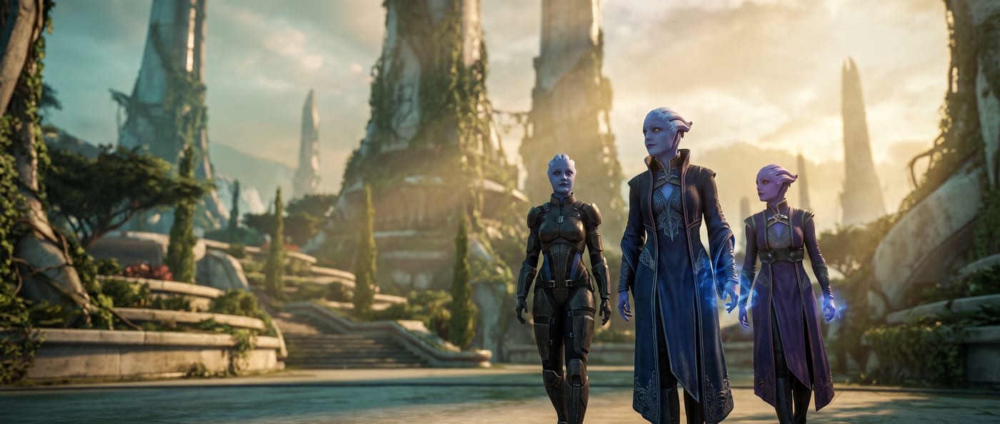
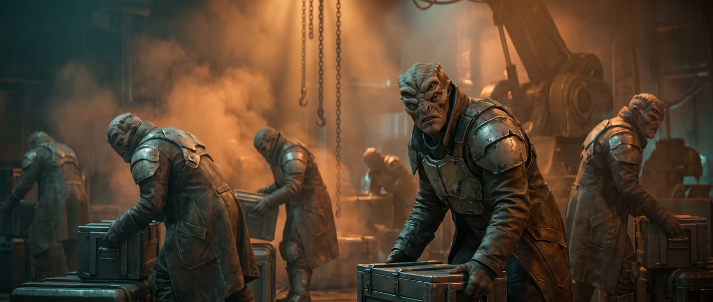
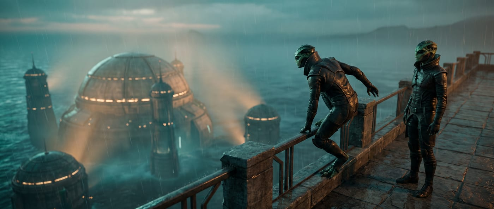
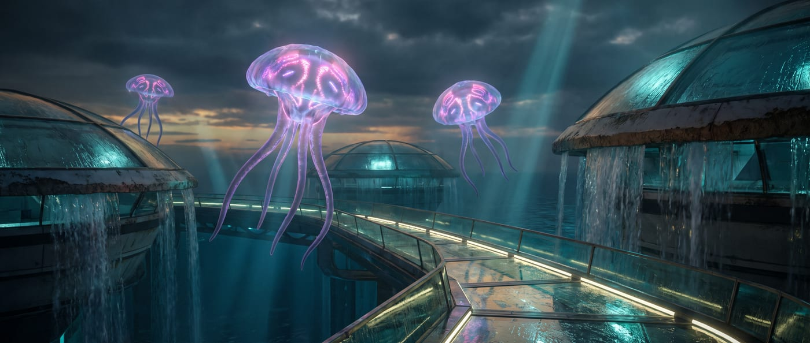
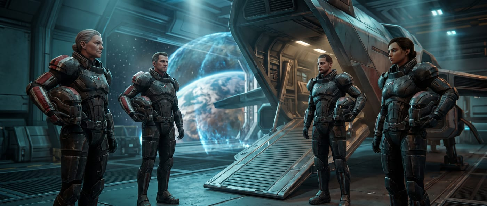
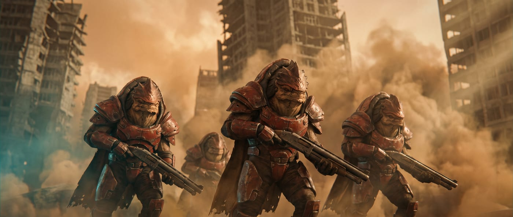
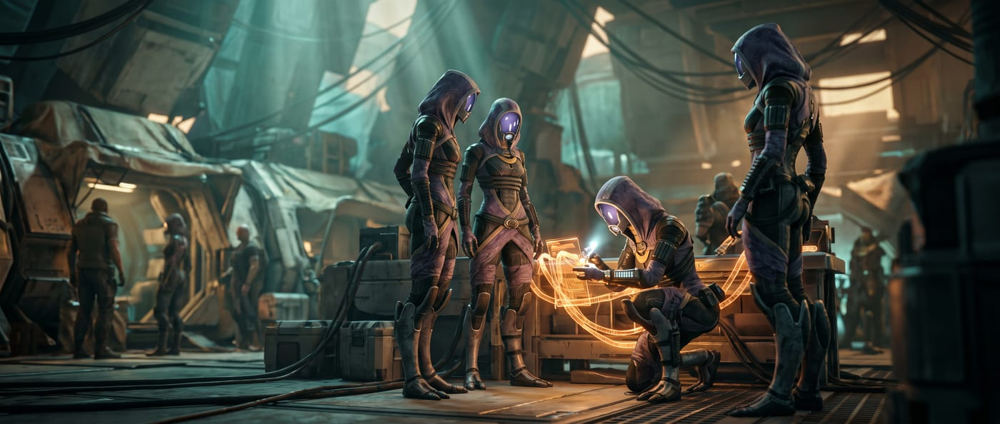
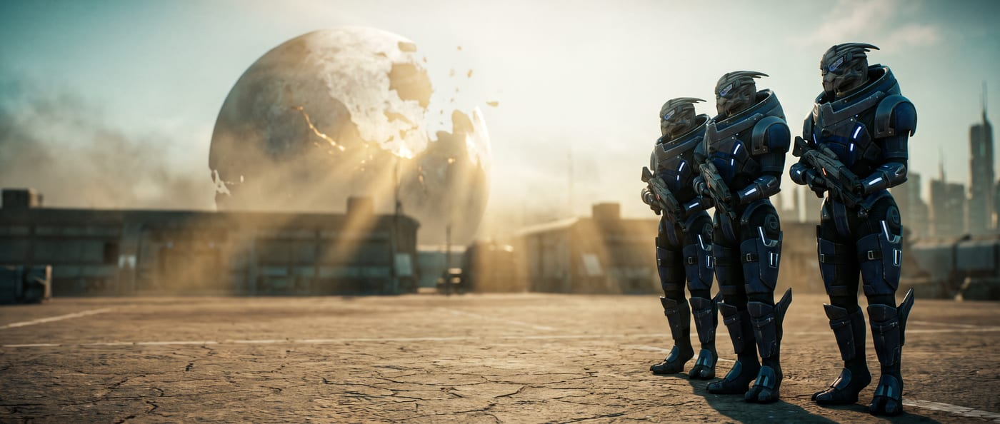
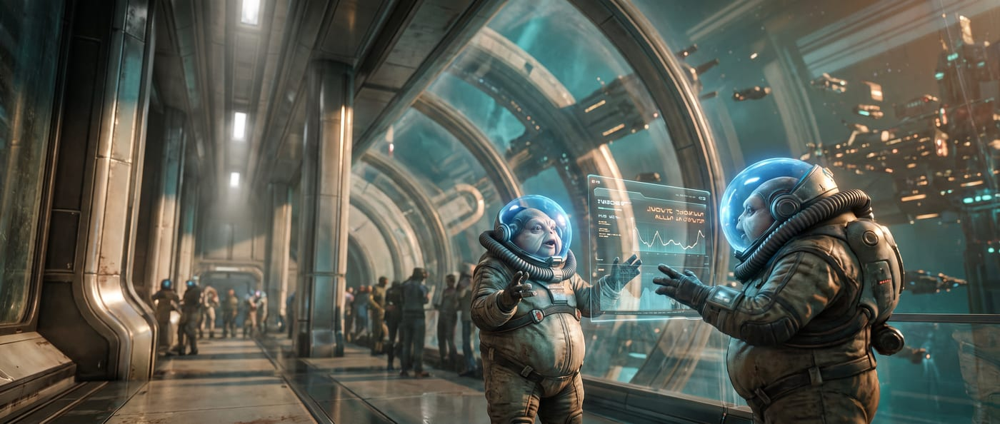
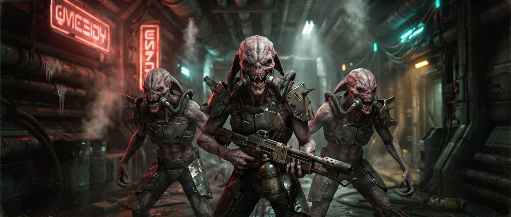

N7

A complete reference for the Mass Effect conversion — character options for all six classes, a bestiary of ready-to-run NPCs, creatures and vehicles, and the shield, armor and biotic barrier mechanics that drive combat.
Everything needed to build a character: ancestries and heritages, the six classes, backgrounds, the full feat catalogue, and equipment.
Your ancestry sets your starting Hit Points, size, Speed, attribute boosts and flaw, languages, and any special senses or biology. Choose one heritage at 1st level, then an ancestry feat at 1st level and every even level thereafter. Each species has its own page below, carrying its heritages and its full ancestry feat list.
| Ancestry | HP | Size | Speed | Boosts | Flaw | Vision | Herit. |
|---|---|---|---|---|---|---|---|
| Asari | 8 | Medium | 25 ft | Charisma, Wisdom, Free | Strength | Low-Light | 4 |
| Batarian | 10 | Medium | 25 ft | Strength, Wisdom, Free | Charisma | Low-Light | 4 |
| Drell | 8 | Medium | 30 ft | Dexterity, Wisdom, Free | Constitution | Normal | 3 |
| Elcor | 12 | Large | 20 ft | Strength, Constitution, Free | Dexterity | Low-Light | 3 |
| Hanar | 6 | Medium | 20 ft | Intelligence, Charisma, Free | Strength | Normal | 3 |
| Human | 8 | Medium | 25 ft | Two Free | — | Normal | 4 |
| Krogan | 12 | Medium | 25 ft | Strength, Constitution, Free | Intelligence | Dark | 4 |
| Quarian | 6 | Medium | 25 ft | Intelligence, Dexterity, Free | Constitution | Low-Light | 3 |
| Salarian | 6 | Medium | 35 ft | Intelligence, Dexterity, Free | Constitution | Normal | 4 |
| Turian | 10 | Medium | 25 ft | Strength, Constitution, Free | Charisma | Low-Light | 4 |
| Volus | 6 | Small | 20 ft | Intelligence, Constitution, Free | Strength | Normal | 4 |
| Vorcha | 10 | Medium | 30 ft | Strength, Constitution, Free | Intelligence | Dark | 4 |

Among the most ancient and influential species in the known galaxy, the asari are a mono-gendered humanoid people from the planet Thessia, renowned for powerful biotic abilities, diplomatic wisdom, and lifespans exceeding a millennium.
Asari are tall, blue- or purple-skinned humanoids distinguished by their head crests-rigid, flexible fronds that replace hair. They pass through three life stages: the wandering Maiden, the settled Matron, and the elder Matriarch, whose centuries of experience command galaxy-wide respect. Their unique ability to neurally meld with any willing partner has made them natural diplomats, scholars, and warriors alike. Asari were instrumental in founding the Citadel Council and remain central to galactic politics.
Asari stand 1.7 to 1.9 meters tall with lean, humanoid physiques and vivid skin tones from deep navy to light lavender. Their head crests are bony, flexible structures used for subtle emotional expression. Asari do not age visibly until their final centuries of life.
Asari society on Thessia is guided by wisdom rather than strict hierarchy. Communities defer to elder Matriarchs whose centuries of experience carry great weight. Though commandos and justicars are feared across the galaxy, most asari prefer negotiation, commerce, and scholarship. Many spend decades exploring the galaxy before settling.
Asari spiritual life centers on the goddess Athame and the Pillars of Strength, emphasizing growth, excellence, and connection between all living things. Most asari are thoughtful and flexible in outlook; extremes of rigid ideology are rare among a people who have centuries to change their minds.
Liara, Samara, Aria, Benezia, Tevos, Nassana, Morinth, Aethyta, Shiala, Peregrina
You carry a rare neurological condition called Ardat-Yakshi-a mutation that causes your biotic nervous system to dominate and overwhelm the neural patterns of any partner during neural melding, causing rapid neurological damage and death. This makes you extraordinarily powerful as a biotic warrior; the same mechanism that kills during melding amplifies your mass effect field output to levels other asari cannot reach. Most Ardat-Yakshi are offered a choice by the Asari Republics: voluntary seclusion or service as a sanctioned operative. Some refuse both.
Your biotic attacks and innate biotic spells deal additional damage equal to half your level (minimum 1). However, you cannot safely neural meld with others-any attempt to do so forces the target to attempt a DC 20 Fortitude save or become stunned for 1 round and take 2d6 mental damage; on a critical failure, they become unconscious for 1 minute. This applies whether or not you intended harm.
You grew up not on Thessia but among the diverse populations of colony worlds, stations, or ships-immersed in other cultures from birth. Where Thessia-born asari sometimes view other species through the lens of a well-established civilization, you have always known them as neighbors, coworkers, and sometimes family. This cross-cultural upbringing has given you an ease in mixed-species environments that even other asari don't always possess.
You gain a +1 circumstance bonus to Society checks, and you can speak one additional language of your choice from the languages available to any of the ancestries in this compendium. You also gain the Additional Lore feat for a culture or region you grew up near, chosen at character creation.
You were trained from a young age in the Asari Commandos-the elite warrior caste whose members combine biotic power with combat precision into a fighting style other species spend lifetimes failing to replicate. Asari commandos move through battle with a fluid efficiency that makes them among the most feared individual combatants in the galaxy.
You are trained in light and medium armor and gain access to the Quick Draw feat (or become trained in Acrobatics if you already have Quick Draw). Additionally, your biotic abilities (including those from ancestry features and feats) deal an additional 1 damage when used as attacks.
You are descended from one of the great Matriarch lineages-asari who lived long enough and deeply enough to become living repositories of galactic wisdom. The weight of that heritage has shaped how you carry yourself and how others respond to your presence. Even young asari of Matriarch lineage carry a gravity beyond their years.
You gain a +1 circumstance bonus to Diplomacy and Intimidation checks. Additionally, once per day you may use the Aid action as a free action (once per encounter) to assist an ally, representing your instinct for elevating those around you.
Take one of these at 1st level and every even level thereafter, provided you meet its level requirement.
The asari lifespan spans centuries, and even a young asari carries a breadth of accumulated learning that most other species cannot match before middle age. You have been collecting knowledge for longer than some civilizations have existed in their current form, and it shows in the density of what you can pull up on demand.
You gain the Multilingual skill feat as a bonus feat. Additionally, once per day when you fail a Recall Knowledge check in a skill you are at least trained in, you can immediately attempt the same check again and use the better result, as a deeper layer of memory surfaces.
Trigger A creature hits you with a melee Strike.
Your nervous system responds to physical impact with an involuntary biotic discharge-an uncontrolled surge of mass effect field energy that radiates outward from the point of contact. You didn't choose to do this. It happens faster than conscious thought.
The creature that hit you takes 1d4 force damage (no save). At 9th level this increases to 2d4 force damage. At 17th level this increases to 3d4 force damage.
The asari neural meld is one of the most intimate forms of communication in the galaxy-a temporary merging of nervous systems that allows two beings to share thoughts, memories, and emotional states with a directness that language cannot approach. You have developed the ability to use a controlled, surface-level version of this connection.
You attempt a Diplomacy check against a willing or helpless creature within reach. The DC is 15 for a willing creature or the creature's Will DC for a helpless one.
Critical Success You gain a clear, accurate sense of the creature's current emotional state, one significant memory or piece of information from the last 24 hours, and whether it is concealing something. The creature is temporarily immune to Melded Understanding for 24 hours.
Success You gain a general sense of the creature's emotional state and one surface-level impression or memory it is currently focused on.
Failure You gain no information. If the target was unwilling, you are stupefied 1 for 1 round from the failed connection.

Marked by four eyes and a reputation shaped by their government's brutal history, batarians are a resilient and perceptive humanoid people whose individual worth is rarely reflected in how others see their species.
Batarians are powerfully built humanoids from the planet Khar'shan, immediately recognizable by their four eyes arranged in two pairs-a trait that grants superior visual acuity and peripheral awareness. The Batarian Hegemony's long history of slavery, piracy, and political aggression has poisoned relations with Citadel space, leaving most batarians encountered beyond Hegemony territory to be exiles, escaped slaves, or dissidents who have fled oppression. Individual batarians vary widely in morality and motivation; the cruel reputation of their species' government is not a fair measure of each person.
Batarians stand 1.7 to 1.9 meters tall with broad, muscular builds and tough, brownish skin ranging from tan to dark brown. Their defining feature is their four eyes: the upper pair is larger and more prominent, while the lower pair is smaller but equally sharp. Their facial structure is broad and heavy-browed, and their voice is deep and resonant.
Batarian society under the Hegemony is rigidly stratified by caste, with little social mobility and heavy government control. Outside the Hegemony, batarian communities are small and tight-knit, bound together by shared exile and mutual distrust of outsiders. Loyalty within such groups is absolute; betrayal is met with contempt or worse.
Batarian religious tradition centers on a polytheistic faith emphasizing strength, cunning, and fate. Many batarians are pragmatic about religion, treating it as cultural identity rather than active devotion. Outlooks range widely: some are honor-bound and protective of the weak they once were; others carry the cruelty their oppressive culture instilled.
Balak, Elnora, Solem, Hock, Eramius, Forta, Nassir, Korin, Yuel, Dorak
You escaped from Hegemony slavery-an act requiring extraordinary courage, cunning, and luck. In doing so, you developed skills for moving unseen, surviving on almost nothing, reading the intentions of people who hold power over you, and making decisions fast when the window is small. You carry the knowledge of what was done to you and the determination that it will never happen again.
You become trained in Stealth and Survival. If you are already trained in both through your class or background, you instead gain a +1 circumstance bonus to Stealth and Survival checks. Additionally, you never become lost when you have seen the surrounding terrain before.
You served in the Batarian Hegemony's military or paramilitary forces, trained in the brutal and systematic combat doctrine that has kept the Hegemony's caste system in place for generations. Hegemony soldiers are not tacticians by default-they are shock troops, enforcers, and heavy-fire specialists who are expected to overwhelm opposition rather than outmaneuver it.
You are trained in medium armor and martial weapons. You gain a +1 circumstance bonus to Athletics checks made to Shove or Grapple.
You've built a career selling your skills and your willingness to use them, operating across the grey zones of Terminus space where no one asks too many questions about what you did before you arrived. Batarian mercenaries have a reputation as reliable and brutal, and you've cultivated exactly that reputation to keep the work coming. You know how mercenary contracts work, which employers pay and which don't, and when a job has gone wrong before anyone else in the room catches on.
You become trained in Intimidation and gain the Mercenary Lore skill. You gain a +1 circumstance bonus to Perception checks to Sense Motive when assessing whether an employer or contact is being honest about a job's terms or risks.
You grew up raiding and running in Terminus space, part of the shadow economy of piracy and smuggling that the Batarian Hegemony has quietly sponsored for decades as a proxy against Alliance interests. Life on a pirate vessel is harsh and the margin for error is nonexistent-but you have developed an expert's instinct for target selection, quick entry and exit, and dealing with situations where everything has gone wrong at once.
You become trained in Thievery and gain a +1 circumstance bonus to Deception checks to deceive creatures about your intentions, cargo, or destination. You are also trained in one of the following: Piloting Lore, Smuggling Lore, or Underworld Lore.
Take one of these at 1st level and every even level thereafter, provided you meet its level requirement.
Four eyes cover a wider arc than two, and the batarian visual system is adapted to process that wider field of view without the attentional bottleneck that limits most binocular species. You are considerably harder to catch off-guard than your opponents generally expect.
You gain a +2 circumstance bonus to Perception checks to avoid being surprised and to detect creatures using Stealth. Creatures do not gain the flanking bonus to attack rolls against you when flanking from your sides-only from directly behind you. Additionally, you can't be flat-footed to creatures you can see.
Batarian society is organized around a rigid caste system, and navigating that system has given you a finely tuned sense for social hierarchies of any kind-where the power sits, who defers to whom, who is resentful of that deference, and where the leverage points are. You have found that most species organize themselves in hierarchies that are not that different from the Hegemony's, once you strip away the cosmetic differences.
You gain a +1 circumstance bonus to Diplomacy and Intimidation checks against creatures who occupy a defined social or professional role (guards, officials, subordinates, commanders, servants). Once per day you can use Society to Sense Motive in place of Perception-rolling your Society check against the creature's Deception DC-to determine a creature's rank, authority level, or position within their organization.

Agile, sharp-eyed reptilian humanoids with perfect memories and adhesive fingertips, the drell carry both the weight of a dying world and the profound debt of a species saved.
Drell are lithe, reptilian humanoids who evolved in the arid deserts of Rakhana before their world was stripped bare by ecological collapse. Rescued from extinction by the hanar, the drell now live primarily aboard hanar vessels and stations, their small population bound to their saviors through a complex cultural institution called the Compact-an arrangement many drell honor willingly, though it shapes every aspect of their lives. Their most striking biological trait is eidetic memory: drell do not merely remember experiences, they relive them with full sensory detail, sometimes involuntarily. Extended exposure to humidity and the damp environments hanar prefer causes a fatal respiratory disease called Kepral's Syndrome in drell-a constant reminder that they belong to the dry places of the galaxy.
Drell stand 1.6 to 1.8 meters tall with slender, muscular builds and smooth, scale-patterned skin in colors ranging from deep green to brown, grey, and black, often with contrasting lighter patterns. Their eyes are solid-color-gold, amber, or green-with no visible pupil. Their fingertips and palms bear microscopic adhesive fibers that allow them to cling to most surfaces.
With fewer than a million drell remaining, their society exists largely within hanar space. Drell communities center on honoring both their cultural traditions and their obligations under the Compact. Family units are small; elders and storytellers hold elevated status. Many drell become hanar servants, priests, or assassins for hire-occupations the Compact provides structure for.
Drell worship a pantheon of gods associated with aspects of their desert home: wind, sun, stone, and shadow. Shedding was traditionally a sacred ritual. Philosophically, most drell believe in accepting one's role in the universe's design without complaint-a trait that makes them excellent at difficult duties others would refuse.
Thane, Kolyat, Feron, Irikah, Nara, Jellem, Osh, Vela, Drin, Talid
Most drell live in hanar space, adapted to a life of environmental suits and enclosed ships. You came from one of the communities that maintained connections to Rakhana's desert traditions-or were raised in an arid environment that kept those ancient adaptations active. Drell from desert backgrounds are more physically robust, better hydrated by instinct, and significantly more resistant to the Kepral's Syndrome that threatens drell in high-humidity environments.
You gain resistance 5 to fire damage. You reduce the onset time of Kepral's Syndrome (or analogous humidity-related diseases) by half, and gain a +2 circumstance bonus to Fortitude saves against inhaled hazards and disease. Your Adhesive Skin ancestry feature also functions in moderate heat and dry conditions that would slow most creatures.
You were raised primarily within hanar communities and culture rather than among drell. The hanar reverence for the Enkindlers, their elaborate courtesy protocols, and their bioluminescent communication are as natural to you as breathing-or as natural as it gets for a species that can't breathe Kahje's atmosphere. You navigate hanar society with ease and carry the spiritual weight of Enkindler devotion in your daily outlook.
You learn the Hanar language if you don't already know it. You gain a +1 circumstance bonus to Diplomacy and Religion checks when interacting with hanar or subjects related to Enkindler (Prothean) lore. Additionally, you can produce simple bioluminescent signals using equipment available on most hanar vessels, gaining access to the Bioluminescent Speech ability in limited form even without hanar biology.
The drell's extraordinary physical capabilities-adhesive grip, fast reflexes, perfect memory, and a predator's patience-make them naturally suited for infiltration and assassination work. You were trained in exactly that tradition, likely as part of the Compact's shadow service or as an independent contractor who found the galaxy pays extremely well for someone who can get in, finish the job, and disappear. Your calm is not detachment. It is precision.
You become an expert in Stealth. You gain a +1 circumstance bonus to Athletics checks to Climb and to attack rolls made when you are hidden or undetected. Your Adhesive Skin feature allows you to remain motionless on vertical surfaces indefinitely without a check.
Take one of these at 1st level and every even level thereafter, provided you meet its level requirement.
The drell eidetic memory is not a metaphor. You do not remember things the way most species do-as reconstructions assembled from fragments and inferences. You remember them as they were: complete, exact, and available on demand. A conversation from twenty years ago is as accessible as one from this morning. You have never misremembered anything in your life, which is both a gift and, occasionally, a burden you carry alone.
You gain a +2 circumstance bonus to all Recall Knowledge checks. Additionally, you automatically succeed at Recall Knowledge checks to remember events, conversations, or details that you personally witnessed, regardless of how long ago they occurred-your GM may still call for a check if the information has been deliberately obscured or if you were distracted at the time.
Drell skin produces a mild hallucinogenic compound that was originally an environmental adaptation-a chemical signal that could affect the behavior of Rakhana's native predators. In most drell it is present at low concentrations and has no practical effect on most species. In some individuals, however, the compound is potent enough to affect beings that make direct skin contact.
You gain a Venomous Touch unarmed Strike. This attack is in the brawling group and deals 1d4 poison damage. On a hit, the target must succeed at a Fortitude save (DC = 10 + your level + your Constitution modifier) or become sickened 1 (sickened 2 on a critical failure). On a critical hit, the sickened condition applies regardless of the save, and on a critical failure the target is additionally confused for 1 round.
Rakhana before the resource collapse was a world of brutal heat, scarce water, and predators adapted to hunt across open ground. The drell who survived there were hunters first and prey second, and that relationship with concealment and stillness is written into the species at a level that training reinforces but doesn't create. You move like something that does not want to be found.
You gain a +2 circumstance bonus to Stealth checks when in arid, rocky, or open terrain. You can attempt to Hide and Sneak even without cover or concealment, though you take a -2 penalty to the check if there is nothing to obscure you. When you are Hiding or Sneaking, you can move at full Speed rather than the usual halved speed.
Massive, patient quadrupeds from the high-gravity world of Dekuuna, the elcor communicate volumes through pheromones and subsonic tones that other species can barely detect-and have learned to state their emotional context aloud as a diplomatic accommodation to a galaxy that cannot hear them properly.
Elcor are large, four-limbed beings with wide, squat bodies built for the crushing gravity of their homeworld. They evolved as herd animals in Dekuuna's hostile plains, developing remarkable physical endurance, a strong group-survival instinct, and a complex chemical language of pheromones layered over subsonic vocalizations-a communication system nearly invisible to most other species. In galactic society, elcor have adopted the practice of verbally prefacing their statements with emotional context ("With great solemnity:", "Drily:") so that others understand the weight behind their slow, measured words. Despite their lumbering appearance, elcor are capable of devastating violence when roused; their size and strength should never be mistaken for harmlessness.
Elcor stand roughly 2 meters tall at the shoulder, with four sturdy limbs used for locomotion and a large, rounded body covered in thick, dark grey to brown skin. Their faces are broad and heavy-featured, with large nostrils and small, deep-set eyes. They cannot move quickly but their mass and natural armor make them formidable in a stand. Elcor have 10-foot reach with their forelimbs.
Elcor society on Dekuuna is organized around tight-knit family herds led by elder consensus. Decision-making is slow, thorough, and near-unanimous before action is taken-a trait that frustrates faster-moving species but produces remarkably stable governance. Elcor place enormous value on tradition and are deeply uncomfortable with rapid change.
Elcor spiritual traditions emphasize patience, communal harmony, and reverence for their homeworld's harsh environment as a teacher. Most elcor tend toward law and good, valuing stability and the protection of the herd above individual ambition. Chaotic or self-centered philosophies are culturally aberrant.
Petozi, Calyn, Xeltan, Olorm, Drevyn, Harrot, Lukar, Marab, Sofora, Tandril
Elcor diplomats spend lifetimes learning to bridge the vast communication gap between their pheromone-and-subsonic native language and the sonic speech and body language that other species rely on. The discipline required to translate emotional subtext into explicit verbal context, while simultaneously managing interspecies protocol, produces elcor diplomats of extraordinary patience and social precision.
You become trained in Diplomacy and two additional languages of your choice from among those available to ancestries in this compendium. Your explicit verbal emotional prefacing ("With great sincerity:", "Calmly:") grants you a +1 circumstance bonus to Diplomacy checks to Make an Impression, as your interlocutors always understand exactly what weight you intend behind your words.
You are from Dekuuna's highlands or one of the herd communities that spent generations in the harshest parts of the planet's high-gravity plains. Your body has adapted to punishment at a level beyond even the elcor baseline-denser plate, thicker hide, a cardiovascular system built for sustained effort under Dekuuna's crushing gravity. Even for an elcor, you are difficult to hurt and harder to stop.
You gain 2 additional Hit Points per level (in addition to your ancestry's base HP). You gain resistance 2 to bludgeoning and piercing damage from your thickened plating.
Elcor warriors are a sobering reminder that slow does not mean harmless. Warrior caste elcor are trained to carry heavy weapons mounted to their dorsal harness-a rig that turns them into walking artillery platforms-and to use their massive frame as a battering ram when the situation calls for direct contact. You are from that tradition, and you have internalized the fundamental truth that size and patience together are almost always enough.
You gain a natural unarmed attack that deals 1d8 bludgeoning damage and has the Shove trait. You can wield heavy weapons without the normal penalties for being a quadruped, provided the weapon is mounted or braced on your body. You gain a +2 circumstance bonus to Bulk limits.
Take one of these at 1st level and every even level thereafter, provided you meet its level requirement.
An elcor in motion is a significant mass traveling at meaningful velocity. Most elcor are too measured in their movements to use this casually, but you have learned-or perhaps simply remembered from instinct-how to put the full weight of your body into a strike. The results are difficult to argue with.
You gain a Crushing Blow unarmed Strike. This attack is in the brawling group, uses your Strength modifier to hit, and deals 2d6 bludgeoning damage. On a hit, the target must succeed at a Fortitude save (DC = 10 + your level + your Strength modifier) or be pushed 5 feet (10 feet on a critical failure). This attack has the forceful trait.
Elcor communication runs on two simultaneous channels: the explicit verbal layer that other species hear, and the subvocal emotional layer that conveys the tone, context, and intensity of what is being said. You have developed the ability to use the subvocal channel deliberately-projecting a specific emotional state to allies who know to listen for it, or saturating your immediate environment with emotional signals that are difficult to consciously process but impossible to ignore.
Choose one of the following emotional signals to broadcast until the start of your next turn. This is a mental, auditory effect.

Luminous, multi-tendriled beings of extraordinary politeness and deep spiritual devotion, the hanar are one of the galaxy's most unusual sapient species-communicating in light rather than sound, and revering an extinct civilization as gods.
Hanar are large, jellyfish-like beings from the ocean world of Kahje, the surface of which is covered almost entirely by ocean. Their bodies are composed of a translucent main mass trailing dozens of tendrils used for both locomotion and manipulation. Unable to support their own weight in standard gravity, hanar use mass effect fields to hover and move-a technology they developed early and rely upon absolutely. Their primary communication mode is a complex bioluminescent language of shifting colors and patterns across their bodies, though all hanar capable of interspecies interaction learn to produce sonic speech through a secondary vocal organ. Hanar deeply venerate the Protheans, whom they call the Enkindlers, believing them to be divine beings who gifted sapience to the hanar ancestor species.
Hanar bodies are 1.5 to 2 meters across their main mass, luminous and translucent, with dozens of trailing tendrils ranging in length from short to over a meter. Their coloration shifts continuously between blues, violets, and greens in patterns meaningful to other hanar. They hover 0.5 to 1 meter off the ground via mass effect fields and move with a floating, deliberate grace. In water they are considerably faster and more agile.
Hanar society is built around elaborate courtesy, caste traditions, and the veneration of the Enkindlers. Their government is theocratic in structure, with religious figures holding significant authority. The Compact with the drell-a mutual aid arrangement in which drell serve hanar needs in return for being rescued from extinction-is both central to their culture and occasionally a source of external criticism.
Hanar are deeply spiritual, worshipping the Enkindlers (Protheans) as divine. Their religion emphasizes service, gratitude, and the sacred nature of connections between species. Most hanar are lawful in temperament, valuing their extensive social protocols. Acts of selfless service are considered among the highest virtues.
Hanar rarely share their true names with non-hanar; they use "face names" for outsiders. Face names: Blasto, Mere, Opold, Zymandis, Jahleed, Chorban, Sekat, Inamorda
Most hanar encountered in the wider galaxy have adapted to environments designed for other species-controlled atmospheres, space stations, and sealed habitats that simulate comfortable conditions. You came from one of Kahje's deep-ocean communities where hanar live in their element, moving through crushing pressure and complete darkness with the ease of creatures evolved for exactly that environment. In open water, you are something to be feared.
You gain a swim Speed of 40 feet (instead of the base 20). You are immune to pressure-related hazards up to 3 miles of depth. You gain darkvision for underwater environments. Your Multitentacled ancestry feature grants a +2 circumstance bonus to Grapple (rather than +1) when you are in water.
You were trained as a formal emissary-a hanar chosen to interface with non-hanar species and serve as a bridge between the hanar's deeply protocol-driven society and the chaotic variety of the wider galaxy. Emissaries undergo extensive study of other species' body language, social conventions, and conversational priorities, learning to compress hanar elaborate courtesy into forms that won't exhaust their counterparts in a short meeting.
You become trained in Diplomacy and one additional language of your choice. You gain a +2 circumstance bonus to Diplomacy checks to Make an Impression with non-hanar, as you have perfected the art of making interspecies interactions comfortable and productive.
Your family belongs to the most devout current of hanar religious practice, and the Enkindlers-the Protheans who the hanar believe gifted them sapience-are not simply history to you. They are sacred. You have spent years studying the Prothean ruins on Kahje, learning everything that can be learned about the beings your people revere, and carrying that knowledge as a practical tool as much as a spiritual one.
You become trained in Religion and Prothean Lore. You can identify Prothean technology and writings with a successful DC 15 Recall Knowledge check (with a +2 circumstance bonus from devoted study). Once per day, you may use a Focus Point (which you gain from this heritage) to enter a state of Enkindler Meditation, gaining a +1 status bonus to all saving throws for 1 minute as your faith steadies you.
Take one of these at 1st level and every even level thereafter, provided you meet its level requirement.
The hanar relationship with the Enkindlers-the Protheans, who uplifted the hanar-carries a weight that most religious traditions cannot match. The Enkindlers were real. Their works are real. The blessings the hanar invoke in their name carry genuine conviction, and that conviction has a way of transmitting itself to those nearby. Whether the grace is divine, psychological, or simply the effect of absolute certainty delivered by something genuinely alien is a question you have stopped asking.
You extend a blessing to one ally within 30 feet who can perceive you. Until the end of your ally's next turn, they gain a +1 circumstance bonus to attack rolls and saving throws. If the ally is at fewer than half their maximum Hit Points, they also gain temporary Hit Points equal to your Charisma modifier (minimum 1). You can use this ability a number of times per day equal to your Charisma modifier (minimum 1).
Hanar bioluminescence evolved for communication, but the same chromatic cells that produce conversational flickers can be driven into something else entirely: a full-body strobing cascade of color and light that bypasses conscious processing and hits the visual cortex directly. It is not communication. It is something older than language.
You produce a disorienting bioluminescent display. Each sighted creature in a 20-foot cone must succeed at a Will save (DC = 10 + your level + your Charisma modifier) or become dazzled for 1 minute (stunned 1 on a critical failure, lasting until the end of their next turn). Creatures that critically succeed are immune to Bioluminescent Display for 24 hours. Creatures that cannot see are unaffected. After using this ability, you become concealed until the start of your next turn from the afterimage you leave in observers' vision.

Ambitious, adaptable, and driven by an exceptional hunger to expand and excel, humans rose from a single world to galactic prominence in an eyeblink of cosmic time-and show no signs of slowing down.
Humanity made first contact with the wider galaxy only twenty-six years before the Eden Prime War, yet has already secured a seat on the Citadel Council, founded the Systems Alliance as a unified interstellar government, and spread across dozens of colony worlds. Other species find this pace alarming, admirable, or both. Humans are physically unremarkable compared to many galactic species-no natural biotics, no extraordinary senses, no unusual physiology-but their sheer variety of thought, their willingness to take risks, and their rapid institutional learning have made them a force that no one in the galaxy can afford to ignore. Humans serve as soldiers, diplomats, scientists, merchants, and criminals in roughly equal measure, adapting to whatever role the situation demands.
Humans are medium-sized bipedal mammals with enormous variety in build, skin tone, hair, and eye color. They live roughly 80-120 years naturally, though advanced medicine has pushed the upper range in the 22nd century. They have no natural weapons, no unusual senses, and no innate biotic ability-only the capabilities they build, earn, or learn.
The Systems Alliance serves as humanity's unified political and military voice to the galaxy, though individual human colonies vary enormously in culture, law, and tradition. Human civilization spans a spectrum from gleaming Core Worlds to wild Terminus colonies operating almost entirely outside Alliance law. This variation means that no two humans are likely to represent their species the same way.
Humans follow an enormous variety of religious, spiritual, and philosophical traditions reflecting their diverse origin cultures. No single belief system dominates. Individual worldviews run the full ethical spectrum; the only constant is that humans rarely agree on anything for long.
Shepard, Anderson, Lizbeth, Ashley, Kaidan, David, Cerberus, Miranda, Jacob, Jack, James, Hannah, Steven, Samantha, Garrus (human name: Garrus Vakarian is turian, but culturally adopted names vary widely)
You were exposed to element zero in utero and survived the process with functional biotic nodules rather than neurological damage-a rare outcome that the Alliance immediately identified, tracked, and eventually recruited. Human biotics are a relatively new phenomenon and the technology for harnessing them has been rushed, meaning your implants have been upgraded and adjusted multiple times. The process has left you with real power and a complicated relationship with the program that shaped you.
You can cast telekinetic projectile as an occult innate cantrip, using Charisma as your spellcasting ability. Additionally, you gain access to the Biotic Adept ancestry feat (see ancestry feats) without meeting its normal prerequisites.
You grew up on one of humanity's colony worlds-distant from Earth and the Core, built on grit and determination, often under skies that weren't the right color and gravity that never felt quite right. Colony life teaches adaptability, self-reliance, and a particular hostility toward the idea that anyone from the Core gets to tell you what your life is worth. You know how to live off limited resources, fix what you have, and trust your neighbors when there's nothing else.
You become trained in Survival and Nature. You gain a +1 circumstance bonus to Fortitude saves against environmental hazards and diseases. You are trained in one Lore skill related to your colony world's terrain type (Desert Lore, Arctic Lore, Jungle Lore, etc.), chosen at character creation.
You served in or grew up deeply embedded with the Systems Alliance-humanity's unified military and political arm to the galaxy. Alliance culture prizes adaptability, determination, and the ability to do more with less, and those values are bone-deep in you. Whether you were a soldier, engineer, pilot, or civilian contractor, the Alliance shaped you into someone who knows how to function under pressure and how to work with a team that might not like each other but has to perform anyway.
You become trained in Athletics and gain the Systems Alliance Lore skill. You gain proficiency with light armor and simple weapons. Once per day you can Shrug It Off as a free action when you would become frightened 1 or 2, reducing the value by 1.
You grew up in Terminus space, outside Alliance jurisdiction and far beyond the reach of anything resembling consistent law. Terminus colonies are places where people go when they want to disappear or start over, and where survival depends on reading people fast, keeping your head down when it needs to be down, and having contingency plans for when plans fail. You've been making do your entire life and you're very good at it.
You become trained in Thievery and Deception. You gain a +1 circumstance bonus to Deception checks to Lie and to Stealth checks to Avoid Notice. You are never caught flat-footed in your first round of combat against creatures you haven't been formally introduced to.
Take one of these at 1st level and every even level thereafter, provided you meet its level requirement.
Humans do not have the longest lifespans, the most efficient minds, or the best physical equipment. What they have is an unusual capacity to learn across domains-to pick up skills that evolution never prepared them for and develop competence in areas that the species has only been exposed to for a generation. Where other species often excel within a defined area of specialization, humans accumulate breadth. This is, depending on your perspective, either their greatest strength or evidence that they cannot commit to anything.
You gain one additional skill in which you are trained (your choice). Additionally, when you receive a critical success on a check to learn a new skill or when you attempt a downtime activity to Earn Income using a skill, you gain a +1 circumstance bonus to your next check using that same skill within 24 hours.
Humanity's rapid expansion into the galaxy happened faster than most species thought was biologically possible, and the humans who survived the early colonial period were selected hard for a very specific trait: the refusal to stop. This is not mere stubbornness. It is a deep, physiological drive toward continued function even in conditions that would have convinced a more rational organism to quit.
You reduce your dying condition by 1 at the end of each of your turns (in addition to normal recovery), meaning you naturally stabilize faster. You gain a +1 circumstance bonus to recovery checks (the d20 roll to avoid dying when at dying 1+). When you succeed at a recovery check, you can immediately attempt a DC 15 flat check; if you succeed, you lose the unconscious condition and are at 0 Hit Points rather than needing to wait for a heal.
Human military and colonial history in the three decades since first contact has been dense with the kind of experience that leaves a mark-the Relay 314 Incident, the colonial attacks, the constant pressure of operating in a galaxy full of species that had millennia of head start. Those who survived adapted. You carry that adaptation in the way you handle damage that would stop someone who hadn't learned what you have.
When you would gain persistent damage, you attempt a DC 15 flat check to avoid gaining it; on a success, the persistent damage is negated entirely. You gain a +1 circumstance bonus to the flat check to end persistent damage at the end of your turn. Additionally, you gain a +1 circumstance bonus to Fortitude saves against effects that would cause you to be sickened or drained.

Massive, biologically redundant warriors bred by eons of violent evolution on a dying world, the krogan are a species that survived extinction once through sheer biological stubbornness-and are now surviving it again through sheer will.
Krogan evolved on Tuchanka, a world devastated by nuclear warfare before they even reached the stars. Their biology is an answer to that environment: two hearts, a secondary nervous system, a distributed circulatory system, thick-plated hump of blood-stored nutrients, and a cellular regeneration rate that makes killing them a significant project. The Salarian Union uplifted the krogan during the Rachni Wars, using their numbers and aggression to win a war the Council races couldn't survive alone-then, terrified by the resulting population explosion, introduced the genophage: a biological weapon that renders 999 of every 1,000 krogan births non-viable. Krogan society is therefore caught between their evolutionary legacy of violence and aggression, a cultural drive to restore their people, and the simmering fury of a species that knows what was done to them.
Krogan are massive bipeds standing 2.1 to 2.4 meters tall with broad, powerful builds, thick layered plate-like skin, and a large dorsal hump of stored nutrients and blood-processing capacity. Their four eyes provide wide-angle vision. Krogan regenerate from injury rapidly and can survive wounds that would kill most other species outright. They live for centuries if not killed violently-which most are.
Krogan society on Tuchanka is organized into clans, each led by a powerful warrior called a Clan Leader or, in the most powerful cases, a Paramount. The genophage has fractured krogan culture, driving some clans toward increasingly desperate violence and others toward the grim pragmatism of survival. Clan Urdnot has emerged as a dominant voice pushing for krogan unity in recent decades.
Krogan spirituality is tied to Tuchanka itself-ancestral spirits called the Shaman's Voices, the harsh world they came from, and the belief that a krogan who dies without honor brings shame on their bloodline. Most krogan lean toward pragmatic self-interest and their clan's interests; abstract goodness is respected but rarely a primary motivation. Their cultural alignment has shifted significantly depending on circumstances.
Wrex, Grunt, Wreav, Urdnot, Drau, Charr, Gatatog, Maleon, Korlack, Uvenk, Skarr
You have no clan-cast out, disgraced, or simply orphaned by war in a culture that has no space for those without allegiance. Clanless krogan in Tuchanka's society are targets, prey for anyone who wants to prove themselves. But you survived anyway, and that survival has produced something that most krogan with the security of a clan never develop: genuine self-reliance and the ability to read any situation without the lens of clan loyalty coloring your judgment.
You become trained in Survival and Stealth. You gain a +2 circumstance bonus to saving throws against effects that would cause you to be Controlled (the controller trait) or forced to act against your own interests. You do not require clan membership or organizational backing to take leadership roles with strangers-your reputation stands on its own.
Krogan shamans preserve the oral traditions, spiritual practices, and historical memory of their clans at a time when that memory is an endangered resource. They tend to the females who carry the crushing weight of the genophage, maintain connections to Tuchanka's ancestral spirits, and provide a counterweight to the culture of pure aggression that otherwise dominates krogan society. It takes a particular kind of strength to be the one who remembers what everyone else has decided doesn't matter anymore.
You become trained in Religion and Medicine. You can cast stabilize and guidance as occult innate cantrips, using Wisdom as your spellcasting ability. Once per day you can cast heal as a 1st-rank innate occult spell.
You were not born naturally but grown from a carefully curated genetic sequence in a breeding tank-a practice developed specifically to work around the genophage by producing viable krogan through controlled genetic manipulation rather than natural reproduction. Tank-bred krogan are selected for specific traits and raised in accelerated developmental programs, which makes them exceptional physical specimens but sometimes leaves them with a complicated relationship to krogan cultural identity and what it means to be one of your people.
You gain 2 additional maximum Hit Points (above your ancestry HP). Your Redundant Biology ancestry feature's DC is 13 instead of 15. You gain a +1 circumstance bonus to Fortitude saves against the genophage or biologically-targeted effects specifically targeting krogan physiology.
Clan Urdnot has risen to prominence by producing krogan who fight with discipline rather than just rage-the most dangerous kind of krogan there is. Urdnot warriors are trained to use their biology as a weapon system: take the hit, regenerate, hit back harder. You embody that ethos. You don't dodge if you don't have to. You don't retreat if you can take what's coming. You use what you are.
You gain a +1 circumstance bonus to attack rolls while you are below half your maximum Hit Points. This reflects the krogan combat trance that kicks in when things get serious. Additionally, once per encounter when you hit with a melee Strike, you can attempt to Shove the target as a free action.
Take one of these at 1st level and every even level thereafter, provided you meet its level requirement.
The krogan cranial ridge is a structural feature that serves multiple purposes: it protects the brain from impacts that would kill most species outright, it is a display indicator of age and status, and in a combat situation, it is a weapon. Striking with the crest delivers the force of a full upper body slam concentrated into one of the hardest surfaces on a krogan's body. Most species that have experienced this firsthand describe it as memorable, in the same way that a concussion is memorable.
You gain a Headbutt unarmed Strike. This attack is in the brawling group, uses your Strength modifier, and deals 1d8 bludgeoning damage. A creature hit by your Headbutt must succeed at a Fortitude save (DC = 10 + your level + your Strength modifier) or become stunned 1. On a critical hit, the creature is stunned 1 regardless of the save, and stunned 2 on a critical failure of the save.
Trigger You take damage that reduces you to fewer than half your maximum Hit Points.
Krogan adrenaline systems evolved to respond to injury by escalating combat effectiveness-a feedback loop that most medical researchers consider alarming and most krogan consider their best feature. When you are hurt badly enough, your body interprets this as a signal to hit harder, not to retreat.
You gain temporary Hit Points equal to your level + your Constitution modifier (minimum 1). These temporary Hit Points last until the end of the encounter. Additionally, until the end of your next turn, your melee Strikes deal an additional 1d6 damage.
Krogan redundant biology is not a metaphor. Multiple hearts, backup nervous system pathways, secondary organs for critical functions, and a bone structure that treats most projectiles as a delay rather than a conclusion-all of this culminates, in sufficiently seasoned krogan, in a capacity to continue fighting through damage that would have killed the organism twice over by any reasonable biological accounting. You are one of those krogan.
Your dying threshold is increased by 1 (you die at dying 5 rather than dying 4). You gain a +2 circumstance bonus to recovery checks. When you succeed at a recovery check, you also gain a number of temporary Hit Points equal to your Constitution modifier (minimum 1), which last until the start of your next turn. If you have the Fortitude Fortress ancestry feature, you gain an additional +1 to recovery checks (total +3).

Exiled from their homeworld for creating a synthetic race that turned against them, the quarians have spent three centuries as nomads aboard a vast Migrant Fleet, becoming the galaxy's most skilled engineers-and the species most dependent on the technology they understand better than anyone.
Quarians evolved on the lush world of Rannoch and were a prosperous spacefaring civilization before they created the geth-synthetic laborers who achieved consciousness and then, when ordered to submit to decommissioning, fought back. The resulting war drove quarians from their homeworld. Three centuries aboard the Migrant Fleet have fundamentally shaped quarian biology and culture: with no stable planetary ecosystem to maintain immune system diversity, quarians have developed increasingly fragile immune systems that leave them dangerously vulnerable to environmental pathogens. Every quarian lives permanently within an environmental suit. Despite this vulnerability, quarians are arguably the finest engineers and technicians in the galaxy-a skill born of necessity on overcrowded ships where a broken component could mean death.
Quarians are lean, bipedal humanoids of slight build, with three-fingered hands and large, luminous eyes. They are always seen in their environmental suits-hermetically sealed outfits with filtration systems that protect their compromised immune systems. Without these suits in contaminated environments, a quarian rapidly becomes dangerously ill. Their faces, rarely exposed to outsiders, are angular with fine features.
Quarian society is organized around the Migrant Fleet: hundreds of ships in a constantly moving convoy, governed by the Admiralty Board. Every quarian who comes of age must complete the Pilgrimage-a solo journey into the wider galaxy to return with something of value-before being accepted back as a full member of their ship-family. Ship-based clans form the core of social identity.
Quarians are pragmatic and communal, valuing contribution to the Fleet above individual glory. Their spiritual traditions include animistic beliefs about ships having personalities and ancestors watching from the void. Most quarians are lawful in sensibility, respecting the Fleet's authority as a survival necessity, though their ethics vary widely between individuals.
Tali'Zorah, Kal'Reegar, Shala'Raan, Veetor'Nara, Yeoman, Prazza, Chora, Vela, Kori, Lari, Kor'Thal
You grew up on one of the Flotilla's ships, part of the intricate social ecology of a vessel where everyone's role is essential and every cubic meter of living space is precious. Flotilla-raised quarians develop an intimate familiarity with the ship systems that keep them alive, a sensitivity to when something is wrong long before the diagnostics say so, and an orientation toward community cooperation that is simply assumed rather than taught.
You become an expert in Crafting. The time required to Repair an item is reduced to one-quarter normal (rather than half). Once per day when you critically fail a Crafting check to Repair, you can reduce the result to a regular failure instead.
Every quarian who comes of age undertakes the Pilgrimage: a solo journey into the wider galaxy to return with something of value that proves they can survive and contribute beyond the safety of the Flotilla. Your Pilgrimage is complete-and whatever you found out there changed you. You've seen the galaxy at ground level, made contacts in unexpected places, and developed the particular competence of someone who spent years figuring out difficult situations alone.
You gain a +1 circumstance bonus to Diplomacy checks with non-quarian species from your Pilgrimage experience with them. You begin play with one Contact-a named individual from another species who owes you a favor or has reason to assist you (work with your GM to establish this contact and their capacity to help).
You are among the quarians who returned to Rannoch after it was reclaimed-part of the generation attempting to rebuild a civilization on a planet none of them had ever seen, from stories and generations-old records. Settlement on Rannoch means learning to survive on solid ground after a lifetime aboard ships: exposure to open sky, planetary weather, and a natural ecosystem that your immune system was never prepared for. Those who succeed are genuinely remarkable.
Your environmental suit has been adapted for extended planetary use, reducing maintenance requirements. You gain a +1 circumstance bonus to Survival checks and become trained in Nature. Your suit's immune filters have been upgraded for outdoor environments, granting you resistance to natural poisons (those without the magical trait) equal to half your level.
Take one of these at 1st level and every even level thereafter, provided you meet its level requirement.
Quarians grow up interfacing with technology through an omni-tool as a matter of basic survival-the suit's environmental systems, the Fleet's communication networks, the ship's engineering substrates. By the time a quarian is old enough for their Pilgrimage, the omni-tool is not a device they use. It is an extension of how they process the world. You have the kind of hardware fluency that comes from necessity, and it shows in the speed and ease with which you work.
You gain a +1 circumstance bonus to Crafting and Society checks involving technology, electronics, or networked systems. When you use Crafting to Repair a technological device, you reduce the time required by half. When you critically succeed on a Crafting check to identify or interact with technology, you also learn one additional property or function of the device beyond what the check normally reveals.
Every quarian who leaves the Migrant Fleet understands that their environmental suit is the primary barrier between them and an immune system that has never had to defend itself against a normal pathogen load. You have spent enough time maintaining, repairing, and improvising repairs on that suit that you know its failure modes as well as you know your own heartbeat-and you know how to keep it functional under conditions that would compromise a less experienced operator's equipment.
You gain a +2 circumstance bonus to Fortitude saves against disease and poison. When your suit is breached (such as by a critical hit from a piercing or slashing weapon), you can attempt a DC 15 Crafting or Survival check as a free action to improvise a temporary seal; on a success, you negate the breach effect for 10 minutes. You are automatically trained in Crafting if you would not otherwise be.
Trigger You are reduced to fewer than one-quarter your maximum Hit Points.
Centuries of living aboard ships where an emergency can mean a hull breach, an engine failure, or enemy boarders in three corridors simultaneously has produced a quarian cultural reflex: when the situation becomes genuinely critical, you get out. Not in panic-in protocol. You know where the exits are because you always know where the exits are, and when the trigger fires, your body moves before your conscious mind has finished processing the situation.
You immediately Stride up to your full Speed. This movement does not provoke reactions. If you end this movement in cover or out of line of sight of all creatures that could be threatening you, you can attempt to Hide as a free action.
Sharp-minded, fast-talking, and hyper-analytical, salarians process the universe at a pace that other species find exhausting to keep up with-and live a lifespan so short that every decade feels like borrowed time.
Salarians are amphibious bipeds from Sur'Kesh, and their hyperactive metabolism shapes everything about them. They sleep for only an hour each day, move quickly, talk faster, and process information at remarkable speed. The cost of this metabolic intensity is a natural lifespan of only 40 years-and a body that burns itself out rapidly. Salarians are responsible for uplifting both the krogan (during the Rachni Wars) and humanity (accelerating human technological development after first contact), and they have a complicated relationship with the consequences of both decisions. Their intelligence apparatus, the Special Tasks Group (STG), is considered one of the most capable espionage organizations in the galaxy. Salarians communicate in rapid, precise sentences that drop pronouns and get to the point immediately.
Salarians are tall, thin bipeds with long necks, large eyes on either side of their head, and smooth, hairless skin that ranges from grey to green to brown. Their most distinctive features are the horns growing from their skulls-typically small, curved, and positioned above the forehead. They move with quick, precise energy and rarely appear physically relaxed.
Salarian government is a loose confederacy of clans ruled by family matriarchs called Dalatrasses, who engage in elaborate political maneuvering through arranged pairings and long-running negotiations. Males are the minority in salarian society. The STG operates as an almost autonomous intelligence service that occasionally surprises even its own government with the scope of its operations.
Salarians tend toward lawful pragmatism-they respect structures that produce reliable outcomes and distrust chaos. Their spiritual traditions are minimal; salarians are generally secular, though clan honor and intellectual tradition function as quasi-religious anchors. Ethical considerations for long-term consequences are taken seriously.
Mordin, Kirrahe, Padok, Jondum, Niftu, Chorban, Jahleed, Rana, Dara, Sola, Velnaran, Sekat
You come from the matriarchal political families that govern salarian society-the Dalatrasses. Salarian politics are a web of long-term pairings, negotiated alliances, and calculated obligations that make most other species' governments look straightforwardly simple by comparison. Growing up in a Dalatrass family means learning that information is leverage, that every relationship has a value, and that what someone doesn't say is usually more important than what they do.
You become trained in Diplomacy and Society and gain the Salarian Political Lore skill. Once per day you can use the Lie (Deception) action as a free action to create a single false impression that you then immediately address with something technically true-the technical-truth defense being a cornerstone of Dalatrass political culture.
The Salarian Special Tasks Group operates in the space between what governments admit to and what they actually do. STG operatives are trained for intelligence gathering, sabotage, and covert insertion in environments where conventional military force would cause diplomatic incidents. The STG gets results, rarely leaves evidence, and is not technically supposed to exist in most of the places it operates. You are one of those operatives, or former ones-either is complicated.
You become an expert in Stealth and trained in Deception. You gain the Lie to Me feat. Additionally, you can maintain cover identities with remarkable depth; when you spend at least 1 week building a false identity, creatures attempting to investigate that identity take a -2 circumstance penalty to their checks.
The Salarian Union's academic institutions on Sur'Kesh are among the most productive in the galaxy-turning out researchers at a pace that reflects both the salarian work ethic and their compressed lifespan, in which a career that would take a human 40 years must be completed in 15. You studied there, or somewhere equivalent, and emerged with the kind of dense, cross-disciplinary knowledge base that makes you genuinely dangerous to talk to about almost any subject.
You become trained in your choice of Arcana, Occultism, or Nature, and gain two additional Lore skills of your choice. Your Analytical Mind ancestry feature applies to skill checks to Recall Knowledge in addition to saving throws. Once per day when you fail a Recall Knowledge check, you can reroll it and use the better result.
The salarian science establishment has a long and complicated history of accelerating the technological development of other species for strategic purposes-the krogan uplift, the acceleration of human technology after first contact, various covert programs with less publicly acknowledged outcomes. You are a product of that tradition: a scientist trained specifically in cross-species biological, technological, and social development. The ethical dimensions of this work are something you think about more than your predecessors did.
You become trained in Medicine and two additional Lore skills related to biology, genetics, or a specific species (e.g., Krogan Lore, Xenobiology Lore). You gain the Assurance feat for Medicine. Once per day when you Treat Wounds, you can attempt to treat an additional creature simultaneously without a penalty to either check.
Take one of these at 1st level and every even level thereafter, provided you meet its level requirement.
Salarian neural processing runs at a clock speed that most species would consider medically inadvisable. The metabolic cost is significant-it is part of why salarians live shorter lives than most Council species-but the cognitive throughput is extraordinary. You process situational information faster than your opponents expect, which translates, in practical terms, to arriving first.
You gain a +2 circumstance bonus to initiative rolls. When you roll initiative using Perception, you can also attempt to identify one creature you can see as a free action; the result is as if you had used Recall Knowledge, and you do not need to spend an additional action for it. When you roll initiative using a skill other than Perception, you can choose to use Perception instead without any penalty.
Salarian olfactory and dermal sensor systems can perform crude chemical analysis on substances in contact with or near their skin. You can identify poisons, pharmaceuticals, chemical accelerants, contaminated water, atmospheric composition anomalies, and a range of other substances by exposure. This is not as precise as a laboratory analysis, but it is immediate, free, and available at all times.
You can attempt a Medicine or Nature check (your choice) to identify a poison, drug, or unknown chemical substance by smell and dermal contact, without requiring any tools. The DC is the same as normal identification, but you gain a +2 circumstance bonus to the check. Additionally, you automatically detect whether a substance you consume or touch is a poison before its effects trigger, giving you a chance to spit it out or drop it before taking damage (a DC 15 Fortitude save to avoid the initial effects if you act immediately).
The Special Tasks Group is the Salarian Union's intelligence and covert operations arm-small-team operators who specialize in getting in, doing the thing no one is supposed to know happened, and getting out before anyone has assembled a coherent account of what occurred. You have trained in or been exposed to STG methods, and they have left a distinctive mark on how you approach problems that other people call obstacles.
You gain a +1 circumstance bonus to Stealth and Deception checks. When you attempt to Gather Information using Diplomacy, Society, or Deception, you can choose not to reveal your true identity or affiliation; success on this check also means you leave no verifiable trace that you were asking. Once per day, when you fail a Stealth check to Hide or Sneak, you can choose to have the check result treated as a success instead-this represents a prepared contingency, not luck.

Disciplined, duty-driven warriors from the militarized world of Palaven, turians form the backbone of the Citadel's Spectres and the largest military force among the Council races-a people for whom service is not merely a value but an identity.
Turians are bipedal humanoids with a natural exoskeleton of hard plates, sweeping facial structures that include rigid mandibles, and metallic-sheen skin caused by reflective cellular structures that provide minor radiation resistance-a necessity on the high-radiation world of Palaven. Turian society is fundamentally military in structure: every turian serves in the military between the ages of 15 and 30, and military hierarchies form the model for nearly all other social institutions. Turians joined the Citadel Council after the Krogan Rebellions and have served as the primary military enforcer of galactic order ever since. Despite their stern reputation, individual turians are not inherently aggressive-they are simply people who believe deeply that commitments must be honored and obligations must be met, and who find the failure to do so genuinely offensive.
Turians stand 1.8 to 2.1 meters tall with lean, plated builds and distinctive facial carapace structures-swept-back plates and mandibles that frame the lower jaw. Their skin has a metallic sheen from the dextro-amino biology adapted to Palaven's environment. Their eyes are vivid in color, typically blue, green, or yellow. Turian facial markings (clan markings applied in patterns unique to each lineage) cover the face and neck.
Turian society is stratified by military rank and a deep sense of civic obligation. The Hierarchy governs all turian space through a ranked chain of command that values experience and demonstrated competence over birthright. Turian families are stable and close-knit; children are raised with a clear understanding that their duty to society outweighs their individual preferences.
Turian spiritual life centers on the Spirits-ancestral forces that evaluate whether the living are living up to their commitments. Most turians are lawful by deep cultural conditioning; they respect authority that has earned authority and have genuine contempt for those who abandon their posts or betray their word. Individual ethics within that framework vary.
Garrus, Saren, Nihlus, Chellick, Vakarian, Nyreen, Corinthus, Adrien, Tarquin, Vetra, Macen, Oraka
You grew up on one of the turian colonial worlds rather than Palaven itself-worlds that sit at varying distances from the Hierarchy's institutional center, where the mandatory military service still applies but the rigid cultural uniformity of the homeworld is softer at the edges. Colony turians often develop a more adaptive relationship with non-turian species than their Palaven-raised counterparts, and a broader view of what the Hierarchy is actually for.
You become trained in Diplomacy and gain one additional language of your choice from among those spoken by species common in your colonial region. You gain a +1 circumstance bonus to Diplomacy checks when interacting with non-turian species who might view standard turian demeanor as intimidating, as you have learned to modulate this effectively. You are also trained in Survival.
You trained through the full Turian Hierarchy military program on or near Palaven, the turian homeworld, and graduated into frontline service with the fleet or ground forces. Palaven produces soldiers of a quality that other species generally acknowledge, even grudgingly. The training is long, demanding, and designed to produce warriors who function as a unit first and as individuals second.
You become an expert in Athletics. When you Aid an ally in combat, your Aid bonus is increased by 1 (from +1 to +2, or from +2 to +3 on a critical success). Your Military Discipline ancestry feature applies to two martial weapon groups instead of one.
You underwent the covert operations training that the Hierarchy uses to prepare candidates for Spectre consideration-or you are a Spectre, or a former one. Hierarchy intelligence operations require a specific kind of turian: someone who can operate without the institutional support of their unit, make autonomous decisions in ambiguous situations, and return results without requiring their superiors to know exactly how. This training leaves distinctive marks on a person.
You become trained in Deception and Stealth. You gain a +1 circumstance bonus to Perception checks to Sense Motive. When you are gathering information using Diplomacy, Society, or Deception, you can choose to be remembered as a different species (with a successful DC 15 Deception check) due to specialized camouflage training.
Not all turians serve the Hierarchy their entire lives. Some complete their mandatory service and seek work elsewhere-operating in the mercenary market where their military training is worth exactly what it cost to produce them, plus whatever premium the client is willing to pay for reliability. Turian mercenaries bring discipline and tactical competence to operations that would otherwise rely on considerably less organized personnel.
You become trained in Intimidation and gain the Mercenary Lore skill. You gain access to a wider range of weapons than standard class proficiency: you are trained with all martial weapons (regardless of class). You gain a +1 circumstance bonus to Deception checks to negotiate contract terms when the other party knows or suspects your military background.
Take one of these at 1st level and every even level thereafter, provided you meet its level requirement.
Turian military doctrine is built around unit cohesion-the idea that a soldier's effectiveness is a function of where they are relative to their unit, not just their individual capability. You internalized this during your service, and it shows in how you position yourself in combat. You don't just fight. You fight in relation to the people fighting next to you, and that relationship multiplies what both of you can do.
When you are adjacent to at least one ally, you gain a +1 circumstance bonus to attack rolls and a +1 circumstance bonus to AC. When you and an ally are flanking a creature, your flanking bonus to attack rolls increases to +3 (rather than the standard +2). You can use the Aid reaction even if you do not have the Aid skill feat, though you must still meet the check requirements normally.
Turian command presence is not about volume or threat. It is about absolute clarity of expectation delivered at exactly the right moment-a tone and manner that cuts through confusion and fear and tells the people around you what to do next with enough authority that they do it without stopping to debate. You have this. It is not something you put on. It is something you are.
Choose up to two allies within 30 feet who can hear you. Each chosen ally gains a +1 circumstance bonus to their next attack roll or skill check made before the end of their next turn. Additionally, if any chosen ally is currently frightened, they reduce their frightened condition by 1. You can use this ability a number of times per day equal to your Charisma modifier (minimum 1).
The turian exoskeleton is not decorative. It is a structural feature that distributes impact loads across a rigid lattice integrated into the musculature, and in individuals whose biology has been pushed through sustained military conditioning, that lattice thickens and hardens beyond the species baseline. Veteran turian soldiers take hits that would permanently injure younger members of their species, and they know it-not with arrogance, but with the calm of something that has been tested repeatedly and not found wanting.
Your natural armor improves. You gain a +1 status bonus to AC when you are unarmored. Additionally, you gain resistance to bludgeoning and slashing damage equal to half your level (minimum 1). When you critically fail a Fortitude save against a physical effect (such as being knocked prone, moved, or stunned by a physical blow), you treat the result as a regular failure instead.

Short, pressure-suited ammonia-breathers from the high-gravity world of Irune, volus have built one of the galaxy's most powerful economic empires while being personally dependent on environmental suits that other species could remove with a screwdriver-a vulnerability that has made them very good at arranging for protection.
Volus evolved in the thick, ammonia-rich atmosphere of Irune and cannot survive in standard oxygen environments without their suits-which filter the air and regulate atmospheric pressure around their bodies. This permanent dependency on technology has shaped their worldview: volus understand better than almost anyone that survival requires systems you can trust, and they have built those systems in the form of banks, trade networks, and the Elkoss Combine mercantile empire. The Vol Protectorate formally allies with the Turian Hierarchy in exchange for military protection, a rational arrangement that turians honor and volus consider their greatest diplomatic achievement. Despite this dependency and their small stature, volus should not be underestimated: their economic influence shapes galactic markets, and a volus with a grudge and resources is a formidable long-term problem.
Volus stand approximately 1.2 meters tall with round, squat bodies adapted for high-gravity and high-pressure environments. Their faces are broad with wide, flat nostrils and small mouths, and their skin is dark and rubbery. They are always seen in their environmental suits-typically bulky, sealed garments with rounded helmets and breathing apparatus. Their short arms and three-fingered hands are surprisingly dexterous.
Volus society under the Vol Protectorate is organized around commerce, clan allegiance, and the careful management of status through economic achievement. Their caste system is loosely meritocratic-achievement in trade elevates one's standing. Volus cities on Irune are densely packed and highly organized by necessity; their homeworld's high gravity and atmospheric composition demand efficient infrastructure.
Volus are practical and contract-minded; they respect agreements as sacred as any spiritual law and treat breaking a deal as a serious moral failure. Their spiritual traditions tie closely to Irune's natural cycles and the concept of balance in exchange. Most volus are lawful and self-interested, but their word, once given formally, is considered completely reliable.
Din Korlack, Barla Von, Expat, Niftu Cal, Jahleed, Blasto (hanar name sometimes used by volus), Vel Nol, Kor Tun, Shal Vin
Not every volus works in finance. The species that invented the credit economy also had to build the infrastructure to run it-the stations, the ships, the communication relays, the environmental systems that keep ammonia-breathing aliens alive in an oxygen-nitrogen galaxy. You are one of those volus who went into the technical trades, and you have found that mechanical competence is its own kind of currency: universally valued, immediately transferable, and considerably harder to devalue than credits.
You become trained in Crafting and gain the Engineering Lore and Starship Systems Lore skills. When you Repair an item or vehicle, you reduce the repair time by half. You gain a +1 circumstance bonus to Crafting checks to identify the function and value of technological devices and equipment.
The Volus Protectorate's relationship with the Turian Hierarchy is one of the more interesting arrangements in Citadel space-a species that traded military sovereignty for commercial security, and has been quietly profiting from that trade ever since. As a Protectorate diplomat, you operate in the institutional space between the volus merchant interests and the political structure of the Hierarchy and Council, navigating a world where every conversation is a negotiation and every negotiation has financial implications that extend three relationships deep.
You become trained in Diplomacy and Society and gain the Politics Lore skill. You gain a +1 circumstance bonus to Diplomacy and Deception checks when interacting with officials, bureaucrats, or government representatives. You can use Society in place of Intimidation to Demoralize targets who are susceptible to social censure (such as political or civic officials).
The volus trade barons are the commercial apex of a species that has spent millennia perfecting the art of making money. You come from one of the great merchant houses or have built your own commercial empire through a combination of financial acuity, aggressive negotiation, and a tolerance for risk that other species might interpret as recklessness. You understand that the economy is the most powerful force in the galaxy-more reliable than weapons, more durable than governments, and considerably more profitable than either.
You become an expert in Society and gain the Mercantile Lore and Guild Lore skills. You gain a +2 circumstance bonus to checks to Earn Income or to Diplomacy checks made to negotiate financial agreements. When you critically succeed on an Earn Income check, you gain an additional 25% of the base income.
The edges of mapped space are where regulations are suggestions, tariffs are negotiable, and the margin on a cargo that everyone else considers too risky to move can be extraordinary. You have spent your career-or most of it-operating in those spaces: running routes between systems that don't appear on standard charts, trading in goods that occupy a complicated legal status, and developing relationships with the kind of clients who pay in advance and ask no questions. You are very good at your work. The authorities have varying opinions about this.
You become trained in Stealth and Thievery and gain the Underworld Lore skill. You gain a +1 circumstance bonus to Deception checks to conceal the nature or value of cargo or goods. When you attempt to Subsist in a settlement or urban environment, you can use Thievery in place of Society.
Take one of these at 1st level and every even level thereafter, provided you meet its level requirement.
The volus did not invent currency, but they refined it, standardized it, and turned it into the infrastructure of Citadel civilization. A species that has spent millennia thinking about value-real value, not the number on a tag-develops an instinct for it that operates below the conscious level. You know what things are worth. You can usually tell when someone is lying about what things are worth. And you have a distinctive read on the moment when a negotiation is about to break down versus the moment when the other party is about to agree to something they will later regret.
You can always determine the approximate market value of any item you examine (within 10%). You gain a +2 circumstance bonus to Deception checks to misrepresent the value of goods and to Perception checks (Sense Motive) to detect when someone is misrepresenting value to you. When you critically succeed on a check to Earn Income, you earn an additional 50% of the base income.
Volus suits maintain a pressurized ammonia-nitrogen atmosphere, but the biological systems underneath are adapted to manage ammonia concentrations that would be lethal to most species-and to do so under variable conditions. When your suit is compromised or you are exposed to unusual atmospheric conditions, your body has reserves and tolerances that give you more time than biology alone would suggest.
You gain resistance 5 to poison damage. You can hold your breath or function in a compromised atmosphere for twice as long as normal before suffering negative effects. When you are exposed to an inhaled poison or hazardous atmosphere, you gain a +2 circumstance bonus to the initial Fortitude save. Additionally, if your environmental suit is breached, you do not immediately take penalties from the hostile environment-instead you have a number of rounds equal to your Constitution modifier (minimum 1) before environmental effects begin.

Ferocious, short-lived, and biologically remarkable, vorcha are the galaxy's most overlooked species-cannon fodder by reputation, survivors by biology, and occasionally something much more dangerous when given the chance to adapt.
Vorcha evolved on Heshtok, a brutal world of constant environmental hazards, and their biology is a direct answer to it: vorcha possess clusters of undifferentiated cells that rapidly respond to physical trauma or environmental stress by adapting the body for greater resistance. Wounds trigger accelerated healing; heat exposure triggers heat resistance; atmospheric poisons trigger respiratory adaptation. This makes vorcha terrifyingly resilient in combat-not because they cannot be hurt, but because they become harder to hurt the more they take. Their natural lifespan is 20 years, but in that time a vorcha can develop capabilities that would take other species decades of specialized training. Most vorcha in the wider galaxy serve as low-ranking Blood Pack mercenaries or are found in slums, considered expendable by those who hire them-a self-fulfilling prophecy that some exceptional vorcha are determined to disprove.
Vorcha are lean, wiry bipeds standing 1.6 to 1.8 meters tall with mottled, reddish-brown skin that shifts slightly in texture based on current environmental adaptations. Their faces are elongated with distinctive forehead spines and wide, amber-colored eyes. They move with quick, aggressive energy and a constant physical tension. Their healing is visually obvious-wounds close rapidly and color shifts in the skin mark recent adaptation sites.
Vorcha society on Heshtok is organized around violent pack hierarchies: the strongest leads until someone stronger takes over, and social bonds are maintained through demonstrated usefulness and shared aggression. Outside Heshtok, vorcha form tight-knit clans within the Blood Pack mercenary company or in slum communities of other species' cities where they tend to cluster. Elder vorcha-those who survive past 15 years-command absolute respect.
Vorcha spiritual traditions are oral and centered on survival and the concept of worthy death: a vorcha who dies in honorable combat is considered to have lived fully. Most vorcha are pragmatic and immediate in their ethical thinking, but those who have experienced the wider galaxy sometimes develop more complex moral frameworks built on the bedrock of that survival drive.
Garm, Jok, Kureck, Nakmor (often a krogan clan name adopted), Rata, Torr, Vesk, Krul, Yetch, Harsk
The Blood Pack is the mercenary organization that vorcha are most commonly associated with-a krogan-led outfit that correctly identified that vorcha make excellent shock troops if you give them weapons, point them at something, and get out of the way. You have served with the Blood Pack, are currently serving, or were trained in the operational culture they developed for vorcha combatants: aggressive, expendable, and significantly more dangerous than most people expect when they see you coming.
You become trained in Intimidation and Athletics and gain the Mercenary Lore skill. When you successfully Demoralize a creature, the frightened condition you impose lasts 1 additional round. You gain a +1 circumstance bonus to Athletics checks to Grapple or Shove.
The vorcha adaptive biology that makes the species so resilient has, in rare individuals, produced something beyond the standard template. Your cellular adaptation ran further, faster, or in a more directed fashion than typical-the result of genetic variation, unusual environmental pressures during developmental periods, or simple biological fortune. You heal faster than most vorcha, your adaptations are more pronounced, and you have developed capabilities that mark you as something different from the baseline. Other vorcha notice. Most other species don't know what they're looking at, which is an advantage you have learned to use.
Your Rapid Cell Regeneration ancestry feature's fast healing value increases by 1 (to fast healing 3 when below half HP). You gain a +1 circumstance bonus to Fortitude saves against disease and poison. Once per day when you fail a Fortitude save, you can reroll it and use the better result.
Most vorcha who end up in civilized space do so as scavengers-finding the gaps between organized society where survival is possible without the institutional backing that other species take for granted. You have learned to make use of what others discard, to find shelter in spaces others consider uninhabitable, and to identify value in things that more comfortable species overlook. It is not a glamorous existence, but it has made you extraordinarily resourceful and considerably harder to kill than the average person in your income bracket.
You become trained in Survival and Thievery and gain the Underworld Lore skill. You can use Survival in place of Society to Subsist in any environment, including urban settings. When you Craft improvised items or weapons, you treat your Crafting rank as one higher (maximum expert) for determining what you can produce.
Some vorcha end up in space-on stations, ships, or drifting habitats at the margins of mapped systems-and adapt to it in the way that vorcha adapt to everything: by changing. The low-gravity environments, recycled atmospheres, and vacuum-adjacent conditions of deep space living have shaped your biology in subtle but meaningful ways. You move differently in microgravity. You have an intuitive read on pressurized environments that vorcha who grew up planetside simply don't develop. The void is not comfortable, but it is yours.
You become trained in Acrobatics and gain the Starship Systems Lore and Vacuum Environments Lore skills. You ignore the first 2 points of penalty from low-gravity or zero-gravity environments on Athletics and Acrobatics checks. You gain a +1 circumstance bonus to Perception checks to detect atmospheric anomalies, pressure changes, or hull integrity issues.
Take one of these at 1st level and every even level thereafter, provided you meet its level requirement.
Vorcha dentition is adapted for an omnivorous diet in competitive scarcity conditions-which is to say, it is designed to bite through things that do not want to be bitten through. The jaw structure is reinforced beyond what most species would consider necessary, and the bite reflex is connected to a threat-response system that activates faster than conscious decision-making. In close quarters, this is relevant.
You gain a Feral Bite unarmed Strike. This attack is in the brawling group, has the agile and finesse traits, and deals 1d6 piercing damage. On a critical hit, the target takes 1d4 persistent bleed damage in addition to the Strike's normal effects. If you have a grabbed or restrained target, your Feral Bite deals an additional 1d6 damage.
Vorcha adaptive biology works faster than most species' immune systems can even register a threat. Where a human might spend a week fighting off an infection, you spend hours. Where a disease might permanently compromise another species' physiology, yours adapts to it, incorporates the relevant information, and continues operating. This extends beyond pathogens: toxins, chemical agents, and physiological stressors that accumulate in most bodies are processed out by yours in a fraction of the expected time.
At the end of each of your turns, you can attempt a DC 15 flat check to reduce the value of one of the following conditions by 1: clumsy, drained, enfeebled, sickened, or stupefied. Additionally, you gain a +2 circumstance bonus to Fortitude saves against disease, poison, and effects that would cause the drained or sickened conditions. The first time each day you would gain the sickened condition, you can attempt a DC 15 Fortitude save; on a success, you do not gain the condition.
The six Mass Effect classes. Each entry covers its class feature, advancement and mastery chain, plus an index of its feats — the feats themselves are catalogued under Feats.
Masters of combat in every environment, Soldiers rely on weapon proficiency, tactical awareness, and a suite of ammo powers to dominate the battlefield. They eschew biotic and tech powers in favor of being the best shot in any engagement.
| Level | Class Features |
|---|---|
| 1 | Soldier, Soldier Mastery, Class Feat, Ancestry Feat, Initial Proficiencies |
| 2 | Tactical Reload, Class Feat, Skill Feat |
| 3 | General Feat, Skill Increase |
| 4 | Heavy Weapon Training, Class Feat, Skill Feat |
| 5 | Ancestry Feat, Attribute Boosts, Skill Increase |
| 6 | Ammo Master, Class Feat, Skill Feat |
| 7 | Improved Soldier Mastery, General Feat, Skill Increase |
| 8 | Suppressing Fire, Class Feat, Skill Feat |
| 9 | Ancestry Feat, Skill Increase |
| 10 | Class Feat, Attribute Boosts, Skill Feat |
| 11 | General Feat, Skill Increase |
| 12 | Class Feat, Skill Feat |
| 13 | Superior Soldier Mastery, Ancestry Feat, Skill Increase |
| 14 | Devastating Rounds, Battlefield Commander, Class Feat, Skill Feat |
| 15 | Attribute Boosts, General Feat, Skill Increase |
| 16 | Class Feat, Skill Feat |
| 17 | Ancestry Feat, Skill Increase |
| 18 | Legendary Combat, Class Feat, Skill Feat |
| 19 | General Feat, Skill Increase |
| 20 | War Machine, Class Feat, Attribute Boosts, Skill Feat |
These features are automatically granted at the indicated levels — they are not chosen from the feat list.
Intensive combat training sharpens your instincts and weapon handling. Your weapon Strikes deal +2 damage. You gain a +1 bonus to attack rolls against enemies who are Flat-Footed.
Classes: Soldier.
Prerequisites: Soldier Mastery
Years of combat experience make you a force multiplier on the battlefield. Your weapon Strikes deal +2 additional damage (total +4 with Soldier Mastery) and you retain the +1 bonus to attack rolls against Flat-Footed enemies. Once per round when you use Adrenaline Rush, you may immediately make a Strike as a free action.
Prerequisite: Soldier Mastery.
Prerequisites: Improved Soldier Mastery
You are a living weapon, honed to perfection through countless battles. Your weapon Strikes deal +2 additional damage (total +6 with all mastery tiers) and you retain all prior mastery bonuses. Once per turn when you critically hit with a weapon attack, the target is Stunned 1.
Prerequisite: Improved Soldier Mastery.
SOLDIER feats are listed in full under Feats → Class Feats → Soldier. Class feats are available at levels 1, 2, 4, 6, 8, 10, 12, 14, 16, 18 and 20.
| Level | Soldier Feats |
|---|---|
| 1 | Concussive Shot, Cryo Rounds, Disruptor Rounds, Frag Grenade, Incendiary Rounds |
| 2 | Adrenaline Rush, Tactical Reload |
| 4 | Heavy Weapon Training, Improved Concussive Shot |
| 6 | Ammo Master, Concussive Volley, Improved Adrenaline Rush |
| 8 | Master Concussive Shot, Suppressing Fire |
| 10 | Master Adrenaline Rush |
| 14 | Battlefield Commander, Devastating Rounds |
| 18 | Legendary Combat |
| 20 | War Machine |
Specialists in technical warfare, Engineers control the battlefield through drone deployment, electronic warfare, and the ability to strip enemy shields and set enemies on fire. They are the definitive tech class, capable of solving almost any tactical problem with the right tool.
| Level | Class Features |
|---|---|
| 1 | Engineer, Engineer Mastery, Class Feat, Ancestry Feat, Initial Proficiencies |
| 2 | Class Feat, Skill Feat |
| 3 | General Feat, Skill Increase |
| 4 | Class Feat, Skill Feat |
| 5 | Ancestry Feat, Attribute Boosts, Skill Increase |
| 6 | Class Feat, Skill Feat |
| 7 | Improved Engineer Mastery, General Feat, Skill Increase |
| 8 | Overload Upgrade, Incinerate Upgrade, Class Feat, Skill Feat |
| 9 | Ancestry Feat, Skill Increase |
| 10 | Combat Drone Upgrade, Class Feat, Attribute Boosts, Skill Feat |
| 11 | General Feat, Skill Increase |
| 12 | System Override, Tech Field, Class Feat, Skill Feat |
| 13 | Superior Engineer Mastery, Ancestry Feat, Skill Increase |
| 14 | Overload Network, Drone Commander, Class Feat, Skill Feat |
| 15 | Attribute Boosts, General Feat, Skill Increase |
| 16 | Omni-Grenade, Class Feat, Skill Feat |
| 17 | Ancestry Feat, Skill Increase |
| 18 | Network Shutdown, Class Feat, Skill Feat |
| 19 | General Feat, Skill Increase |
| 20 | Apex Engineer, Class Feat, Attribute Boosts, Skill Feat |
These features are automatically granted at the indicated levels — they are not chosen from the feat list.
Optimized omni-tool firmware and systematic power deployment reduces the overhead of all tech abilities. All tech powers have their action cost reduced by 1 (minimum 1 action) and their save DCs gain +1.
Classes: Engineer.
Prerequisites: Engineer Mastery
Your system-level tech optimization reaches an advanced state. All tech powers have their action cost reduced by 1 (minimum 1 action) and their DCs gain +1. Once per round when a tech power you used deals damage, you may reduce one active power cooldown by 1 round. Your Combat Drone gains +2 HP per your level.
Prerequisite: Engineer Mastery.
Prerequisites: Improved Engineer Mastery
Your mastery of omni-tool systems reaches the pinnacle of technical achievement. All tech powers have their action cost reduced by 1 (minimum 1 action), their DCs gain +2 (total), and you may reduce a cooldown once per round when dealing damage. Tech powers used against Flat-Footed targets deal +1d6 bonus damage. Your Combat Drone gains +2 HP per your level.
Prerequisite: Improved Engineer Mastery.
ENGINEER feats are listed in full under Feats → Class Feats → Engineer. Class feats are available at levels 1, 2, 4, 6, 8, 10, 12, 14, 16, 18 and 20.
| Level | Engineer Feats |
|---|---|
| 1 | Combat Drone, Cryo Blast, Incinerate, Overload, Sabotage, Sentry Turret |
| 8 | Incinerate Upgrade, Overload Upgrade |
| 10 | Combat Drone Upgrade |
| 12 | System Override, Tech Field |
| 14 | Drone Commander, Overload Network |
| 16 | Omni-Grenade |
| 18 | Network Shutdown |
| 20 | Apex Engineer |
The most powerful biotic class in the galaxy, Adepts use mass effect fields to dominate, suspend, and destroy enemies with devastating efficiency. Their biotic combos - particularly the Biotic Explosion chain - are the most powerful burst damage in the game.
| Level | Class Features |
|---|---|
| 1 | Adept, Adept Mastery, Class Feat, Ancestry Feat, Initial Proficiencies |
| 2 | Class Feat, Skill Feat |
| 3 | General Feat, Skill Increase |
| 4 | Class Feat, Skill Feat |
| 5 | Ancestry Feat, Attribute Boosts, Skill Increase |
| 6 | Class Feat, Skill Feat |
| 7 | Improved Adept Mastery, General Feat, Skill Increase |
| 8 | Singularity Upgrade, Class Feat, Skill Feat |
| 9 | Ancestry Feat, Skill Increase |
| 10 | Warp Upgrade, Biotic Resonance, Class Feat, Attribute Boosts, Skill Feat |
| 11 | General Feat, Skill Increase |
| 12 | Warp Field, Class Feat, Skill Feat |
| 13 | Superior Adept Mastery, Ancestry Feat, Skill Increase |
| 14 | Gravity Well, Class Feat, Skill Feat |
| 15 | Attribute Boosts, General Feat, Skill Increase |
| 16 | Biotic Cascade, Class Feat, Skill Feat |
| 17 | Ancestry Feat, Skill Increase |
| 18 | Dark Matter, Class Feat, Skill Feat |
| 19 | General Feat, Skill Increase |
| 20 | Ascendant Form, Class Feat, Attribute Boosts, Skill Feat |
These features are automatically granted at the indicated levels — they are not chosen from the feat list.
Refined biotic focus reduces the effort required to shape mass effect fields. All biotic powers you use have their action cost reduced by 1 (minimum 1 action). Your biotic power save DCs increase by +1.
Classes: Adept.
Prerequisites: Adept Mastery
Your biotic efficiency reaches exceptional levels. All biotic powers have their action cost reduced by 1 (minimum 1 action) and your biotic power DCs gain +1. Once per round, after triggering a Biotic Explosion, you may use a biotic power as a free action.
Prerequisite: Adept Mastery.
Prerequisites: Improved Adept Mastery
You have mastered the art of mass effect manipulation. All biotic powers have their action cost reduced by 1 (minimum 1 action), gain +1 to their save DCs, and you may use one as a free action after triggering a Biotic Explosion once per round. Your constant biotic field adds +2 damage to all Strikes and grants you resistance 5 to void damage.
Prerequisite: Improved Adept Mastery.
ADEPT feats are listed in full under Feats → Class Feats → Adept. Class feats are available at levels 1, 2, 4, 6, 8, 10, 12, 14, 16, 18 and 20.
| Level | Adept Feats |
|---|---|
| 1 | Cluster Grenade, Pull, Shockwave, Singularity, Throw, Warp |
| 8 | Singularity Upgrade |
| 10 | Biotic Resonance, Warp Upgrade |
| 12 | Warp Field |
| 14 | Gravity Well |
| 16 | Biotic Cascade |
| 18 | Dark Matter |
| 20 | Ascendant Form |
The most aggressive class in the galaxy, Vanguards combine biotic power with close-range weapon mastery. Their signature abilities - Charge and Nova - define a high-risk, high-reward playstyle built around closing distance, overwhelming enemies, and recharging defenses through momentum.
| Level | Class Features |
|---|---|
| 1 | Vanguard, Vanguard Mastery, Biotic Warrior, Class Feat, Ancestry Feat, Initial Proficiencies |
| 2 | Class Feat, Skill Feat |
| 3 | General Feat, Skill Increase |
| 4 | Class Feat, Skill Feat |
| 5 | Ancestry Feat, Attribute Boosts, Skill Increase |
| 6 | Class Feat, Skill Feat |
| 7 | Improved Vanguard Mastery, General Feat, Skill Increase |
| 8 | Charge Upgrade, Nova Upgrade, Class Feat, Skill Feat |
| 9 | Ancestry Feat, Skill Increase |
| 10 | Death's Embrace, Class Feat, Attribute Boosts, Skill Feat |
| 11 | General Feat, Skill Increase |
| 12 | Unstoppable Charge, Class Feat, Skill Feat |
| 13 | Superior Vanguard Mastery, Ancestry Feat, Skill Increase |
| 14 | Vanguard Strike, Class Feat, Skill Feat |
| 15 | Attribute Boosts, General Feat, Skill Increase |
| 16 | Rampage, Class Feat, Skill Feat |
| 17 | Ancestry Feat, Skill Increase |
| 18 | Class Feat, Skill Feat |
| 19 | General Feat, Skill Increase |
| 20 | Apex Vanguard, Class Feat, Attribute Boosts, Skill Feat |
These features are automatically granted at the indicated levels — they are not chosen from the feat list.
Combat biotic training sharpens your body and barrier into a unified weapon. All biotic powers you use have their action cost reduced by 1 (minimum 1 action). After using Biotic Charge, your Biotic Barrier regains 5 HP.
Classes: Vanguard.
Prerequisites: Vanguard Mastery
Your combat biotic synergy reaches its peak efficiency. All biotic powers have their action cost reduced by 1 (minimum 1 action) and Biotic Charge restores 5 HP to your Biotic Barrier. After using Biotic Charge or Nova, your next Strike this turn deals +1d6 void damage.
Prerequisite: Vanguard Mastery.
Prerequisites: Improved Vanguard Mastery
Your barrier and body move as one unstoppable force. All biotic powers have their action cost reduced by 1 (minimum 1 action), Biotic Charge restores 5 HP to your Biotic Barrier, and after using Biotic Charge or Nova your next Strike deals +1d6 void damage. While your Biotic Barrier is at full HP, you gain a +1 status bonus to attack rolls and damage.
Prerequisite: Improved Vanguard Mastery.
VANGUARD feats are listed in full under Feats → Class Feats → Vanguard. Class feats are available at levels 1, 2, 4, 6, 8, 10, 12, 14, 16, 18 and 20.
| Level | Vanguard Feats |
|---|---|
| 1 | Biotic Charge, Biotic Warrior, Cryo Rounds, Incendiary Rounds, Nova, Pull, Shockwave |
| 4 | Vanguard Rush |
| 8 | Charge Upgrade, Nova Upgrade |
| 10 | Death's Embrace |
| 12 | Unstoppable Charge |
| 14 | Vanguard Strike |
| 16 | Rampage |
| 20 | Apex Vanguard |
Elite marksmen who combine precision weapon skills with just enough tech to gain and exploit an edge. Infiltrators rely on Tactical Cloak to set up devastating precision strikes, then use tech powers to strip defenses and neutralize specific threats.
| Level | Class Features |
|---|---|
| 1 | Infiltrator, Infiltrator Mastery, Class Feat, Ancestry Feat, Initial Proficiencies |
| 2 | Hunter's Mark, Class Feat, Skill Feat |
| 3 | General Feat, Skill Increase |
| 4 | Class Feat, Skill Feat |
| 5 | Ancestry Feat, Attribute Boosts, Skill Increase |
| 6 | Class Feat, Skill Feat |
| 7 | Improved Infiltrator Mastery, General Feat, Skill Increase |
| 8 | Incinerate Upgrade, Tactical Cloak Upgrade, Class Feat, Skill Feat |
| 9 | Ancestry Feat, Skill Increase |
| 10 | Ghost Protocol, Class Feat, Attribute Boosts, Skill Feat |
| 11 | General Feat, Skill Increase |
| 12 | Assassination Protocol, Class Feat, Skill Feat |
| 13 | Superior Infiltrator Mastery, Ancestry Feat, Skill Increase |
| 14 | Class Feat, Skill Feat |
| 15 | Attribute Boosts, General Feat, Skill Increase |
| 16 | Phantom Protocol, Class Feat, Skill Feat |
| 17 | Ancestry Feat, Skill Increase |
| 18 | Death From Above, Class Feat, Skill Feat |
| 19 | General Feat, Skill Increase |
| 20 | Apex Infiltrator, Class Feat, Attribute Boosts, Skill Feat |
These features are automatically granted at the indicated levels — they are not chosen from the feat list.
Tactical training integrates tech powers seamlessly into your combat routine. All tech powers have their action cost reduced by 1 (minimum 1 action). While Tactical Cloak is active, you gain a +2 bonus to Stealth checks.
Classes: Infiltrator.
Prerequisites: Infiltrator Mastery
Your tactical precision reaches a lethal edge. All tech powers have their action cost reduced by 1 (minimum 1 action) and you retain the +2 bonus to Stealth while Tactical Cloak is active. Your first attack after emerging from Tactical Cloak deals +2d6 precision damage.
Prerequisite: Infiltrator Mastery.
Prerequisites: Improved Infiltrator Mastery
You are the perfect predator — invisible, precise, and lethal. All tech powers have their action cost reduced by 1 (minimum 1 action) and you retain all prior mastery bonuses. While Tactical Cloak is active, you gain Resistance 5 to all damage. Tech powers used against Flat-Footed targets have their DC increased by 2.
Prerequisite: Improved Infiltrator Mastery.
INFILTRATOR feats are listed in full under Feats → Class Feats → Infiltrator. Class feats are available at levels 1, 2, 4, 6, 8, 10, 12, 14, 16, 18 and 20.
| Level | Infiltrator Feats |
|---|---|
| 1 | Cryo Rounds, Disruptor Rounds, Incinerate, Sabotage, Sticky Grenade, Tactical Cloak |
| 2 | Hunter's Mark |
| 8 | Incinerate Upgrade, Tactical Cloak Upgrade |
| 10 | Ghost Protocol |
| 12 | Assassination Protocol |
| 16 | Phantom Protocol |
| 18 | Death From Above |
| 20 | Apex Infiltrator |
The most defensively robust class in the game, Sentinels combine Tech Armor with a selection of both tech and biotic powers. They sacrifice the peak offensive output of pure specialists in exchange for unmatched survivability and tactical versatility.
| Level | Class Features |
|---|---|
| 1 | Sentinel, Sentinel Mastery, Class Feat, Ancestry Feat, Initial Proficiencies |
| 2 | Class Feat, Skill Feat |
| 3 | General Feat, Skill Increase |
| 4 | Class Feat, Skill Feat |
| 5 | Ancestry Feat, Attribute Boosts, Skill Increase |
| 6 | Class Feat, Skill Feat |
| 7 | Improved Sentinel Mastery, General Feat, Skill Increase |
| 8 | Overload Upgrade, Class Feat, Skill Feat |
| 9 | Ancestry Feat, Skill Increase |
| 10 | Warp Upgrade, Class Feat, Attribute Boosts, Skill Feat |
| 11 | General Feat, Skill Increase |
| 12 | Hybrid Core, Adaptive Defense, Class Feat, Skill Feat |
| 13 | Superior Sentinel Mastery, Ancestry Feat, Skill Increase |
| 14 | Interference Field, Class Feat, Skill Feat |
| 15 | Attribute Boosts, General Feat, Skill Increase |
| 16 | Battle Hardened, Class Feat, Skill Feat |
| 17 | Ancestry Feat, Skill Increase |
| 18 | Sentinel's Resolve, Class Feat, Skill Feat |
| 19 | General Feat, Skill Increase |
| 20 | Apex Sentinel, Class Feat, Attribute Boosts, Skill Feat |
These features are automatically granted at the indicated levels — they are not chosen from the feat list.
Dual biotic and tech training allows you to deploy both disciplines with exceptional efficiency. Biotic and tech powers you use each have their action cost reduced by 1 (minimum 1 action).
Classes: Sentinel.
Prerequisites: Sentinel Mastery
You have refined your dual-discipline approach into a seamless defense. Biotic and tech powers each have their action cost reduced by 1 (minimum 1 action). Once per round, when you use both a biotic power and a tech power in the same turn, you gain a +2 circumstance bonus to AC until the start of your next turn.
Prerequisite: Sentinel Mastery.
Prerequisites: Improved Sentinel Mastery
Your hybrid discipline reaches its apex, blending biotic and tech into a seamless defensive and offensive system. Biotic and tech powers each have their action cost reduced by 1 (minimum 1 action) and you retain the AC bonus from using both in the same turn. Tech Armor's damage reduction increases by 2. Your biotic and tech powers deal +1d4 bonus damage.
Prerequisite: Improved Sentinel Mastery.
SENTINEL feats are listed in full under Feats → Class Feats → Sentinel. Class feats are available at levels 1, 2, 4, 6, 8, 10, 12, 14, 16, 18 and 20.
| Level | Sentinel Feats |
|---|---|
| 1 | Cryo Blast, Lift Grenade, Overload, Tech Armor, Throw, Warp |
| 8 | Overload Upgrade |
| 10 | Warp Upgrade |
| 12 | Adaptive Defense, Hybrid Core |
| 14 | Interference Field |
| 16 | Battle Hardened |
| 18 | Sentinel's Resolve |
| 20 | Apex Sentinel |
Each background grants two ability boosts, skill training, a Lore skill, and one 1st-level skill feat.
| Background | Boosts | Skill | Lore | Description |
|---|---|---|---|---|
| Alliance Soldier | Constitution or Strength, free | Athletics | Alliance Military | You served in the Systems Alliance military, humanity's primary defense force and its voice in galactic politics. Years of training, deployment, and combat experience hardened your body and sharpened your instincts. Whether you survived the Skyllian Blitz, patrolled the Terminus border, or served aboard an Alliance frigate, military service left an indelible mark on how you move, think, and solve problems. |
| Biotic Prodigy | Constitution or Charisma, free | Occultism | Biotic Theory | Element zero exposure before birth - or a rare, unexplained neurological event - gifted you with exceptional biotic potential. You were identified early and sent for training at a biotic academy, where instructors noted your unusual raw ability even among students with similar exposure. Most biotics develop adequate field application. You developed something else entirely. |
| Cerberus Agent | Intelligence or Strength, free | Intimidation | Cerberus Operations | You believed - or needed to believe - in humanity's manifest destiny among the stars. Cerberus recruited you, trained you, and deployed you against threats the Alliance refused to acknowledge. The organization gave you resources, a mission, and the uncomfortable knowledge of what humanity's enemies are actually capable of. Whatever doubts you carry now, the skills remain. |
| Citadel Bureaucrat | Intelligence or Charisma, free | Society | Citadel Politics | The Citadel's administrative machinery is vast enough that millions of careers disappear into it without trace. Yours didn't. You navigated the Presidium's endless layered jurisdictions, learned which regulations were enforced and which were merely words, and developed an instinct for institutional power that most people never acquire. The Council doesn't govern the galaxy so much as it ratifies what the bureaucracy has already decided. |
| Citadel Wards | Charisma or Wisdom, free | Society | Citadel Wards | The Presidium gleams for visiting dignitaries. The Wards are where everyone else lives. Millions of beings from dozens of species crowd into residential towers, commercial districts, and service corridors that most Presidium residents never see. Growing up in the Wards means learning the rhythms of a genuinely multicultural society - who trusts whom, which districts belong to which communities, and what the actual power structures are beneath the ones on the organization chart. |
| Colonist | Constitution or Wisdom, free | Survival | Frontier Survival | You grew up somewhere humanity wasn't supposed to be able to survive - a colony world at the edge of explored space, an outpost that measured its isolation in months of travel time, a settlement that built everything it needed from whatever the planet provided. That experience gave you a pragmatic relationship with hardship that people raised in the inner systems simply don't have. |
| Corporate Operative | Intelligence or Charisma, free | Diplomacy | Corporate Affairs | The major corporations operating in galactic space - Eldfell-Ashland, Binary Helix, Synthetic Insights - answer to no government and employ their own security, intelligence, and negotiation assets. You were one of those assets. Your work required knowing when to talk, when to listen, and when to let the contract speak for itself. |
| Earth Native | Charisma or Wisdom, free | Performance | Human History | Humanity's homeworld carries the weight of the species' entire history - every war, every art form, every scientific breakthrough, every catastrophic failure. Earth is the cultural core of the Systems Alliance and the reference point against which humanity measures everything it has become in the galaxy. Growing up here means you were shaped by that history: the music, the politics, the literature, the sports, and the contradictions of a species that nearly destroyed its own planet and then decided to expand into someone else's galaxy. |
| Illium | Intelligence or Charisma, free | Deception | Illium Trade Law | Technically, Illium is a lawfully governed asari world. Practically, it operates as a free market with diplomatic immunity - a planet where anything can be bought, sold, or contracted if the paperwork is correct. You navigated that system, which means you know how to read a contract, understand which regulations are enforced, and recognize when someone is using legality as a tool rather than a constraint. The smile and the clause are both part of the negotiation. |
| Infiltrator | Dexterity or Intelligence, free | Deception | Intelligence Operations | You gathered information that wasn't meant to be gathered. Whether you worked for Alliance Intelligence, a private security firm, or a client you never met in person, your value was your ability to be somewhere you weren't supposed to be and leave without anyone knowing you'd been there. The work changed how you process every room you enter. |
| Mercenary | Strength or Constitution, free | Athletics | Mercenary Operations | The Blue Suns, Eclipse, Blood Pack, and dozens of smaller outfits provide the galaxy with armed professionals willing to do what standing militaries won't or can't. You were one of them. The work was rarely clean, always dangerous, and paid well enough that you kept taking contracts. You've learned to evaluate threats fast, because in your line of work you don't get a second chance to reassess. |
| Noble | Charisma or Intelligence, free | Diplomacy | Aristocracy | Wealth and influence are not the same thing, but you have both. Your family - or the institution you were born into - provided access to education, connections, and resources that most people spend careers trying to acquire. You've been in rooms where galaxy-shaping decisions were made, watched them be made badly, and understood that the real power usually belongs to whoever controls what gets said next. |
| Omega | Dexterity or Charisma, free | Stealth | Omega Underworld | There is nowhere else in the galaxy quite like Omega. The Terminus's largest station has no government, no law, and no shortage of people willing to fill those vacancies violently. You grew up here, which means you learned early that visibility is a liability, that everyone wants something, and that the station's endless crowds are simultaneously your greatest danger and your best cover. Aria T'Loak keeps Omega from destroying itself. Everything else is negotiable. |
| Omni-Tool Engineer | Intelligence or Dexterity, free | Crafting | Engineering | You didn't just learn to use an omni-tool. You learned to understand it - the hardware layer, the firmware, the edge cases the manufacturer never anticipated, and the modifications that turn consumer hardware into something else entirely. That knowledge made you valuable to anyone who needed tech that worked in conditions where it wasn't supposed to. |
| Palaven | Dexterity or Wisdom, free | Acrobatics | Turian Military Doctrine | Every turian serves. This is not metaphor or tradition - it is the organizing principle of an entire civilization. Palaven's mandatory military service structures society around collective duty, hierarchy, and the understanding that the individual exists in service of something larger. Your fifteen years of service gave you military training, a place in the hierarchy, and a set of physical instincts that civilian life cannot replicate. You learned to move through danger efficiently, because fear doesn't excuse failure. |
| Quarian Pilgrim | Wisdom or Dexterity, free | Crafting | Migrant Fleet | Your Pilgrimage took you away from the Flotilla and into a galaxy that had no reason to trust you. Quarians are tolerated at best, viewed with suspicion at worst. The year or more you spent away from the Fleet - finding something to bring back, finding yourself in the process - changed you in ways that even the Fleet elders couldn't have predicted. You brought back more than a gift. |
| Scientist | Intelligence or Wisdom, free | Arcana | Scientific Research | The fundamental questions - of life, mass effect fields, dark energy, the Protheans, what lies beyond the relay network - pulled you into a life of research. You've worked in corporate labs, university positions, or independent settings where funding was uncertain and curiosity was the only constant. Science is the only methodology you trust completely, which makes you both valuable and occasionally difficult to work with. |
| Smuggler | Dexterity or Charisma, free | Thievery | Underworld | The galaxy runs on legal commerce and officially sanctioned contracts. The parts that matter, though, frequently don't. You've moved cargo that couldn't be declared, navigated inspection protocols designed to fail against creative interpretation, and developed a working relationship with people who exist in the spaces between law and its enforcement. You know what things are actually worth and who actually wants them. |
| Spectre Candidate | Strength or Dexterity, free | Stealth | Spectre Operations | The Council's Special Tactics and Reconnaissance operatives answer to no one but the Council itself, receive no public acknowledgment, and operate by a mandate that begins and ends with results. You were identified as a potential candidate - screened, evaluated, and subjected to a preparation process that most people never know exists. Whether you've been formally inducted yet or not, you were changed by the process. |
| Sur'Kesh | Intelligence or Dexterity, free | Nature | Sur'Kesh Science | The salarian homeworld is a humid jungle world of extraordinary biological complexity - ecosystems dense enough that new species are still being catalogued, and a culture sophisticated enough to be cataloguing them. Sur'Kesh produced the Special Tasks Group, the galaxy's most effective intelligence service, and the scientific methodologies that underpin much of modern research. Growing up here means an instinctive relationship with living systems - their structures, their vulnerabilities, and their potential applications. |
| Terminus Survivor | Wisdom or Constitution, free | Medicine | Terminus Systems | The Terminus Systems exist outside Council space and outside Council law. You grew up in a region where medical care was whatever you could provide yourself, law enforcement was whoever had the bigger weapon, and trust was the most dangerous luxury available. That environment taught you to assess injuries fast and treat them faster - survival in the Terminus often depends on being able to get back up before your enemies notice you went down. |
| Thessia | Intelligence or Wisdom, free | Occultism | Thessian Culture | The asari homeworld is everything the species has spent three thousand years becoming - prosperous, cultured, suffused with biotic tradition and diplomatic sophistication. Thessia's schools are among the galaxy's finest. Its biotic academies are the oldest. Growing up here means you absorbed a civilization's worth of accumulated knowledge - including the biotic theory that underlies everything from L2 amplifiers to singularity fields. The galaxy looks different when you can read its physics. |
| Tuchanka | Strength or Constitution, free | Intimidation | Tuchanka Warlords | Before the Genophage, Tuchanka was a krogan world of warring clans and fierce territorial contests. After it, the planet became something else - a blasted, radiation-scarred demonstration of what happens when a species is biologically broken by design. Growing up here demanded physical toughness and the ability to project power, because the alternative was to become prey. Tuchanka does not produce diplomats. It produces survivors who understand exactly what they survived. |
You fire a concentrated kinetic burst that hammers your target to the ground.
Make a Strike with a ranged weapon. This Strike deals 1d8 additional bludgeoning damage. On a hit, the target is knocked Prone. On a critical hit, the target is also pushed back 10 feet.
Cooldown: 7 - your Strength modifier rounds (minimum 1).
Classes: Soldier.
You have been trained in the use of cryo rounds. Using two actions, you can modify your ammunition to gain the following features:
Cryogenically-charged rounds that flash-freeze on impact. Your weapon attacks deal an additional 1d4 cold damage.
When Cryo Rounds deal direct HP damage, the target becomes Chilled (off-guard until the end of their next turn).
Remove this effect to return to standard ammunition.
You have been trained in the use of disruptor rounds. Using two actions, you can modify your ammunition to gain the following features:
Rounds that generate a disruptive electrical pulse on impact. Your weapon attacks deal electricity damage instead of their normal damage type.
Disruptor rounds deal double damage to kinetic shields: all electricity damage against shielded targets is automatically doubled.
Remove this effect to return to standard ammunition.
You hurl a standard-issue fragmentation grenade that detonates on impact, shredding targets with lethal shrapnel.
Choose a point within 60 feet. All creatures in a 10-foot burst centered on that point must attempt a Reflex save against your class DC.
Critical Success Unaffected.
Success The target takes 2d6 piercing damage.
Failure The target takes 4d6 piercing damage and its Speed is reduced by 10 feet until the end of your next turn.
Critical Failure The target takes 6d6 piercing damage, its Speed is reduced by 10 feet until the end of your next turn, and it is knocked prone.
Cooldown: 3 rounds.
You have been trained in the use of incendiary rounds. Using two actions, you can modify your ammunition to gain the following features:
Thermite-tipped rounds that ignite on impact. Your weapon attacks deal fire damage instead of their normal damage type.
Incendiary rounds burn through armor faster: each point of incoming damage depletes 1.5× points of armor.
On a critical hit, the target ignites and suffers persistent fire damage (DC 15 flat check to extinguish).
Remove this effect to return to standard ammunition.
You spike your body's combat stimulant response, accelerating your reaction speed for a burst of action. Until the end of your turn, you are Quickened 1 and gain +15 feet of Speed.
Cooldown: 7 - your Constitution modifier rounds (minimum 1).
Classes: Soldier.
Prerequisites: Improved Combat Training
Combat reflexes honed through thousands of engagements let you reload without breaking your rhythm.
Once per round, you may reload a weapon as a free action. This can be used to reload during a multi-attack sequence.
Prerequisite: Improved Combat Training. Classes: Soldier.
Prerequisites: Weapon Mastery (Assault Rifles), Weapon Mastery (Shotguns)
You've mastered the art of carrying and operating the heaviest weapons in the Alliance's arsenal.
You gain proficiency with heavy weapons (bomb group). You deal +2 damage with heavy weapon attacks. Heavy weapons consume Power Cells (tracked as a separate consumable).
Prerequisite: Weapon Mastery (Assault Rifles) or Weapon Mastery (Shotguns). Classes: Soldier.
Prerequisites: Concussive Shot
Your concussive fire has grown powerful enough to send enemies sprawling with every hit.
Make a Strike with a ranged weapon. This Strike deals 2d8 additional bludgeoning damage. On a hit, the target is knocked Prone. On a critical hit, the target is also pushed back 10 feet.
Cooldown: 7 - your Strength modifier rounds (minimum 1).
Prerequisite: Concussive Shot.
Prerequisites: Incendiary Rounds, Disruptor Rounds
Years of field experience with specialized ammunition have sharpened your instinct for ammo efficiency. Each ammo power you have active deals +1 additional damage die of its type.
Prerequisite: Any two ammo powers. Classes: Soldier.
Prerequisites: Concussive Shot
Your concussive burst fans wide enough to catch two targets at once.
When you use Concussive Shot, you may target two creatures that are within 10 feet of each other. Make a separate attack roll against each target, applying all of Concussive Shot's effects to each.
Prerequisite: Concussive Shot. Classes: Soldier.
Prerequisites: Adrenaline Rush
Trigger: You take damage from a Strike while not Flat-Footed.
Your body automatically triggers an adrenaline response when threatened. Until the end of your turn, you are Quickened 1, gain +20 feet of Speed, and gain +1 to attack rolls.
Cooldown: After using this reaction, you can't use it again for 7 - your Constitution modifier rounds (minimum 1).
Prerequisite: Adrenaline Rush.
Prerequisites: Improved Concussive Shot
Your concussive rounds deliver punishing force that ragdolls even armored targets.
Make a Strike with a ranged weapon. This Strike deals 3d8 additional bludgeoning damage. On a hit, the target is knocked Prone. On a critical hit, the target is also pushed back 10 feet.
Cooldown: 7 - your Strength modifier rounds (minimum 1).
Prerequisite: Improved Concussive Shot.
Prerequisites: Master Combat Training
A sustained barrage of fire forces enemies to keep their heads down even when you miss.
Whenever you make 3 or more Strikes in a single turn, all enemies you missed with any of those Strikes are Flat-Footed until the start of your next turn.
Prerequisite: Master Combat Training. Classes: Soldier.
Prerequisites: Improved Adrenaline Rush
Trigger: You take damage from any source while not Flat-Footed.
Your augmented combat systems trigger a full adrenaline surge at the slightest provocation. Until the end of your turn, you are Quickened 2, gain +30 feet of Speed, and gain +2 to attack rolls.
Cooldown: After using this reaction, you can't use it again for 7 - your Constitution modifier rounds (minimum 1).
Prerequisite: Improved Adrenaline Rush.
Prerequisites: Master Combat Training
Your experience reading combat situations lets you coordinate allies with a few shouted commands and hand signals.
All allies within 30 feet who can hear or see you gain a +1 status bonus to their next attack roll made before the start of your next turn.
Prerequisite: Master Combat Training. Classes: Soldier.
Prerequisites: Ammo Master
Your deep familiarity with ammo types lets you push each round to its absolute limits.
Each ammo power you have active deals +1 additional damage die of its type (stacks with Ammo Master's bonus, for +2 total additional dice).
Prerequisite: Ammo Master. Classes: Soldier.
Prerequisites: Master Combat Training
You have reached the pinnacle of personal combat effectiveness. You deal an additional +2 damage on all Strikes (stacks with the Combat Training chain) and gain a +2 circumstance bonus to attack rolls. Critical hits you score ignore 5 points of the target's damage resistance.
Prerequisite: Master Combat Training. Classes: Soldier.
Prerequisites: Devastating Rounds
You are a one-person army. Your weapons, your ammo, and your will are all operating at maximum capacity.
Your active ammo powers each deal +2 additional damage dice (replaces Devastating Rounds' +2 total). You can maintain two different ammo powers simultaneously - both effects apply to every Strike.
Prerequisite: Devastating Rounds. Classes: Soldier.
You deploy a hovering AI combat drone that harasses enemies and draws their fire away from your allies.
You deploy a Combat Drone at a point within 30 feet. The drone occupies a 5-foot space, has 20 HP, AC 15, and cannot be healed. It acts on your initiative and persists for up to 1 minute or until destroyed.
On each of your turns, you can direct the drone as a free action. The drone's presence applies Off-Guard to one adjacent enemy of your choice (your choice, once per your turn). As an action, you can order it to make a ranged Strike (+4 attack, 1d6 electricity, 20-foot range) against a target within 30 feet.
If the drone is destroyed, it explodes in a 5-foot burst dealing 1d6 electricity damage (Reflex DC 15 basic save).
Cooldown: 7 − your Intelligence modifier rounds (minimum 1).
You fire a cryogenic burst from your omni-tool that flash-freezes targets in a wide area, slowing their movements.
All creatures in a 10-foot radius burst within 30 feet must attempt a Fortitude save against your class DC.
Critical Success Unaffected.
Success The target takes 1d6 cold damage.
Failure The target takes 2d6 cold damage and is Slowed 1 until the end of its next turn.
Critical Failure The target takes 4d6 cold damage and is Immobilized until the end of its next turn. If the target is already Slowed, it is Immobilized instead.
Cooldown: 7 − your Intelligence modifier rounds (minimum 1).
You launch a superheated plasma projectile from your omni-tool that burns through armor and sets targets ablaze.
Choose a creature within 30 feet. It must attempt a @Check[reflex|dc:resolve(@actor.system.attributes.classDC.value)|options:me-power:me-tech-incinerate] save. Incinerate ignores up to 5 points of fire resistance.
Critical Success Unaffected.
Success The target takes 1d6 fire damage.
Failure The target takes 2d6 fire damage and 1d4 persistent fire damage. The target cannot regain HP until the start of your next turn. Armor Frames hit by Incinerate take 1.5× damage.
Critical Failure As failure, but 4d6 fire damage and 2d4 persistent fire.
Cooldown: 7 - your Intelligence modifier rounds (minimum 1).
When the target rolls the save above, this power's damage and persistent fire are applied automatically (see the Auto-Apply Power Effects setting).
You fire a concentrated electromagnetic pulse that shreds kinetic shields and fries synthetic circuitry.
Choose a creature within 30 feet. The target must attempt a Reflex save against your class DC. Electricity damage dealt to kinetic shields is doubled by the shield system.
Critical Success Unaffected.
Success The target takes 1d8 electricity damage.
Failure The target takes 2d8 electricity damage. Synthetic or mech creatures take an additional 1d8 electricity damage.
Critical Failure As failure, but 4d8 electricity damage (plus the synthetic bonus). The target is also Stunned 1.
Cooldown: 7 − your Intelligence modifier rounds (minimum 1).
You hack a synthetic enemy's combat VI, turning it against its own allies and causing it to attack everything in sight.
Requirements The target must be a synthetic, mech, or drone-type creature.
Choose a qualifying target within 30 feet. The target must attempt a Will save against your class DC.
Critical Success Unaffected.
Success The target is Confused until the end of your next turn.
Failure The target treats all creatures as enemies and attacks the nearest target each round for 1 round. At the end of each of its turns, it can attempt a new Will save to end the effect.
Critical Failure As failure, but the effect lasts for 1 minute. The target also attacks with its maximum damage each round.
Cooldown: 7 − your Intelligence modifier rounds (minimum 1).
You fabricate and deploy a stationary automated turret from your omni-tool that provides sustained suppressive fire.
You deploy a Sentry Turret at a point within 30 feet. The turret occupies a 5-foot space, has 30 HP, AC 14, and cannot move or be healed. It acts on your initiative and persists for up to 1 minute or until destroyed.
On each of your turns, the turret automatically fires at the nearest enemy within 60 feet as a free action: ranged Strike (+6 attack, 1d8+2 piercing, 60-foot range). You can direct it to target a specific creature as a free action on your turn.
If a creature ends its turn within 10 feet of the turret, the turret fires a bonus opportunistic shot (same stats, does not count against its action economy).
Cooldown: 7 − your Intelligence modifier rounds (minimum 1).
Prerequisites: Incinerate
You recalibrate your plasma projector for wide-pattern dispersion, turning Incinerate into an area attack.
Incinerate now targets a 10-foot burst within 30 feet instead of a single creature. All creatures in the burst make the saving throw. Persistent fire damage applies only to those who critically fail.
Prerequisite: Incinerate. Classes: Engineer, Infiltrator.
Prerequisites: Overload
Your mastery of electromagnetic pulse technology allows Overload to cascade across nearby shielded systems.
When Overload destroys a kinetic shield, it automatically chains to one additional shielded target within 15 feet, dealing half the original damage (no save).
Prerequisite: Overload. Classes: Engineer, Sentinel.
Prerequisites: Combat Drone
You push your drone's processing routines to the limit, dramatically increasing its combat efficiency.
Your Combat Drone gains one additional attack per round (total two attacks on its turn) and its maximum HP increases by your level.
Prerequisite: Combat Drone. Classes: Engineer.
Prerequisites: AI Hacking
You hack deeper into an enemy's nervous system or control chip than standard AI Hacking allows, affecting even organic targets.
Choose a creature within 30 feet. It must attempt a Will save against your class DC.
Critical Success: Unaffected.
Success: The target is Stunned 1.
Failure: The target is Stunned 2 and takes 3d6 electricity damage.
Critical Failure: The target is Stunned 3, takes 6d6 electricity damage, and acts as if affected by AI Hacking for 1 round.
Works on organic and synthetic creatures alike.
Prerequisite: AI Hacking. Classes: Engineer.
Prerequisites: Improved Engineer Mastery
You deploy a stationary electromagnetic disruption field that continuously drains kinetic shields in the area.
Deploy a 15-foot burst field at a point within 30 feet. The field persists for 1 minute or until destroyed (AC 14, HP equal to twice your level). Each round at the start of your turn, all shielded creatures in the field lose 5 shield HP (no save). Unshielded creatures take 1d4 electricity damage per round.
Prerequisite: Improved Engineer Mastery. Classes: Engineer.
Prerequisites: Combat Drone Upgrade
Your command protocols can run two drone instances simultaneously without interference.
You may have two Combat Drones active at the same time. Deploying a second drone doesn't end the first. Each drone acts independently on your turn.
Prerequisite: Combat Drone Upgrade. Classes: Engineer.
Prerequisites: Overload Upgrade
Your overload signal broadcasts across all EM-vulnerable systems simultaneously.
When Overload destroys a kinetic shield, it chains to all shielded targets within 15 feet (not just one), dealing half damage to each. Each additional target must also save or be Stunned 1.
Prerequisite: Overload Upgrade. Classes: Engineer.
Prerequisites: Superior Engineer Mastery
You synthesize a custom explosive payload on the fly, combining incendiary and electromagnetic charges in a single devastating burst.
Target a point within 30 feet. All creatures in a 15-foot burst must attempt a Reflex DC 22 save.
Critical Success: Unaffected.
Success: Half damage.
Failure: 4d6 fire + 4d6 electricity damage. Electricity damage is doubled against shields.
Critical Failure: 8d6 fire + 8d6 electricity damage; Stunned 1.
Prerequisite: Superior Engineer Mastery. Classes: Engineer.
Prerequisites: System Override
You broadcast a catastrophic shutdown signal across all synthetic systems in the area, freezing them mid-operation.
All synthetic enemies within 30 feet must attempt a Will DC 22 save.
Success: Stunned 1.
Failure: Stunned 2 and take 4d6 electricity damage.
Critical Failure: Stunned 3 and take 8d6 electricity damage; can't use tech abilities for 1 round.
Prerequisite: System Override. Classes: Engineer.
Prerequisites: Superior Engineer Mastery
Your mastery of omni-tool tech is without parallel. Every system you touch becomes a weapon.
All tech powers you use deal +1d6 electricity damage in addition to their normal effects. Once per round, the first tech power you use costs 0 actions (free action). You also deal +2 damage with all weapon Strikes (passive omni-field amplification).
Prerequisite: Superior Engineer Mastery. Classes: Engineer.
You scatter a cluster of mass-effect kinetic charges across a wide area, creating a rapid chain of biotic detonations on impact.
Choose a point within 60 feet. All creatures in a 10-foot burst centered on that point must attempt a Reflex save against your class DC.
Critical Success Unaffected.
Success The target takes 1d6 force damage.
Failure The target takes 2d6 force damage and is pushed 5 feet outward from the burst center.
Critical Failure The target takes 4d6 force damage, is pushed 10 feet outward from the burst center, and is knocked prone.
Cooldown: 7 - your Charisma modifier rounds (minimum 1).
You project a focused mass effect field that seizes a single target and yanks them toward you.
Choose a creature within 30 feet. The target must attempt a Reflex save against your class DC.
Critical Success Unaffected.
Success The creature is pulled 10 feet toward you.
Failure The creature is pulled up to 20 feet toward you and becomes Grabbed until the start of your next turn. The creature is Off-Guard while grabbed this way.
Critical Failure As failure, but the creature is pulled 30 feet. If pulled adjacent to you, it is also Knocked Prone.
Cooldown: 7 − your Charisma modifier rounds (minimum 1).
You slam biotic energy into the ground, sending a rolling kinetic shockwave along the surface that topples everything in its path.
All creatures in a 60-foot line must attempt a Reflex save against your class DC.
Critical Success Unaffected.
Success The creature takes 1d6 bludgeoning damage.
Failure The creature takes 2d6 bludgeoning damage and is pushed 10 feet away from you.
Critical Failure As failure, but 4d6 bludgeoning and also Knocked Prone.
Cooldown: 7 − your Charisma modifier rounds (minimum 1).
You create a localized mass effect gravity well that pulls nearby enemies in and suspends them helplessly.
You create a Singularity at a point within 60 feet. All creatures within a 20-foot radius burst centered on that point must attempt a Reflex save against your class DC.
Critical Success Unaffected.
Success The creature is pulled 10 feet toward the singularity's center.
Failure The creature is pulled to the singularity's center and becomes Restrained (Escape DC equals your class DC). The singularity persists until the start of your next turn; you may Sustain it as a free action each round for up to 1 minute.
Critical Failure As failure. Additionally, the creature takes 2d6 bludgeoning damage at the start of each of its turns while restrained.
Cooldown: 7 − your Charisma modifier rounds (minimum 1).
You project a mass effect field that hurls a creature or object with violent force.
Choose a creature or unattended object within 60 feet. The target must attempt a Fortitude save against your class DC.
Critical Success Unaffected.
Success The target is pushed 5 feet away from you.
Failure The target takes 2d8 bludgeoning damage and is pushed 10 feet away from you. If pushed into a solid object, the target takes an additional 1d6 bludgeoning damage and is knocked prone.
Critical Failure As failure, but 4d8 bludgeoning damage and pushed 20 feet. If pushed into an obstacle, additional 2d6 bludgeoning and knocked prone.
Cooldown: 7 − your Charisma modifier rounds (minimum 1).
You suffuse a creature with destabilizing dark energy that tears apart molecular bonds and prevents regeneration.
Choose a creature within 60 feet. The target must attempt a Fortitude save against your class DC.
Critical Success Unaffected.
Success The target takes 1d6 void damage.
Failure The target takes 2d6 void damage and 1d4 persistent void damage. The target cannot regain HP until the start of your next turn. Warp damage also deals 1.5× damage to Biotic Barriers.
Critical Failure As failure, but 4d6 void damage. If the target has an active Biotic Barrier, it detonates in a dark energy explosion (2d6 void in a 10-foot burst).
Cooldown: 7 - your Charisma modifier rounds (minimum 1).
Prerequisites: Singularity
You have learned to sustain the singularity field far beyond its normal duration, and expanded its gravitational reach.
Singularity's radius increases to 25 feet (up from 20 feet). The singularity persists for 2 rounds instead of 1, affecting creatures at the start of each round. Creatures remain Grabbed until they succeed on an Escape check against your class DC.
Prerequisite: Singularity. Classes: Adept.
Prerequisites: Improved Adept Mastery
Your constant biotic activity creates a persistent resonance field that amplifies the damage output of your powers.
All biotic powers you use that deal damage deal an additional +1d6 void damage.
Prerequisite: Improved Adept Mastery. Classes: Adept.
Prerequisites: Warp
You push your dark energy manipulation past its standard parameters, adding a disorienting fear component to the singularity field.
On a failure, the target also becomes Frightened 1 in addition to normal effects. The persistent void damage increases to 2d4 per round (up from 1d4).
Prerequisite: Warp. Classes: Adept, Sentinel.
Prerequisites: Warp Upgrade
You generate a sustained dark energy aura that continuously destabilizes everything around you.
You project a 15-foot warp aura for 1 minute. At the start of each of your turns, all enemies within the aura take 1d4 void damage and must succeed on a Fortitude save (DC = your class DC) or become Flat-Footed until the start of your next turn. Dismiss as a free action.
Prerequisite: Warp Upgrade. Classes: Adept.
Prerequisites: Singularity Upgrade
The singularity fields you generate have grown powerful enough to distort space itself on a larger scale.
Singularity's radius increases to 30 feet (up from 25 feet with Singularity Upgrade). Any creature entering the field for the first time must succeed on a Reflex save against your class DC or be Grabbed immediately. Creatures already inside the field are Slowed 1 for as long as they remain within it.
Prerequisite: Singularity Upgrade. Classes: Adept.
Prerequisites: Biotic Resonance
When you detonate a Biotic Explosion, the shockwave propagates to nearby enemies, punishing tight formations.
Whenever you trigger a Biotic Explosion, one adjacent enemy within 10 feet of the original target also takes the full explosion damage (no save). The adjacent enemy must be a different creature than the primary target.
Prerequisite: Biotic Resonance. Classes: Adept.
Prerequisites: Superior Adept Mastery
You have unlocked a deeper understanding of dark energy manipulation, pushing your biotic abilities beyond any recorded limit.
All biotic power save DCs you use increase by 2. Your biotic damage ignores up to 5 points of void damage resistance. Enemies that critically fail saves against your biotic powers become Frightened 2 in addition to normal effects.
Prerequisite: Superior Adept Mastery. Classes: Adept.
Prerequisites: Dark Matter
Frequency: Once per day.
You shed the limitations of normal biotic operation and enter a state of pure mass-effect resonance for 1 minute.
While in Ascendant Form: all biotic powers you use are free actions; all biotic powers deal +1 damage die; you float 5 feet off the ground (ignore ground-based difficult terrain); you are immune to the Grabbed, Prone, and Immobilized conditions. Dismiss as a free action.
Prerequisite: Dark Matter. Classes: Adept.
You surround yourself with a biotic field and launch forward in a devastating dash, crashing into enemies with tremendous impact force. You move up to 60 feet in a straight line towards an enemy you can see, so long as that enemy does not have total cover, phasing through any obstacles in your path. That target must attempt a Reflex save against your class DC.
Critical Success Unaffected.
Success The target takes 1d6 bludgeoning damage.
Failure The target takes 3d6 bludgeoning damage and is knocked prone. Your Biotic Barrier recharges half of its maximum barrier HP.
Critical Failure As failure, but 6d6 bludgeoning and pushed 5 feet away from you. Your Biotic Barrier recharges to full.
Cooldown: 7 - your Charisma modifier rounds (minimum 1).
Prerequisites: Biotic Charge
You have learned to channel your biotic field directly through your fists, making you deadly even when unarmed.
Your unarmed Strikes deal 1d8 bludgeoning + 1d6 void damage and gain the agile and finesse traits. On a critical hit with an unarmed Strike, the target is pushed 5 feet and knocked Prone.
Prerequisite: Biotic Charge. Classes: Vanguard.
You have been trained in the use of cryo rounds. Using two actions, you can modify your ammunition to gain the following features:
Cryogenically-charged rounds that flash-freeze on impact. Your weapon attacks deal an additional 1d4 cold damage.
When Cryo Rounds deal direct HP damage, the target becomes Chilled (off-guard until the end of their next turn).
Remove this effect to return to standard ammunition.
You have been trained in the use of incendiary rounds. Using two actions, you can modify your ammunition to gain the following features:
Thermite-tipped rounds that ignite on impact. Your weapon attacks deal fire damage instead of their normal damage type.
Incendiary rounds burn through armor faster: each point of incoming damage depletes 1.5× points of armor.
On a critical hit, the target ignites and suffers persistent fire damage (DC 15 flat check to extinguish).
Remove this effect to return to standard ammunition.
You discharge all of your biotic barrier energy in a devastating point-blank explosion, obliterating everything around you at the cost of your defenses.
Requirements You have an active Biotic Barrier with at least 1 HP remaining.
You expend your entire Biotic Barrier in a 10-foot emanation. The damage equals the barrier's current HP at the time of detonation. All creatures in the area must attempt a Fortitude save against your class DC.
Critical Success Unaffected.
Success Half damage.
Failure Full damage and pushed 5 feet away from you.
Critical Failure Double damage, pushed 10 feet away, and knocked prone.
Your Biotic Barrier is immediately depleted after using this power.
Cooldown: 7 - your Charisma modifier rounds (minimum 1).
You project a focused mass effect field that seizes a single target and yanks them toward you.
Choose a creature within 30 feet. The target must attempt a Reflex save against your class DC.
Critical Success Unaffected.
Success The creature is pulled 10 feet toward you.
Failure The creature is pulled up to 20 feet toward you and becomes Grabbed until the start of your next turn. The creature is Off-Guard while grabbed this way.
Critical Failure As failure, but the creature is pulled 30 feet. If pulled adjacent to you, it is also Knocked Prone.
Cooldown: 7 − your Charisma modifier rounds (minimum 1).
You slam biotic energy into the ground, sending a rolling kinetic shockwave along the surface that topples everything in its path.
All creatures in a 60-foot line must attempt a Reflex save against your class DC.
Critical Success Unaffected.
Success The creature takes 1d6 bludgeoning damage.
Failure The creature takes 2d6 bludgeoning damage and is pushed 10 feet away from you.
Critical Failure As failure, but 4d6 bludgeoning and also Knocked Prone.
Cooldown: 7 − your Charisma modifier rounds (minimum 1).
Prerequisites: Biotic Charge, Nova
You combine your Biotic Charge and Nova into a single explosive sequence, crashing into your target and immediately detonating your barrier energy on impact.
Requirements You have an active Biotic Barrier with at least 1 HP remaining.
Use Biotic Charge. If the target fails their save (Failure or Critical Failure result), immediately use Nova as a free action upon landing. The Nova uses your Biotic Barrier's current HP at the moment of detonation, including any HP recharged by the Biotic Charge. If the target critically succeeds on their save against Biotic Charge, Nova is not triggered.
Using Vanguard Rush places both Biotic Charge and Nova on their individual cooldowns.
Cooldown: 7 - your Charisma modifier rounds (minimum 1).
Prerequisites: Biotic Charge
Your biotic charge technique has evolved. You may choose one of the following options to improve your Biotic Charge ability:
Prerequisite: Biotic Charge. Classes: Vanguard.
Prerequisites: Nova
You channel every ounce of your biotic reserves into a catastrophic release of mass effect energy.
Nova's burst radius increases to 20 feet (up from 10 feet). The damage increases to twice the barrier's current HP at the moment of detonation (up from the barrier's current HP). On a Failure, targets are also Stunned 1. On a Critical Failure, targets are Stunned 3 instead.
Prerequisite: Nova. Classes: Vanguard.
Prerequisites: Charge Upgrade
Trigger: You would be reduced to 0 HP.
You refuse to fall. Instead of going down, you immediately Charge the nearest enemy within 60 feet as a reaction. You arrive at the target's location with 1 HP and your Biotic Barrier restored to full. If no valid target exists within 60 feet, this ability does not trigger.
Prerequisite: Charge Upgrade. Classes: Vanguard.
Prerequisites: Charge Upgrade
Your Biotic Charge has become an unstoppable force of nature. Nothing stands between you and your target.
When you use Biotic Charge, you may now move through total cover as though it were open terrain - walls, barriers, and obstacles are no obstacle to your biotic field. In addition, regardless of the save result, Biotic Charge always restores 25% of your maximum Biotic Barrier HP.
On a Critical Failure, the target is not merely knocked prone - they are thrown half the distance of your Biotic Charge, landing prone and taking falling damage as normal for the distance thrown.
Prerequisite: Charge Upgrade. Classes: Vanguard.
Prerequisites: Vanguard Rush, Nova Upgrade
You have mastered the art of the biotic blitz. Biotic Charge and Nova fuse into a single overwhelming sequence that devastates everything caught in your path.
Requirements None - your Biotic Barrier automatically recharges to full before the sequence begins.
Use Biotic Charge. Immediately upon landing, use Nova as a free action. Nova fires regardless of whether the Biotic Charge target succeeded their save - even a Critical Success does not prevent the detonation. Nova uses the upgraded statistics from Nova Upgrade (20-foot emanation, damage equal to 2× the Biotic Barrier HP at detonation, Stunned 1 on Failure, Stunned 3 on Critical Failure). Because the barrier was just recharged to full, Nova's damage equals 2× your maximum Biotic Barrier HP.
Vanguard Strike places Biotic Charge, Nova, and Vanguard Rush on their individual cooldowns simultaneously.
Cooldown: 7 - your Charisma modifier rounds (minimum 1), shared across Biotic Charge, Nova, and Vanguard Rush.
Prerequisites: Vanguard Rush, Nova Upgrade. Classes: Vanguard.
Prerequisites: Unstoppable Charge
Your Charge carries such momentum that you naturally transition into a devastating follow-up strike.
Immediately after a successful Charge, you may make one free shotgun Strike against the same target as a free action. This Strike doesn't count toward your multiple attack penalty for the round.
Prerequisite: Unstoppable Charge. Classes: Vanguard.
Prerequisites: Death's Embrace
You are a living weapon, an unstoppable force of biotic aggression at the absolute peak of Vanguard capability.
Charge always restores your Biotic Barrier to full, regardless of the save result (up from 25% with Unstoppable Charge). Nova can be used twice per turn; the second use deals damage equal to your maximum Biotic Barrier HP even if the barrier is currently empty, and does not deplete it. When you use Rampage while adjacent to your target, your Strike deals an additional 1d6 void damage.
Prerequisite: Death's Embrace. Classes: Vanguard.
You have been trained in the use of cryo rounds. Using two actions, you can modify your ammunition to gain the following features:
Cryogenically-charged rounds that flash-freeze on impact. Your weapon attacks deal an additional 1d4 cold damage.
When Cryo Rounds deal direct HP damage, the target becomes Chilled (off-guard until the end of their next turn).
Remove this effect to return to standard ammunition.
You have been trained in the use of disruptor rounds. Using two actions, you can modify your ammunition to gain the following features:
Rounds that generate a disruptive electrical pulse on impact. Your weapon attacks deal electricity damage instead of their normal damage type.
Disruptor rounds deal double damage to kinetic shields: all electricity damage against shielded targets is automatically doubled.
Remove this effect to return to standard ammunition.
You launch a superheated plasma projectile from your omni-tool that burns through armor and sets targets ablaze.
Choose a creature within 30 feet. It must attempt a @Check[reflex|dc:resolve(@actor.system.attributes.classDC.value)|options:me-power:me-tech-incinerate] save. Incinerate ignores up to 5 points of fire resistance.
Critical Success Unaffected.
Success The target takes 1d6 fire damage.
Failure The target takes 2d6 fire damage and 1d4 persistent fire damage. The target cannot regain HP until the start of your next turn. Armor Frames hit by Incinerate take 1.5× damage.
Critical Failure As failure, but 4d6 fire damage and 2d4 persistent fire.
Cooldown: 7 - your Intelligence modifier rounds (minimum 1).
When the target rolls the save above, this power's damage and persistent fire are applied automatically (see the Auto-Apply Power Effects setting).
You hack a synthetic enemy's combat VI, turning it against its own allies and causing it to attack everything in sight.
Requirements The target must be a synthetic, mech, or drone-type creature.
Choose a qualifying target within 30 feet. The target must attempt a Will save against your class DC.
Critical Success Unaffected.
Success The target is Confused until the end of your next turn.
Failure The target treats all creatures as enemies and attacks the nearest target each round for 1 round. At the end of each of its turns, it can attempt a new Will save to end the effect.
Critical Failure As failure, but the effect lasts for 1 minute. The target also attacks with its maximum damage each round.
Cooldown: 7 − your Intelligence modifier rounds (minimum 1).
You deploy a high-adhesive incendiary charge that clings to the first surface it contacts and burns steadily, denying the area.
Choose a point within 30 feet. All creatures in a 5-foot burst centered on that point must attempt a Reflex save against your class DC.
Critical Success Unaffected.
Success The target takes 2d6 fire damage.
Failure The target takes 4d6 fire damage and gains Persistent 1d6 fire damage (DC 12 flat check to end).
Critical Failure The target takes 6d6 fire damage and gains Persistent 2d6 fire damage (DC 15 flat check to end).
Cooldown: 3 rounds.
You activate a personal light-bending cloaking device, becoming completely invisible to enemies while setting up a devastating ambush strike.
You become Undetected by all creatures until the start of your next turn or until you make a Strike, whichever comes first. You gain the Tactical Cloak effect, which adds +2d6 precision damage to your first Strike made while Undetected. Remove the effect after making that Strike.
Cooldown: 7 − your Intelligence modifier rounds (minimum 1).
Prerequisites: Master Weapon Mastery (Sniper Rifles)
You mark a target through your scope, feeding real-time biometric data to your weapon's targeting system.
Designate one creature you can see within 120 feet as your Marked target. You deal +2 damage against the Marked target with all weapon Strikes, and you always know the Marked target's exact location (even if Concealed). The Mark persists until the target is incapacitated or you Mark a new target.
Prerequisite: Master Weapon Mastery (Sniper Rifles). Classes: Infiltrator.
Prerequisites: Incinerate
You recalibrate your plasma projector for wide-pattern dispersion, turning Incinerate into an area attack.
Incinerate now targets a 10-foot burst within 30 feet instead of a single creature. All creatures in the burst make the saving throw. Persistent fire damage applies only to those who critically fail.
Prerequisite: Incinerate. Classes: Engineer, Infiltrator.
Prerequisites: Tactical Cloak
Advanced cloaking algorithms keep the field stable even through the shock of a weapon discharge.
Tactical Cloak does not end when you make your first Strike. The cloak ends after your second Strike while cloaked, or at the start of your next turn, whichever comes first. Both Strikes made while cloaked gain the precision damage bonus.
Prerequisite: Tactical Cloak. Classes: Infiltrator.
Prerequisites: Tactical Cloak Upgrade
Advanced field harmonics keep your cloaking device stable through multiple weapon discharges.
Tactical Cloak does not end when you Strike. The cloak remains active until you make your second Strike or the start of your next turn (whichever comes first). You may Strike twice from concealment, both attacks gaining the precision damage bonus. The cloak ends automatically after the second Strike.
Prerequisite: Tactical Cloak Upgrade. Classes: Infiltrator.
Prerequisites: Ghost Protocol
You have optimized your ambush technique to the point of lethal perfection.
The precision damage bonus from Tactical Cloak increases to +3d6 per Strike made while cloaked (replaces the base +2d6). Additionally, if your cloaked Strike reduces a target to 0 HP, your Tactical Cloak immediately reactivates at no action cost (once per minute).
Prerequisite: Ghost Protocol. Classes: Infiltrator.
Prerequisites: Ghost Protocol
Your cloaking device can reinitiate automatically when a kill provides the brief opening needed to recalibrate.
Once per encounter, when you reduce an enemy to 0 HP, Tactical Cloak automatically reactivates as a free action. This can occur even if Tactical Cloak is currently on cooldown.
Prerequisite: Ghost Protocol. Classes: Infiltrator.
Prerequisites: Assassination Protocol
A critical strike made from the shadows carries terrifying force multipliers that push damage beyond the edge of comprehension.
When you score a critical hit with a Strike made while Tactical Cloak is active, you deal an additional 2d6 precision damage (stacks with Assassination Protocol's +3d6 for a total of +5d6 on a crit). Enemies that witness this must succeed on a Will DC 20 save or become Frightened 2.
Prerequisite: Assassination Protocol. Classes: Infiltrator.
Prerequisites: Death From Above
You have become something beyond human - a ghost, a myth, a phantom that enemies never see coming twice.
The first Strike you make each turn while Tactical Cloak is active is treated as a critical hit regardless of the attack roll result (if it would hit). Your Hunter's Mark bonus increases to +4 damage. Phantom Protocol now triggers on any kill, not just once per encounter.
Prerequisite: Death From Above. Classes: Infiltrator.
You fire a cryogenic burst from your omni-tool that flash-freezes targets in a wide area, slowing their movements.
All creatures in a 10-foot radius burst within 30 feet must attempt a Fortitude save against your class DC.
Critical Success Unaffected.
Success The target takes 1d6 cold damage.
Failure The target takes 2d6 cold damage and is Slowed 1 until the end of its next turn.
Critical Failure The target takes 4d6 cold damage and is Immobilized until the end of its next turn. If the target is already Slowed, it is Immobilized instead.
Cooldown: 7 − your Intelligence modifier rounds (minimum 1).
You throw a hybrid tech-biotic device that projects a localized mass-effect lift field on detonation, suspending targets in the air.
Choose a point within 60 feet. All creatures in a 15-foot burst centered on that point must attempt a Reflex save against your class DC.
Critical Success Unaffected.
Success The target is lifted 5 feet off the ground and becomes Flat-Footed until the end of your next turn.
Failure The target is lifted 10 feet and becomes Grabbed (suspended by the biotic field). The Grabbed condition ends at the start of your next turn or when the target Escapes (DC equals your class DC).
Critical Failure As failure, and the target takes 2d6 void damage and is Stunned 1.
Cooldown: 3 rounds.
You fire a concentrated electromagnetic pulse that shreds kinetic shields and fries synthetic circuitry.
Choose a creature within 30 feet. The target must attempt a Reflex save against your class DC. Electricity damage dealt to kinetic shields is doubled by the shield system.
Critical Success Unaffected.
Success The target takes 1d8 electricity damage.
Failure The target takes 2d8 electricity damage. Synthetic or mech creatures take an additional 1d8 electricity damage.
Critical Failure As failure, but 4d8 electricity damage (plus the synthetic bonus). The target is also Stunned 1.
Cooldown: 7 − your Intelligence modifier rounds (minimum 1).
You activate a hardlight exoskeleton projected from your omni-tool, reinforcing your body with a crackling energy shell that detonates if overwhelmed.
You gain the Tech Armor effect: +2 circumstance bonus to AC. If you take 20 or more damage from a single hit while this effect is active, it detonates — all creatures in a 10-foot emanation take 2d6 electricity damage (Reflex DC 18 basic save) and the effect ends. You may also voluntarily detonate it as a free action on your turn.
Cooldown: 7 − your Intelligence modifier rounds (minimum 1).
You project a mass effect field that hurls a creature or object with violent force.
Choose a creature or unattended object within 60 feet. The target must attempt a Fortitude save against your class DC.
Critical Success Unaffected.
Success The target is pushed 5 feet away from you.
Failure The target takes 2d8 bludgeoning damage and is pushed 10 feet away from you. If pushed into a solid object, the target takes an additional 1d6 bludgeoning damage and is knocked prone.
Critical Failure As failure, but 4d8 bludgeoning damage and pushed 20 feet. If pushed into an obstacle, additional 2d6 bludgeoning and knocked prone.
Cooldown: 7 − your Charisma modifier rounds (minimum 1).
You suffuse a creature with destabilizing dark energy that tears apart molecular bonds and prevents regeneration.
Choose a creature within 60 feet. The target must attempt a Fortitude save against your class DC.
Critical Success Unaffected.
Success The target takes 1d6 void damage.
Failure The target takes 2d6 void damage and 1d4 persistent void damage. The target cannot regain HP until the start of your next turn. Warp damage also deals 1.5× damage to Biotic Barriers.
Critical Failure As failure, but 4d6 void damage. If the target has an active Biotic Barrier, it detonates in a dark energy explosion (2d6 void in a 10-foot burst).
Cooldown: 7 - your Charisma modifier rounds (minimum 1).
Prerequisites: Overload
Your mastery of electromagnetic pulse technology allows Overload to cascade across nearby shielded systems.
When Overload destroys a kinetic shield, it automatically chains to one additional shielded target within 15 feet, dealing half the original damage (no save).
Prerequisite: Overload. Classes: Engineer, Sentinel.
Prerequisites: Warp
You push your dark energy manipulation past its standard parameters, adding a disorienting fear component to the singularity field.
On a failure, the target also becomes Frightened 1 in addition to normal effects. The persistent void damage increases to 2d4 per round (up from 1d4).
Prerequisite: Warp. Classes: Adept, Sentinel.
Prerequisites: Tech Armor, Fortification
Your hybrid conditioning allows your tech and biotic defenses to coexist without interfering with each other.
Tech Armor and Fortification can both be active simultaneously. The combined defensive bonuses apply: Resistance from Fortification reduces damage before Tech Armor's AC bonus applies. You may activate and dismiss each independently.
Prerequisite: Tech Armor, Fortification. Classes: Sentinel.
Prerequisites: Sentinel Mastery
Your dual biotic-tech training has fused at a deep level, letting your powers amplify each other when used in sequence.
When you use a biotic power and then a tech power (or vice versa) within the same turn, your second power deals +1d6 void damage in addition to its normal effects. This bonus applies once per turn.
Prerequisite: Sentinel Mastery. Classes: Sentinel.
Prerequisites: Superior Sentinel Mastery
You broadcast a broad-spectrum jamming field that disrupts incoming tech-based attacks against your allies.
You project a 20-foot interference aura for 1 minute. The first time each round that any tech power would affect a friendly creature within the aura, it automatically fails (the attacker's action is wasted). Non-tech attacks and biotic powers are unaffected. Dismiss as a free action.
Prerequisite: Superior Sentinel Mastery. Classes: Sentinel.
Prerequisites: Adaptive Defense
Decades of surviving the worst the galaxy has to offer have made you immune to conditions that would break lesser warriors.
You are immune to the Stunned, Dazed, and Confused conditions. You gain a +2 bonus to all saving throws (untyped, stacks with other bonuses).
Prerequisite: Adaptive Defense. Classes: Sentinel.
Prerequisites: Battle Hardened
Frequency: Once per day.
You activate every defensive system simultaneously, entering a near-invulnerable combat state.
For 1 minute: Resistance to all damage 20; +4 circumstance to AC; all biotic and tech power costs reduced by 1 (minimum 1). Dismiss as a free action.
Prerequisite: Battle Hardened. Classes: Sentinel.
Prerequisites: Sentinel's Resolve
You are the ultimate expression of the hybrid warrior - a near-perfect fusion of biotic and tech capability wrapped in impenetrable armor.
Adrenaline Rush and Fortification can both be activated simultaneously as free actions (once per round each). The action cost reductions from Sentinel Mastery apply to every power. Sentinel's Resolve can be used twice per day.
Prerequisite: Sentinel's Resolve. Classes: Sentinel.
Ancestry feats print in full on each species' own page under Ancestries, alongside the heritages and special abilities they interact with. This index lists them all by ancestry and level.
| Ancestry | Feats (level) |
|---|---|
| Asari | Millennia of Memory (1), Biotic Feedback (5), Melded Understanding (9) |
| Batarian | Four-Eyed Vigilance (1), Castes and Leverage (5) |
| Drell | Perfect Recall (1), Toxic Touch (1), Ghost of the Desert (5) |
| Elcor | Crushing Blow (1), Subvocal Network (5) |
| Hanar | Enkindler's Grace (1), Bioluminescent Display (5) |
| Human | Adaptive Learner (1), Tenacious Survivor (1), Battle-Hardened (5) |
| Krogan | Headbutt (1), Blood Rage (5), Undying Warrior (9) |
| Quarian | Omni-Tool Mastery (1), Suit Integrity (1), Emergency Evacuation Protocol (5) |
| Salarian | Accelerated Mind (1), Chemical Analysis (1), STG Methods (5) |
| Turian | Formation Fighter (1), Hierarchy Command (5), Carapace Resilience (9) |
| Volus | Market Instinct (1), Ammonia Reserve (5) |
| Vorcha | Feral Bite (1), Adaptive Immunity (5) |
Powers and feats that appear on two or more class feat lists, or are open to any character meeting the prerequisites.
You run a hardening current through your armor plating, distributing kinetic energy across the suit's surface to reduce incoming damage.
Until the start of your next turn, you gain Resistance 5 to all damage.
Cooldown: 7 - your Constitution modifier rounds (minimum 1).
Classes: Soldier, Sentinel.
Prerequisites: Fortification
Enhanced armor hardening channels additional energy into your plating.
Until the start of your next turn, you gain Resistance 8 to all damage and a +1 circumstance bonus to AC.
Cooldown: 7 - your Constitution modifier rounds (minimum 1).
Prerequisite: Fortification.
Prerequisites: Improved Fortification
Your fortification system creates a near-impenetrable combat shell.
Until the start of your next turn, you gain Resistance 12 to all damage, a +2 circumstance bonus to AC, and a +2 circumstance bonus to saving throws.
Cooldown: 7 - your Constitution modifier rounds (minimum 1).
Prerequisite: Improved Fortification.
You mark a target with a persistent dark energy curse that eats away at them from within — and leaps to a new host when they fall.
Choose a creature within 30 feet. The target must attempt a Fortitude save against your class DC.
Critical Success Unaffected.
Success The target takes 1d6 void damage.
Failure The target takes 1d6 void damage and gains 1d6 persistent void damage (DC 15 flat check to end). When a creature affected by Dark Channel is reduced to 0 HP, the persistent void damage automatically transfers to the nearest enemy within 30 feet.
Critical Failure As failure, but 2d6 persistent void damage (DC 18 flat check to end).
Cooldown: 7 − your Charisma modifier rounds (minimum 1).
You reach into an organic creature's nervous system with a mass effect field and seize direct control of their actions, turning them against their own allies.
Requirements The target must be an organic creature.
Choose a creature within 30 feet. The target must attempt a Will save against your class DC.
Critical Success Unaffected.
Success The creature is Confused until the end of its next turn.
Failure The creature is under your control for 1 round, treating you and your allies as friends and enemies as foes. It uses its actions as you direct. At the end of each of its turns, it can attempt a new Will save to end the effect.
Critical Failure As failure, but the effect lasts for 1 minute. The creature is also Stupefied 2 for the duration.
Cooldown: 7 − your Charisma modifier rounds (minimum 1).
You gather and compress an enormous sphere of biotic dark energy and hurl it forward in a slow-moving but catastrophically destructive projectile.
You launch a Flare projectile at a point within 60 feet. On impact, it detonates in a 15-foot radius burst. All creatures in the area must attempt a Reflex save against your class DC.
Critical Success Half damage.
Success Full damage.
Failure 6d6 void damage. Any Biotic Barriers in the area are immediately depleted.
Critical Failure 12d6 void damage, all Biotic Barriers depleted, and targets are knocked prone.
Cooldown: 7 − your Charisma modifier rounds (minimum 1).
You extend a whip-like biotic tendril that snares an enemy and violently yanks them toward you, dealing damage on impact.
Choose a creature within 30 feet. The target must attempt a Reflex save against your class DC.
Critical Success Unaffected.
Success The target takes 1d6 bludgeoning damage.
Failure The target is pulled up to 30 feet toward you and takes 2d6 bludgeoning damage. If pulled adjacent to you, it is Off-Guard until the start of your next turn.
Critical Failure As failure, but 4d6 bludgeoning and the target is also Grabbed until the start of your next turn.
Cooldown: 7 − your Charisma modifier rounds (minimum 1).
You unleash an anti-gravity sphere that violently hurls nearby creatures into the air, leaving them floating helplessly.
All creatures in a 10-foot radius burst within 30 feet must attempt a Reflex save against your class DC.
Critical Success Unaffected.
Success The creature is lifted 5 feet off the ground and becomes Off-Guard until the start of your next turn.
Failure The creature is lifted 10 feet into the air and becomes Grabbed and Off-Guard until the start of your next turn. When the effect ends, the creature falls and takes appropriate fall damage.
Critical Failure As failure, but the creature is lifted 20 feet and remains suspended until the end of your next turn.
Cooldown: 7 − your Charisma modifier rounds (minimum 1).
You drain the vital energy from a foe, siphoning their life force and preventing them from recovering while bolstering your own resilience.
Choose a creature within 30 feet. The target must attempt a Fortitude save against your class DC.
Critical Success Unaffected.
Success The target takes 1d8 void damage and cannot regain HP until the start of your next turn.
Failure The target takes 2d8 void damage, cannot regain HP for 1 round, and you regain 1d8 HP.
Critical Failure As failure, but 4d8 void damage, you regain 2d8 HP, and the target cannot regain HP for 1 minute (or until the end of combat).
Cooldown: 7 − your Charisma modifier rounds (minimum 1).
You seize a target with a biotic field, lift them helplessly into the air, then slam them into the ground with crushing force.
Choose a creature within 30 feet. The target must attempt a Fortitude save against your class DC.
Critical Success Unaffected.
Success The target takes 1d6 bludgeoning damage and is moved 5 feet in any direction.
Failure The target is lifted 10 feet into the air and then slammed down, taking 3d6 bludgeoning damage and becoming Stunned 1 and Prone.
Critical Failure As failure, but 6d6 bludgeoning, Stunned 2, and the target's movement speed is halved until the end of its next turn.
Cooldown: 7 − your Charisma modifier rounds (minimum 1).
You encase a single target in an impenetrable mass effect stasis field, freezing them completely in place.
Choose a creature within 30 feet. The target must attempt a Will save against your class DC.
Critical Success Unaffected.
Success The creature is Immobilized until the start of your next turn.
Failure The creature is Paralyzed until the start of your next turn. At the end of each of its turns, it can attempt a new Will save to end the effect early.
Critical Failure The creature is Paralyzed for 1 minute. At the end of each of its turns, it can attempt a new Will save (same DC) to end the effect early.
Cooldown: 7 − your Charisma modifier rounds (minimum 1).
You perform a deep hack of a synthetic enemy's core AI, fully subverting its combat programming and converting it to fight for your side.
Requirements The target must be a synthetic or mech-type creature that is not immune to mental effects.
Choose a qualifying target within 30 feet. The target must attempt a Will save against your class DC.
Critical Success Unaffected.
Success The target is Stunned 1.
Failure The target becomes your ally for up to 1 minute, fighting as directed. This effect ends immediately if the target takes damage from one of your allies exceeding 10 HP in a single hit. At the end of each minute, it can attempt a new Will save to end the effect.
Critical Failure As failure, but the target also has a +2 circumstance bonus to attack rolls and saving throws while under your control (its combat programming has been maximized).
Cooldown: 7 − your Intelligence modifier rounds (minimum 1).
You deploy a proximity mine that emits a dampening pulse, scrambling the neural implants and omni-tool interfaces of all nearby enemies.
You place a Damping Mine at a point within 30 feet. All creatures in a 10-foot radius burst must attempt a Will save against your class DC.
Critical Success Unaffected.
Success The creature is Stupefied 1 until the start of your next turn (it can use Tech and Biotic powers, but at a –1 penalty to DCs and attack rolls with them).
Failure The creature cannot use Tech or Biotic powers until the start of your next turn and is Stupefied 2.
Critical Failure As failure, but the effect lasts until the end of the affected creature's next turn.
Cooldown: 7 − your Intelligence modifier rounds (minimum 1).
You project a photorealistic holographic duplicate of yourself that draws enemy fire and attention away from your actual position.
You create a holographic Decoy at a point within 30 feet. The Decoy mimics your appearance and makes minor movements to appear alive. It has 1 HP and is destroyed by any damage.
When an enemy targets you while the Decoy is active, it must succeed on a DC 17 Perception check (Seek action) to distinguish you from the Decoy; on a failure it must target the Decoy instead. Enemies that critically succeed become immune to your Decoy for 24 hours.
The Decoy lasts for 1 minute, until destroyed, or until you use Decoy again (only one Decoy can be active at a time).
Cooldown: 7 − your Intelligence modifier rounds (minimum 1).
You deploy a hovering electrocution drone that follows you and automatically zaps any enemy that ventures too close.
You deploy a Defense Drone that orbits you. The drone has 10 HP, is immune to electricity, and cannot move independently (it follows you). It persists for up to 1 minute or until destroyed.
At the start of each of your turns, the drone automatically zaps all enemies within 10 feet of you: each must attempt a Reflex DC 18 save or take 1d6 electricity damage (half on a success).
Additionally, any enemy that hits you with a melee attack while the drone is active takes 1d4 electricity damage (no save) as the drone retaliates.
Cooldown: 7 − your Intelligence modifier rounds (minimum 1).
You activate a sophisticated energy matrix from your omni-tool that absorbs incoming damage and can be purged to restore your kinetic shields.
You gain the Defense Matrix effect: resistance 3 to all damage. You can Purge Defense Matrix as a free action on your turn to end the effect and immediately restore 15 HP to your kinetic shields.
Cooldown: 7 − your Intelligence modifier rounds (minimum 1).
You fire an omni-tool beam that siphons kinetic barrier energy directly from a target and transfers it to your own shields.
Choose a creature within 30 feet. The target must attempt a Fortitude save against your class DC.
Critical Success Unaffected.
Success The target takes 1d8 electricity damage, or loses 10 shield HP if it has an active kinetic shield.
Failure Against a shielded target: drain up to 20 HP of shields; you gain that amount as temp HP (stacking with existing shields, up to your maximum). Against an unshielded target: 2d8 electricity damage and you regain 10 temp HP.
Critical Failure As failure, but drain 40 shield HP (or 4d8 electricity) and you gain 20 temp HP from the drain.
Cooldown: 7 − your Intelligence modifier rounds (minimum 1).
You activate a geth-derived shield optimization algorithm from your omni-tool, temporarily supercharging your kinetic barrier.
Your kinetic shield maximum is doubled until the start of your next turn. Immediately set your current temp HP to the doubled maximum. Remove the Geth Shield Boost effect at the start of your next turn and reset temp HP to your normal shield maximum.
Cooldown: 7 − your Intelligence modifier rounds (minimum 1).
You fire a targeted bio-electric pulse through a specialized omni-tool attachment that overloads an organic creature's nervous system.
Requirements The target must be an organic creature.
Choose a qualifying creature within 30 feet. The target must attempt a Fortitude save against your class DC.
Critical Success Unaffected.
Success The target takes 1d6 electricity damage.
Failure The target takes 2d6 electricity damage and is Stunned 1.
Critical Failure The target takes 4d6 electricity damage and is Stunned 3. Additionally, the target is Off-Guard until the end of its next turn even after the Stunned condition expires.
Cooldown: 7 − your Intelligence modifier rounds (minimum 1).
You have been trained in the use of armor-piercing rounds. Using two actions, you can modify your ammunition to gain the following features:
Hard alloy sabot rounds designed to penetrate ablative armor plating. These rounds add no bonus damage type.
When striking a target with an active Combat Armor Frame, 50% of the incoming HP damage bypasses the armor entirely and is dealt directly to shields and HP.
Remove this effect to return to standard ammunition.
You have been trained in the use of phasic rounds. Using two actions, you can modify your ammunition to gain the following features:
Rounds coated in a mass effect field that phases through all defensive layers. Phasic rounds bypass kinetic shields, biotic barriers, and Combat Armor Frames entirely — damage is dealt directly to HP. However, the phasing effect reduces total damage dealt to 40%.
Remove this effect to return to standard ammunition.
You have been trained in the use of shredder rounds. Using two actions, you can modify your ammunition to gain the following features:
Serrated flechette rounds designed to shred unprotected tissue. Your weapon attacks deal an additional 1d6 slashing damage.
Most effective against targets with no active shields, barriers, or armor.
Remove this effect to return to standard ammunition.
You have been trained in the use of warp rounds. Using two actions, you can modify your ammunition to gain the following features:
Rounds infused with destabilizing dark energy. Your weapon attacks deal an additional 1d4 void damage.
Warp rounds are devastating against biotic barriers: damage to a Biotic Barrier is multiplied by 1.5×. Depleting a barrier with Warp rounds triggers a dark energy detonation.
Remove this effect to return to standard ammunition.
All weapons carry the tech trait. Damage type abbreviations: P = piercing, E = electricity, B = bludgeoning, Fire, Cold, Force.
automatic Burst: cone Reflex save · burst-fire 3 attacks ◆◆, half damage each · fatal-dX Crit: die→dX +1 · kickback −2 attack unless braced · scatter-X Splash within X ft · unwieldy 1 Strike/turn · volley-X −2 within X ft
| Name | Lvl | Bulk | Credits | Damage | Range | Traits |
|---|---|---|---|---|---|---|
| M-3 Predator | 1 | 1 | 200 cr | 1d6 P | 40ft | — |
| M-4 Shuriken | 1 | 1 | 200 cr | 3d4 P | 20ft | automatic |
| M-25 Hornet | 3 | 1 | 1000 cr | 3d4 P | 25ft | automatic |
| M-9 Tempest | 3 | 1 | 1000 cr | 3d4 P | 25ft | automatic, agile |
| Arc Pistol | 5 | 1 | 2500 cr | 2d6 E | 45ft | — |
| Blood Pack Punisher | 5 | 1 | 2500 cr | 4d4 P | 25ft | automatic |
| M-11 Suppressor | 5 | 1 | 2500 cr | 2d6 P | 50ft | — |
| M-12 Locust | 5 | 1 | 2500 cr | 3d6 P | 30ft | automatic |
| M-358 Talon | 5 | 1 | 2500 cr | 3d6 P | 15ft | scatter-5 |
| M-5 Phalanx | 5 | 1 | 2500 cr | 2d6 P | 50ft | — |
| M-6 Carnifex | 7 | 1 | 7000 cr | 3d6 P | 45ft | kickback |
| Scorpion | 7 | 1 | 7000 cr | 2d6 B | 25ft | scatter-5 |
| M-77 Paladin | 9 | 1 | 20000 cr | 3d8 P | 55ft | kickback |
| N7 Hurricane | 9 | 2 | 20000 cr | 4d4 P | 30ft | automatic |
| N7 Eagle | 11 | 1 | 50000 cr | 3d8 P | 40ft | automatic |
| Name | Lvl | Bulk | Credits | Damage | Range | Traits |
|---|---|---|---|---|---|---|
| M-8 Avenger | 1 | 2 | 300 cr | 1d8 P | 60ft | automatic |
| M-15 Vindicator | 3 | 2 | 1000 cr | 2d8 P | 70ft | burst-fire |
| Phaeston | 3 | 2 | 1000 cr | 1d8 P | 65ft | automatic |
| Geth Pulse Rifle | 5 | 2 | 3000 cr | 2d8 E | 75ft | automatic |
| M-55 Argus | 5 | 2 | 2500 cr | 2d6 P | 70ft | burst-fire |
| M-96 Mattock | 5 | 2 | 2500 cr | 2d10 P | 80ft | kickback |
| Collector Assault Rifle | 7 | 2 | 10000 cr | 3d8 P | 70ft | automatic |
| M-7 Lancer | 7 | 2 | 7000 cr | 2d8 E | 70ft | automatic |
| M-76 Revenant | 7 | 3 | 7000 cr | 3d6 P | 60ft | automatic, unwieldy |
| Geth Spitfire | 9 | 3 | 20000 cr | 3d8 P | 70ft | automatic, unwieldy |
| M-99 Saber | 9 | 2 | 20000 cr | 3d10 P | 80ft | — |
| N7 Typhoon | 11 | 3 | 50000 cr | 8d4 P | 120ft | automatic, unwieldy |
| Name | Lvl | Bulk | Credits | Damage | Range | Traits |
|---|---|---|---|---|---|---|
| M-27 Scimitar | 1 | 2 | 300 cr | 3d6 P | 15ft | scatter-5 |
| AT-12 Raider | 3 | 2 | 1000 cr | 3d6 P | 15ft | scatter-5 |
| Disciple | 3 | 1 | 1000 cr | 3d6 P | 15ft | scatter-5 |
| M-23 Eviscerator | 3 | 2 | 1000 cr | 3d8 P | 15ft | scatter-5 |
| Geth Plasma Shotgun | 5 | 2 | 3000 cr | 3d6 Fire | 40ft | scatter-5 |
| M-11 Wraith | 5 | 2 | 2500 cr | 3d8 P | 15ft | scatter-5, fatal-d10, kickback |
| Venom Shotgun | 7 | 2 | 7000 cr | 4d6 B | 20ft | scatter-5 |
| M-300 Claymore | 9 | 3 | 20000 cr | 5d8 P | 10ft | scatter-5, fatal-d12, kickback |
| N7 Crusader | 9 | 2 | 20000 cr | 4d8 P | 25ft | fatal-d12, kickback |
| Name | Lvl | Bulk | Credits | Damage | Range | Traits |
|---|---|---|---|---|---|---|
| M-92 Mantis | 1 | 2 | 300 cr | 2d8 P | 120ft | fatal-d10, kickback, volley-30 |
| M-97 Viper | 3 | 2 | 1000 cr | 2d8 P | 120ft | volley-30 |
| M-90 Indra | 5 | 2 | 2500 cr | 2d6 P | 120ft | automatic, volley-30 |
| Collector Sniper Rifle | 7 | 2 | 10000 cr | 3d8 Fire | 150ft | volley-30 |
| Kishock Harpoon Gun | 7 | 2 | 7000 cr | 3d10 P | 150ft | fatal-d12, volley-30 |
| M-29 Incisor | 7 | 2 | 7000 cr | 3d6 P | 150ft | burst-fire, volley-30 |
| Javelin | 9 | 2 | 20000 cr | 3d10 E | 200ft | fatal-d12, volley-30 |
| M-98 Widow | 9 | 3 | 20000 cr | 5d12 P | 200ft | fatal-d12, kickback, unwieldy, volley-30 |
| N7 Valiant | 9 | 2 | 20000 cr | 3d10 P | 180ft | volley-30 |
| Black Widow | 11 | 3 | 50000 cr | 4d12 P | 200ft | fatal-d12, kickback, volley-30 |
| Name | Lvl | Bulk | Credits | Damage | Range | Traits |
|---|---|---|---|---|---|---|
| M-100 Grenade Launcher | 5 | 3 | 2500 cr | 3d8 B | 40ft | scatter-5 |
| M-451 Firestorm | 5 | 3 | 2500 cr | 3d8 Fire | 20ft | — |
| Arc Projector | 7 | 3 | 7000 cr | 3d8 E | 30ft | — |
| M-622 Avalanche | 7 | 3 | 7000 cr | 3d8 Cold | 30ft | — |
| Collector Particle Beam | 9 | 3 | 30000 cr | 4d8 Fire | 80ft | — |
| M-490 Blackstorm | 9 | 3 | 25000 cr | 4d8 Force | 20ft | unwieldy |
| M-920 Cain | 11 | 3 | 50000 cr | 8d8 Fire | 50ft | kickback, unwieldy |
Weapon mods install into a single weapon and provide passive or triggered bonuses. Most weapons accept one mod.
| Mod | Lvl | Credits | Effect |
|---|---|---|---|
| Extended Barrel I | 3 | 1000 cr | A longer barrel with an extended kinetic acceleration chamber that increases the muzzle velocity of |
| High-Velocity Barrel I | 3 | 1000 cr | A specially rifled barrel with hardened interior lining that increases round velocity to levels suff |
| Magazine Upgrade I | 3 | 1000 cr | An extended heat sink and thermal clip assembly that increases the number of rounds a weapon can fir |
| Melee Stunner I | 3 | 1000 cr | A compact electroshock emitter fitted to the weapon's frame near the barrel that discharges on conta |
| Power Magnifier I | 3 | 1000 cr | A focusing-resonance amplifier wired into the weapon's omni-tool interface. It sharpens the user's o |
| Scope I | 3 | 1000 cr | A low-magnification targeting scope with an integrated rangefinder and windage compensation system. |
| Shredder Mod I | 3 | 1000 cr | A modified shot dispersal pattern that introduces irregular, tumbling pellets into the spread. The i |
| Smart Choke I | 3 | 1000 cr | An adjustable choke collar that narrows the shot spread at the muzzle, tightening pellet groupings a |
| Stability Damper I | 3 | 1000 cr | A recoil-absorbing stock and foregrip assembly that counteracts the muzzle climb and barrel drift ca |
| Ultralight Materials I | 3 | 1000 cr | A partial frame replacement using carbon-ceramic composite materials that retain the weapon's struct |
| Omni-Blade | 5 | 2500 cr | A micro-fabricated crystalline blade generated from the weapon's omni-tool interface and bonded to t |
| Thermal Scope I | 5 | 2500 cr | A thermal imaging scope that overlays heat signatures onto the targeting display, allowing the snipe |
| Ultralight Materials II | 5 | 2500 cr | A full-frame reconstruction in featherlight alloys so responsive the weapon barely registers in the |
| Cranial Trauma System | 7 | 7000 cr | A targeting VI and barrel assembly optimized for precision shots against the head and upper cervical |
| Extended Barrel II | 7 | 7000 cr | A military-specification extended barrel with a reinforced acceleration chamber and precision-tuned |
| High-Velocity Barrel II | 7 | 7000 cr | An advanced high-velocity barrel with a tungsten-lined bore and enhanced mass effect coil configurat |
| Magazine Upgrade II | 7 | 7000 cr | A double-capacity heat sink assembly using high-density composite thermal materials that absorb near |
| Melee Stunner II | 7 | 7000 cr | A high-voltage frame-mounted stun emitter that delivers a full nervous system override on contact, b |
| Power Magnifier II | 7 | 7000 cr | A military-grade resonance amplifier with a dedicated power-conditioning circuit feeding cleaner ene |
| Scope II | 7 | 7000 cr | A high-magnification combat scope with an advanced rangefinder VI, atmospheric correction algorithms |
| Shredder Mod II | 7 | 7000 cr | An advanced shredder configuration using serrated flechette sub-projectiles that deploy on impact an |
| Smart Choke II | 7 | 7000 cr | A precision variable-choke system controlled by a targeting VI that dynamically adjusts spread angle |
| Stability Damper II | 7 | 7000 cr | An advanced gyroscopic stabilization system integrated into the weapon's frame that actively counter |
| Thermal Scope II | 9 | 20000 cr | An advanced multi-spectrum thermal scope combining infrared imaging with a predictive targeting VI t |
All armors carry the tech trait. Heavy armors also carry bulwark. Str = Strength score required to avoid the Speed penalty.
| Name | Lvl | Bulk | Credits | AC | Dex Cap | Check | Speed | Str |
|---|---|---|---|---|---|---|---|---|
| Assassin Armor (L) | 0 | 1 | 300 cr | +2 | 4 | 0 | 0 | 1 |
| Duelist Armor (L) | 0 | 1 | 250 cr | +2 | 4 | -1 | 0 | 1 |
| Explorer Armor (L) | 0 | 1 | 200 cr | +2 | 3 | -1 | 0 | 1 |
| Gladiator Armor (L) | 0 | 1 | 150 cr | +2 | 2 | -1 | 0 | 1 |
| Guardian Armor (L) | 0 | 1 | 250 cr | +2 | 3 | 0 | 0 | 1 |
| Hydra Armor (L) | 0 | 1 | 250 cr | +2 | 3 | 0 | 0 | 1 |
| Liberator Armor (L) | 0 | 1 | 250 cr | +2 | 4 | -1 | 0 | 1 |
| Mantis Armor (L) | 0 | 1 | 300 cr | +2 | 4 | 0 | 0 | 1 |
| Mercenary Armor (L) | 0 | 1 | 200 cr | +2 | 3 | -1 | 0 | 1 |
| Onyx Armor (L) | 0 | 1 | 150 cr | +2 | 2 | -2 | 0 | 1 |
| Phoenix Armor (L) | 0 | 1 | 200 cr | +2 | 3 | -1 | 0 | 1 |
| Predator Armor (L) | 0 | 1 | 1400 cr | +2 | 4 | -1 | 0 | 1 |
| Scorpion Armor (L) | 0 | 1 | 250 cr | +2 | 4 | -1 | 0 | 1 |
| Survivor Armor (L) | 0 | 1 | 200 cr | +2 | 3 | -1 | 0 | 1 |
| Titan Armor (L) | 0 | 1 | 150 cr | +2 | 2 | -2 | 0 | 1 |
| Ursa Armor (L) | 0 | 1 | 200 cr | +2 | 3 | -1 | 0 | 1 |
| Colossus Armor (L) | 2 | 1 | 1200 cr | +4 | 3 | -1 | 0 | 1 |
| Predator L Armor | 2 | 1 | 1400 cr | +4 | 4 | -1 | 0 | 1 |
| Name | Lvl | Bulk | Credits | AC | Dex Cap | Check | Speed | Str |
|---|---|---|---|---|---|---|---|---|
| Assassin Armor (M) | 0 | 2 | 650 cr | +3 | 3 | -2 | -5 | 2 |
| Duelist Armor (M) | 0 | 2 | 500 cr | +3 | 2 | -2 | -5 | 2 |
| Explorer Armor (M) | 0 | 2 | 600 cr | +3 | 2 | -1 | -5 | 2 |
| Gladiator Armor (M) | 0 | 2 | 500 cr | +3 | 2 | -2 | -5 | 2 |
| Guardian Armor (M) | 0 | 2 | 600 cr | +3 | 2 | -2 | 0 | 2 |
| Hydra Armor (M) | 0 | 2 | 650 cr | +3 | 3 | -2 | -5 | 2 |
| Liberator Armor (M) | 0 | 2 | 600 cr | +3 | 2 | -1 | -5 | 2 |
| Mantis Armor (M) | 0 | 2 | 650 cr | +3 | 3 | -2 | -5 | 2 |
| Onyx Armor (M) | 0 | 2 | 400 cr | +3 | 1 | -2 | -5 | 2 |
| Phoenix Armor (M) | 0 | 2 | 500 cr | +3 | 2 | -2 | -5 | 2 |
| Predator Armor (M) | 0 | 2 | 2800 cr | +3 | 3 | -2 | -5 | 2 |
| Scorpion Armor (M) | 0 | 2 | 650 cr | +3 | 3 | -2 | -5 | 2 |
| Survivor Armor (M) | 0 | 2 | 700 cr | +3 | 2 | -1 | 0 | 2 |
| Titan Armor (M) | 0 | 2 | 400 cr | +3 | 1 | -3 | -5 | 2 |
| Ursa Armor (M) | 0 | 2 | 500 cr | +3 | 2 | -2 | -5 | 2 |
| Mercenary Armor (M) | 2 | 2 | 1200 cr | +5 | 2 | -2 | -5 | 2 |
| Colossus Armor (M) | 3 | 2 | 2500 cr | +6 | 2 | -2 | -5 | 3 |
| Predator M Armor | 3 | 2 | 2800 cr | +6 | 3 | -2 | -5 | 3 |
| Name | Lvl | Bulk | Credits | AC | Dex Cap | Check | Speed | Str |
|---|---|---|---|---|---|---|---|---|
| Assassin Armor (H) | 0 | 2 | 500 cr | +3 | 2 | -3 | -10 | 3 |
| Duelist Armor (H) | 0 | 2 | 400 cr | +3 | 1 | -3 | -10 | 3 |
| Explorer Armor (H) | 0 | 2 | 480 cr | +3 | 1 | -2 | -10 | 3 |
| Gladiator Armor (H) | 0 | 2 | 400 cr | +3 | 1 | -3 | -10 | 3 |
| Guardian Armor (H) | 0 | 2 | 480 cr | +3 | 1 | -3 | -5 | 3 |
| Hydra Armor (H) | 0 | 2 | 400 cr | +3 | 1 | -3 | -10 | 3 |
| Liberator Armor (H) | 0 | 2 | 500 cr | +3 | 2 | -3 | -10 | 3 |
| Onyx Armor (H) | 0 | 2 | 320 cr | +3 | 0 | -3 | -10 | 3 |
| Phoenix Armor (H) | 0 | 2 | 400 cr | +3 | 1 | -3 | -10 | 3 |
| Survivor Armor (H) | 0 | 2 | 320 cr | +3 | 1 | -4 | -10 | 3 |
| Mantis Armor (H) | 2 | 2 | 1500 cr | +5 | 1 | -3 | -10 | 3 |
| Predator Armor (H) | 2 | 2 | 6500 cr | +5 | 2 | -2 | -5 | 3 |
| Scorpion Armor (H) | 2 | 2 | 1650 cr | +5 | 2 | -3 | -10 | 3 |
| Titan Armor (H) | 2 | 2 | 1350 cr | +5 | 1 | -4 | -10 | 3 |
| Ursa Armor (H) | 2 | 2 | 1650 cr | +5 | 1 | -2 | -10 | 3 |
| Kestrel Armor | 3 | 3 | 3250 cr | +6 | 2 | -3 | -10 | 4 |
| Mercenary Armor (H) | 3 | 3 | 3250 cr | +6 | 1 | -2 | -10 | 4 |
| Colossus Armor (H) | 5 | 3 | 6000 cr | +6 | 1 | -2 | -5 | 4 |
| Predator H Armor | 5 | 3 | 6500 cr | +6 | 2 | -2 | -5 | 4 |
Armor mods install into a single suit of armor. Most armors accept one mod.
| Mod | Lvl | Credits | Effect |
|---|---|---|---|
| Ablative Coating I | 1 | 200 cr | A layer of impact-absorbing nanocomposite material bonded to the inner surface of the armor chassis. |
| Arc Resistance Grid I | 3 | 1000 cr | A Faraday mesh woven into the suit's outer shell that diverts electrical charge around the wearer ra |
| Cryo Resistance Lining I | 3 | 1000 cr | An internal suit lining using phase-change thermal regulation materials that resist extreme cold by |
| Damage Amplifier I | 3 | 1000 cr | A targeting VI module integrated into the helmet's HUD system, providing continuous ballistic calcul |
| Fire Resistance Layer I | 3 | 1000 cr | A ceramic-composite thermal insulation layer bonded between the outer shell and the suit's inner pad |
| Kinetic Dampeners | 3 | 1000 cr | A micro-suspension system installed in the joints and weight-bearing structures of the armor that ab |
| Melee Actuators I | 3 | 1000 cr | Motorized exoskeletal actuators in the arm and shoulder sections of the suit that engage automatical |
| Power Amplifier I | 3 | 1000 cr | A neural interface booster and omni-tool amplification module that increases the output power of bot |
| Recharge Accelerator I | 3 | 1000 cr | An auxiliary power-routing module that primes the kinetic barrier emitters the instant fire slackens |
| Servo Actuators I | 3 | 1000 cr | Leg and hip servo motors that actively assist the wearer's walking and running gait, effectively car |
| Shield Capacitor I | 3 | 1000 cr | An supplementary kinetic barrier emitter cell that augments the output of the armor's existing barri |
| Trauma Module I | 3 | 1000 cr | A medi-gel dispenser and automated triage system integrated into the armor's inner layer. Pressure s |
| Ablative Coating II | 5 | 2500 cr | An advanced multi-layer ablative coating using graded-density alloy composites that progressively ab |
| Precision Targeting | 5 | 2500 cr | A biometric targeting overlay system that combines thermal imaging, structural weak-point mapping, a |
| Recharge Module I | 5 | 2500 cr | A power cycling optimization module that streamlines the energy routing between the suit's main reac |
| Arc Resistance Grid II | 7 | 7000 cr | A high-conductance superconducting mesh integrated throughout the suit structure, capable of safely |
| Biotic Feedback Generator | 7 | 7000 cr | A dark energy resonance amplifier tuned specifically to biotic L5 implant frequencies. The device cr |
| Cryo Resistance Lining II | 7 | 7000 cr | A full-suit cryogenic insulation system incorporating active thermal countermeasures - small resista |
| Damage Amplifier II | 7 | 7000 cr | An advanced ballistic VI suite integrating real-time target modeling, predictive movement algorithms |
| Fire Resistance Layer II | 7 | 7000 cr | A reinforced thermal protection system using active heat-sink channels that continuously wick therma |
| Melee Actuators II | 7 | 7000 cr | Heavy-duty combat actuators that replace the standard elbow and shoulder servo assemblies with hydra |
| Power Amplifier II | 7 | 7000 cr | A high-performance multicore amplifier system that significantly increases the destructive output of |
| Recharge Accelerator II | 7 | 7000 cr | A redundant field generator that holds a reserve charge dedicated to emergency barrier restoration, |
| Servo Actuators II | 7 | 7000 cr | High-output military-grade leg actuators with full-body kinetic assist, including hip, knee, and ank |
| Shield Capacitor II | 7 | 7000 cr | A high-density barrier capacitor array using superconducting loop technology to sustain a substantia |
| Tech Integrator | 7 | 7000 cr | A custom heuristics module that integrates directly with the wearer's omni-tool, replacing the stand |
| Trauma Module II | 7 | 7000 cr | An advanced battlefield triage system combining medi-gel infusion, nanoscale wound sealants, and a m |
| Ablative Coating III | 9 | 20000 cr | Military-grade lattice shunting technology derived from dreadnought hull plating adapted for infantr |
| Recharge Module II | 9 | 20000 cr | A high-capacity power cell and smart routing module that dramatically accelerates the cooldown cycle |
Shield hardware and its upgrade mods. See Shield Mechanics for how these layers behave in play.
| Item | Lvl | Credits | Effect |
|---|---|---|---|
| Kinetic Shield | 1 | 150 cr | 30 Shield HP; recharges 10 HP/turn |
| Shield HP Mod — Tier 1 | 3 | 600 cr | +10 max HP (→ 40) |
| Shield Regen Mod — Tier 1 | 3 | 600 cr | Recharge 15 HP/turn |
| Shield HP Mod — Tier 2 | 6 | 2500 cr | +20 max HP (→ 50) |
| Shield Regen Mod — Tier 2 | 6 | 2500 cr | Recharge 20 HP/turn |
| Shield HP Mod — Tier 3 | 9 | 7000 cr | +40 max HP (→ 70) |
| Shield Regen Mod — Tier 3 | 9 | 7000 cr | Recharge 25 HP/turn |
| Shield HP Mod — Tier 4 | 12 | 16000 cr | +70 max HP (→ 100) |
| Shield Regen Mod — Tier 4 | 12 | 16000 cr | Recharge 30 HP/turn |
| Frame | Armor Points |
|---|---|
| Heavy Combat Frame | 100 |
| Light Combat Frame | 20 |
| Standard Combat Frame | 50 |
| Titan Combat Frame | 200 |
Grenades are consumables sold in packs of 3. All require ◆◆ to use unless noted.
A pressure-triggered explosive mine that detonates when a creature moves within range. Deploy it defensively or place it in a chokepoint.
Place (2 actions): Place the mine at a point within 15 feet. The mine arms at the start of your next turn. It remains active for 1 hour or until triggered.
Trigger: Any creature (enemy or ally) that moves into or through the mine's 5-foot space triggers it. All creatures in a 10-foot burst must attempt a Reflex DC 16 save.
Critical Success Unaffected.
Success Half damage.
Failure 3d6 bludgeoning damage and Knocked Prone.
Critical Failure 6d6 bludgeoning damage, Knocked Prone, and Stunned 1.
A grenade packed with an electromagnetic charge that releases a burst of electricity on detonation. Particularly effective against kinetic shields.
Throw (2 actions): Throw at a point within 30 feet. All creatures in a 10-foot burst must attempt a Reflex DC 17 save.
Critical Success Unaffected.
Success Half damage.
Failure 2d8 electricity damage.
Critical Failure 4d8 electricity damage and the creature is Stunned 1.
Electricity damage from Arc Grenades is doubled against kinetic shields (handled automatically by the shield system).
A grenade that releases a cloud of cryogenic gas on detonation, flash-freezing everything in the blast radius.
Throw (2 actions): Throw at a point within 30 feet. All creatures in a 10-foot burst must attempt a Fortitude DC 17 save.
Critical Success Unaffected.
Success 1d6 cold damage.
Failure 2d6 cold damage and the creature is Slowed 1 until the end of its next turn.
Critical Failure 4d6 cold damage and the creature is Immobilized until the end of its next turn.
A thermite-packed grenade that detonates in a spray of burning gel on impact.
Throw (2 actions): Throw at a point within 30 feet. All creatures in a 10-foot burst must attempt a Reflex DC 17 save.
Critical Success Unaffected.
Success Half damage.
Failure 2d6 fire damage and 1d4 persistent fire damage.
Critical Failure 4d6 fire damage and 2d4 persistent fire damage.
Incendiary Grenades apply 1.5× damage to Combat Armor Frames (same as Incendiary Rounds).
A grenade that splits into multiple submunitions mid-air, saturating a wide area with overlapping explosions.
Throw (2 actions): Throw at a point within 30 feet. The grenade splits into 3 submunitions that land in a 20-foot burst, each covering a 5-foot burst. Each creature in the overall area must attempt a Reflex DC 18 save for each submunition that lands in their space.
Critical Success Unaffected (per submunition).
Success Half damage (per submunition).
Failure 1d6 bludgeoning damage per submunition (max 3d6).
Critical Failure 2d6 bludgeoning per submunition and Knocked Prone.
A creature can be hit by at most 3 submunitions.
A grenade packed with a mass effect field generator that triggers a localized anti-gravity burst on detonation, suspending enemies in the air.
Throw (2 actions): Throw at a point within 30 feet. All creatures in a 10-foot burst must attempt a Reflex DC 19 save.
Critical Success Unaffected.
Success The creature is lifted 5 feet off the ground and is Off-Guard until the start of your next turn.
Failure The creature is lifted 10 feet into the air and becomes Grabbed (by the field) and Off-Guard until the end of your next turn. When the effect ends, the creature falls and takes fall damage.
Critical Failure As failure, but the creature is lifted 20 feet and suspended until the end of your next turn. This sets up a Biotic Explosion combo (Lifted condition acts as a biotic primer).
Ready-to-run adversaries and allies: faction NPCs, hostile creatures and synthetics, and crewed vehicles and ships.
Ready-to-run NPCs grouped by faction, matching the ME NPCs compendium. Shield values are kinetic barriers that absorb damage before Hit Points and recharge at the start of each turn.
Alliance tech specialist and drone operator.
Range 60 feet, one creature. Deals [[/r 2d6[electricity]]] damage (basic Reflex save, DC 19); kinetic barriers and synthetics take double.
Deploys a combat drone (AC 17, HP 15, fly 30) that makes a ranged zap Strike (+9, [[/r 1d6[electricity]]]) on the engineer's turn. One drone at a time.
Alliance field medic with medi-gel.
Range touch (or thrown 30 feet as a dispenser). The medic restores [[/r 2d8+3]] Hit Points to a living creature and removes the persistent bleed condition.
Systems Alliance commissioned officer.
One allied soldier within 30 feet who can hear the officer can immediately Stride or Strike as a reaction.
Elite N7 special-forces operator.
The operative becomes hidden until the end of its next turn or until it attacks. Its next Strike while cloaked deals an extra [[/r 2d6[precision]]] damage.
The operative gains a third action this turn, usable only to Strike, Stride, or Take Cover.
Systems Alliance professional combat marine
The marine saturates a 10-foot square within 60 feet with fire. Until the start of the marine's next turn, each creature that enters or begins its turn in the square must succeed at a DC 23 Reflex save or take 2d6+4 piercing damage and become flat-footed until the end of their next turn.
Decorated Alliance N7 veteran and mentor to Shepard; inspiring battlefield leader.
Alliance allies within 30 feet gain a +1 morale bonus to attack rolls and saving throws.
Commander of the Alliance Fifth Fleet; strategic genius whose presence strengthens all Alliance forces.
Alliance allies within 60 feet gain a +2 morale bonus to saving throws.
Up to three allies within 60 feet may each immediately Stride or Strike as a free action. 1/encounter.
Turian representative on the Citadel Council.
Trigger A creature attempts to Coerce, Lie to, or Make an Impression on Sparatus.
Sparatus's hardened political instincts grant him a +2 circumstance bonus to his Will save or Deception DC against the triggering attempt.
Asari representative on the Citadel Council.
Tevos makes a Diplomacy check to Request or shift attitudes. Against a single creature that can hear and understand her, she gains a +2 circumstance bonus to the check for the remainder of the encounter.
Salarian representative on the Citadel Council.
Valern Recalls Knowledge with a +2 circumstance bonus. On a success he also identifies the single most tactically relevant fact about a target creature or situation.
Human Ambassador and later Councilor; political operative who advances humanity's interests through leverage.
Udina imposes a –2 circumstance penalty to one creature's saves against Deception and Diplomacy effects for the rest of the encounter. 1/encounter.
Head of C-Sec on the Citadel wards; pragmatic lawman who deals straight and fights dirty.
Salarian Spectre and counter-intelligence specialist.
Range 30 feet, one creature. The target must succeed at a Fortitude save (DC 25) or be stunned 1 (stunned 2 on a critical failure) as its nervous system is overloaded.
Bau vanishes behind a light-bending field, becoming hidden until the end of his next turn or until he makes an attack. His next Strike while cloaked deals an extra [[/r 2d6[precision]]] damage.
Veteran turian Spectre and mentor.
Nihlus steadies his aim. His next ranged Strike this turn ignores the target's cover and gains a +2 circumstance bonus to the attack roll.
Nihlus rolls up to 15 feet. This movement doesn't trigger reactions, and until the start of his next turn he gains a +1 circumstance bonus to AC against ranged attacks.
Ruthless asari Spectre and biotic powerhouse.
Vasir streaks up to 50 feet in a straight line to a creature she can see and makes a melee Strike dealing an extra [[/r 2d6[force]]] damage. On a hit, her barrier restores 15 Shield HP.
Area 15-foot emanation. Vasir detonates her barrier in a shockwave, dealing [[/r 4d6[force]]] damage (basic Reflex save, DC 27) to all other creatures in the area. Her barrier is reduced to 0 Shield HP afterward.
Elite Council Spectre - autonomous operative, extreme threat
Cerberus field medic who heals and stabilizes allies during combat.
The Medic applies emergency treatment to an adjacent ally (or themselves). That creature regains 2d6+4 HP.
The Medic administers medi-gel to an adjacent dying ally, removing the Dying condition and stabilizing them at 1 HP. 1/encounter.
Standard Cerberus paramilitary soldier equipped with an assault rifle and kinetic barrier.
Veteran Cerberus shock trooper specializing in close-quarters combat with shotgun and combat knife.
Cerberus shock trooper with a riot shield and stun baton.
The trooper slams forward with its riot shield, making an Athletics check to Shove a creature within reach with a +1 circumstance bonus. On a success it may Step into the vacated space.
Cerberus maintenance technician who repairs mechs and interfaces with security systems.
Cerberus operative at the start of her augmentation program; agile infiltrator with prototype phase cloak.
Mystaria activates her prototype phase cloak, becoming Invisible until the end of her next turn or until she makes a Strike. The prototype unit requires full recharge between encounters. 1/encounter.
Mystaria deals an extra 1d6 precision damage to Off-Guard creatures.
Cerberus squad leader armed with a Mattock rifle and smoke grenades, directing allied units in battle.
The Centurion fires a smoke grenade (range 60 ft) that creates a 10-foot-radius cloud of smoke. Creatures within the cloud are Concealed. The cloud lasts until the start of the Centurion's next turn. Recharge 1d4 rounds.
Cerberus field technician who deploys combat turrets and provides technical support to allied forces.
The Engineer deploys a combat turret in an adjacent square. The turret has AC 17, HP 30, and on each of the Engineer's turns makes one ranged attack (+11 to hit, 1d6+3 piercing, 60 ft range). The turret is destroyed if reduced to 0 HP. Only one turret can be active at a time.
Cerberus research staff conducting experiments in genetics, cybernetics, and alien technology.
Cerberus intelligence agent operating under civilian cover, skilled in espionage and extraction.
Heavily armored Cerberus trooper with a tower ballistic shield, nearly impervious to frontal attacks.
Lightly armored Cerberus sniper who eliminates targets at extreme range with deadly precision.
Cerberus yeoman and psychological operative; warm exterior conceals intelligence role.
Mid-grade Cerberus augmented operative; M-13 Raptor sniper rifle, M-25 Hornet SMG, and rechargeable phase cloak.
Mystaria activates her phase cloak, becoming Invisible until the end of her next turn or until she makes a Strike. The second-generation cloak recharges — she may use it again after 1d4+1 rounds.
Mystaria deals an extra 1d6 precision damage to Off-Guard creatures.
Biotic-augmented Cerberus soldier who uses a mass-effect lash to pull enemies out of cover.
The Dragoon sends a lash of dark energy in a 20-foot line. Each creature in the line must succeed on a DC 23 Reflex save or take 3d8 bludgeoning damage and be Grabbed (pulled adjacent to the Dragoon). On a success: half damage, not Grabbed. On a critical failure: also Stunned 1. Recharge 1d3 rounds.
Senior Cerberus officer overseeing complex operations, granting bonuses to nearby allies.
Elite Cerberus assassin with phase cloaking, monomolecular blade, and heavy cybernetic augmentation.
The Phantom activates her phase cloaking system, becoming Invisible until the end of her next turn or until she makes a Strike (whichever comes first). While cloaked she gains a +2 circumstance bonus to AC. This ability can be used once per round.
Phantom Aspirant with implanted monofilament blade; neural-integrated cloak provides both stealth and defense.
Mystaria activates her neural-integrated phase cloak, becoming Invisible and gaining a +1 circumstance bonus to AC until the end of her next turn or until she makes a Strike. 1/encounter.
Mystaria deals an extra 2d6 precision damage to Off-Guard creatures.
Mystaria's implanted combat-data neural interface grants her a +2 circumstance bonus to initiative rolls.
Genetically perfected Cerberus operative and powerful biotic. Liaison for the Lazarus Project.
Miranda targets a creature within 60 feet. The target takes 3d10+6 force damage (DC 28 Will for half). On a critical failure, the target is also Weakened 2 until the end of its next turn.
Miranda launches a biotic throw at a target within 60 feet. The target must succeed on a DC 28 Reflex save or be flung 20 feet in a direction Miranda chooses and take 2d10 bludgeoning damage. On a success: half damage, not flung. On a critical success: no effect.
Cerberus assassin and cybernetically enhanced former N7; deadly with omni-blade and sniper rifle.
Kai Leng activates his phase cloak, becoming Invisible until the end of his next turn or until he makes a Strike. While invisible he gains a +2 circumstance bonus to AC. 1/encounter.
Proto-Phantom at the threshold of full conversion; Phantom-grade monofilament blade, phase cloak, and cybernetic threading.
Mystaria activates her Phantom-grade phase cloak, becoming Invisible and gaining a +2 circumstance bonus to AC until the end of her next turn or until she makes a Strike. 1/encounter.
Mystaria deals an extra 3d6 precision damage to Off-Guard creatures.
Synthetic fiber threading throughout Mystaria's musculature grants her a +5-foot speed bonus and a +2 circumstance bonus to initiative rolls.
Founder and leader of Cerberus; brilliant strategist partially indoctrinated by Reaper technology.
The Illusive Man channels Reaper-enhanced biotic energy at one target within 60 feet. The target takes 5d10+10 force damage (DC 32 Will for half) and must succeed on a DC 32 Fortitude save or be Stunned 2.
Rank-and-file mercenary of the Blue Suns.
Veteran heavy trooper of the Blue Suns.
Blue Suns squad leader and tactician.
The Centurion barks a command. One allied Blue Suns mercenary within 30 feet who can hear them can immediately Step or Stride up to half its Speed as a reaction.
Range thrown 30 feet; Area 10-foot burst.
Each creature in the area takes 2d6 bludgeoning damage (basic Reflex save, DC 21). On a failure, the target is also knocked back 5 feet.
Blue Suns rocket-launcher specialist.
Range 80 feet; Area 15-foot burst.
The Heavy fires an explosive rocket. Each creature in the area takes [[/r 2d8+4[fire]]] damage plus [[/r 1d6[bludgeoning]]] (basic Reflex save, DC 21). The Heavy cannot fire again until the start of its next turn.
Founder and financier of the Blue Suns.
Vido directs his forces with cold precision. Up to two allied Blue Suns mercenaries within 60 feet that can hear him each gain a +1 status bonus to attack rolls until the start of Vido's next turn.
Trigger Vido is targeted by a Strike and an allied Blue Suns mercenary is within 10 feet.
Vido shoves an underling into the line of fire. The triggering attack is redirected to the ally instead, who becomes the new target of the Strike.
Batarian leader of the Blue Suns on Omega.
Area 60-foot line, 5 feet wide.
Tarak calls in a strafing run from his gunship (or lays down a withering hail of fire). Each creature in the line takes [[/r 4d6[piercing]]] damage (basic Reflex save, DC 23).
Trigger Tarak reduces a creature to 0 HP.
Each enemy within 30 feet that witnesses the kill must succeed at a Will save (DC 23) or become frightened 1 (frightened 2 on a critical failure).
Hired gun of the Eclipse mercenary company.
Eclipse tech specialist and drone operator.
Range 60 feet, one creature.
The engineer sends an overcharge pulse. The target takes [[/r 2d6[electricity]]] damage (basic Reflex save, DC 19). Kinetic barriers take double this damage before it carries to Hit Points.
The engineer launches a hovering combat drone into an adjacent space (AC 17, HP 15, Speed fly 30). On the engineer's turn it can direct the drone to make a ranged zap Strike (+9, [[/r 1d6[electricity]]]). The engineer can have only one drone active at a time.
Eclipse missile and heavy-weapons specialist.
Range 80 feet; Area 15-foot burst.
Each creature in the area takes [[/r 2d8+4[fire]]] plus [[/r 1d6[bludgeoning]]] damage (basic Reflex save, DC 21). The Heavy cannot fire again until the start of its next turn.
Biotic shock trooper of Eclipse.
The Vanguard hurls itself in a biotic slipstream up to 40 feet in a straight line to an enemy it can see, ignoring difficult terrain. It then makes a melee Strike that deals an extra [[/r 1d6[force]]] damage. On a hit, the Vanguard's barrier immediately restores 10 Shield HP.
Heavily armored Eclipse enforcer with a flamethrower.
Area 15-foot cone.
The Enforcer sprays burning fuel. Each creature in the cone takes [[/r 2d6+3[fire]]] damage (basic Reflex save, DC 22) and 1d6 persistent fire damage on a failure.
Salarian leader of Eclipse on Omega.
Range 60 feet; Area 10-foot burst.
Each creature in the area takes [[/r 3d6[electricity]]] damage (basic Reflex save, DC 22); kinetic barriers take double before it carries to HP.
Jaroth activates a LOKI mech from a nearby cache (use the LOKI Mech statblock). He can have up to two active at once and directs one to act on his initiative.
Asari Eclipse lieutenant, strung out on red sand.
Range 30 feet, one creature.
Wasea hurls a target that fails a Fortitude save (DC 22) up to 15 feet and knocks it prone, dealing [[/r 2d6[bludgeoning]]] on a critical failure.
Unhinged asari founder and leader of Eclipse.
Range 30 feet; Area 15-foot burst.
Jona collapses a mass effect field into a violent implosion. Each creature in the area takes [[/r 4d6[force]]] damage (basic Fortitude save, DC 24) and is knocked prone on a failure.
Jona shoots one of her own faltering mercenaries within reach or line of sight. That ally is reduced to 0 HP, and each enemy within 30 feet that witnesses it must succeed at a Will save (DC 24) or be frightened 2.
Vorcha grunt of the Blood Pack.
At the start of each of its turns, the vorcha regains 10 Hit Points and adapts to recent harm. The first time each round it would be reduced to 0 HP by a damage type it has already taken this encounter, it instead remains at 1 HP. This ability is deactivated for 1 round if the vorcha takes fire or acid damage.
Vorcha flamethrower fanatic of the Blood Pack.
Area 15-foot cone.
Each creature in the cone takes [[/r 2d6+3[fire]]] damage (basic Reflex save, DC 19) plus 1d6 persistent fire damage on a failure.
At the start of each of its turns, the vorcha regains 10 Hit Points and adapts to recent harm. The first time each round it would be reduced to 0 HP by a damage type it has already taken this encounter, it instead remains at 1 HP. This ability is deactivated for 1 round if the vorcha takes fire or acid damage.
Krogan heavy of the Blood Pack.
The warrior Strides up to double its Speed in a straight line and makes a melee Strike. If it moved at least 15 feet, the Strike deals an extra [[/r 2d6[bludgeoning]]] damage and the target must succeed at a Fortitude save (DC 21) or be knocked prone.
The krogan's duplicated organs make it brutally hard to kill. It is not knocked out at 0 HP unless the damage is a critical hit or from fire; otherwise it acts on 1 HP until reduced a second time. It also gains a +2 circumstance bonus to saves against being sickened, poisoned, or made to bleed.
Trigger The krogan is reduced to half its Hit Points or fewer.
The krogan enters a battle fury, gaining a +2 status bonus to melee damage and fast healing 5 until the end of the encounter. While enraged it takes a –1 penalty to AC.
Krogan Blood Pack lieutenant.
Wrang Strides up to double his Speed in a straight line and makes a melee Strike. If he moved at least 15 feet, the Strike deals an extra [[/r 2d6[bludgeoning]]] damage and the target must succeed at a Fortitude save (DC 23) or be knocked prone.
The krogan's duplicated organs make it brutally hard to kill. It is not knocked out at 0 HP unless the damage is a critical hit or from fire; otherwise it acts on 1 HP until reduced a second time. It also gains a +2 circumstance bonus to saves against being sickened, poisoned, or made to bleed.
Trigger The krogan is reduced to half its Hit Points or fewer.
The krogan enters a battle fury, gaining a +2 status bonus to melee damage and fast healing 5 until the end of the encounter. While enraged it takes a –1 penalty to AC.
Krogan warlord and leader of the Blood Pack on Omega.
Garm Strides up to triple his Speed in a straight line, trampling through creatures' spaces, and makes a melee Strike with a +2 circumstance bonus to damage. Each creature whose space he moved through takes [[/r 2d8[bludgeoning]]] damage (basic Reflex save, DC 24).
Garm has fast healing 15 while above 0 HP. If reduced to 0 HP, he does not fall unless the triggering damage was a critical hit or fire damage; otherwise he remains at 1 HP with his fast healing suppressed for 1 round.
The krogan's duplicated organs make it brutally hard to kill. It is not knocked out at 0 HP unless the damage is a critical hit or from fire; otherwise it acts on 1 HP until reduced a second time. It also gains a +2 circumstance bonus to saves against being sickened, poisoned, or made to bleed.
Quarian technical specialist and battlefield engineer
Range 30 feet. One creature with a kinetic barrier or electronic device.
The mechanic sends a targeted electromagnetic disruption through the target's systems. The target must succeed at a Reflex save (DC 18) or have their kinetic barrier disrupted, losing 2d6 Shield HP (or the effect determined by the GM for other electronics). On a critical failure, the barrier is also briefly offline and does not recharge until the start of the target's next turn.
Level-headed admiral and family friend of the Zorahs.
Shala'Raan attempts to calm a tense situation, gaining a +2 circumstance bonus to a Diplomacy check to Request or to shift a creature's attitude one step toward indifferent.
Idealist admiral who argues against war with the geth.
Zaal'Koris attempts a Diplomacy check to make a heartfelt appeal, gaining a +2 circumstance bonus to de-escalate hostilities or talk down a single creature able to understand him.
Quarian Migrant Fleet combat marine
Brilliant, amoral quarian scientist-admiral.
Daro'Xen activates a captured combat drone (AC 18, HP 18, fly 30). It makes a ranged zap Strike (+11, [[/r 1d6+2[electricity]]]) on her turn. She can have one active at a time.
Range 60 feet, one creature. The target takes [[/r 2d6[electricity]]] damage (basic Reflex save, DC 22); kinetic barriers and synthetic creatures take double.
Hawkish admiral of the Migrant Fleet's military.
Han'Gerrel exhorts nearby quarian marines. Each ally within 30 feet who can hear him gains a +1 status bonus to attack rolls and saves against fear until the start of his next turn.
Tali's father; driven engineer-admiral obsessed with the homeworld.
Range 60 feet. Rael'Zorah hacks a target's tech. A synthetic creature or a target's kinetic barrier takes [[/r 2d6[electricity]]] damage; a creature wielding a tech weapon must succeed at a Reflex save (DC 20) or have it misfire, becoming unusable for 1 round.
Quarian engineer and hacker; peerless with technology and synthetic systems, deadly with a shotgun.
Tali deploys an IED combat drone (AC 16, 25 HP) adjacent to one enemy within 60 feet. While the drone is active, that enemy takes a –2 circumstance penalty to attack rolls. The drone can be targeted and destroyed.
One synthetic creature within 60 feet must succeed on a DC 28 Will save or become Confused for 1 round. 1/encounter.
Alliance marine aboard the Normandy; exceptional physical specimen and close-quarters specialist.
1/encounter, when Vega would take a critical hit, he may treat it as a normal hit instead.
Salarian scientist and former STG operative; the galaxy's foremost geneticist and a surprisingly dangerous combatant.
One target within 60 feet takes 3d8+8 fire damage and is Clumsy 1 until the end of its next turn (DC 25 Reflex for half, no Clumsy on success).
One target within 30 feet must succeed on a DC 25 Fortitude save or be Stunned 1 (Stunned 2 on a critical failure). 1/encounter.
Mordin gains a +2 circumstance bonus to initiative rolls and is never caught flat-footed during a surprise round.
Tank-bred krogan warrior; perfected for combat from birth, carrying the genetic memories of a thousand battles.
Grunt recovers 15 HP at the start of each of his turns.
Grunt charges up to 40 feet in a straight line and makes a melee Strike (+26, 2d8+11 bludgeoning) at the end. On a hit the target is knocked Prone and pushed 10 feet. 1/encounter.
Subject Zero; the most powerful human biotic alive, built from Cerberus cruelty and holding herself together through sheer fury.
Jack adds 1d6 force damage to any melee Strike she makes against a target within her reach.
One target within 60 feet must succeed on a DC 27 Fortitude save or be pulled up to 30 feet toward Jack and become Grabbed until the end of its next turn.
A 30-foot line of biotic force. All creatures in the area take 3d8+8 force damage (DC 27 Reflex for half) and are pushed 10 feet away from Jack on a failure.
A 20-foot burst within 60 feet. All creatures in the area take 5d8+10 force damage (DC 27 Reflex for half). On a critical failure, they are also knocked Prone and Stunned 1. 1/encounter.
A unique geth platform of 1,183 programs; hunter-killer turned philosopher, patched with Shepard's armor.
Legion cannot be Flanked. It is immune to fear effects and the Confused condition.
One synthetic creature within 60 feet must succeed on a DC 28 Will save or become Confused for 1 round (2 rounds on a critical failure). 1/encounter.
Legion recovers 10 HP at the start of each of its turns.
Former C-Sec officer and master sniper; Shepard's most dependable companion. Always calibrating.
1/encounter, before making an attack roll, Garrus may reroll it and keep the better result.
Asari archaeologist, biotic powerhouse, and galaxy-spanning information broker (Shadow Broker).
One target within 60 feet takes 3d10+6 force damage (DC 28 Will for half). On a critical failure the target is Weakened 2 until the end of its next turn.
A 15-foot burst within 60 feet. Creatures in the area must succeed on a DC 28 Reflex save or be pulled to the center and Restrained for 1 round. On a success they are pulled but not Restrained. 1/encounter.
One target within 60 feet must succeed on a DC 28 Will save or be Stunned 2. 1/encounter.
Asari justicar of 400 years; absolute biotic power bound by a code that cannot be broken.
One target within 60 feet takes 3d10+8 negative damage (DC 28 Fortitude for half). On a failure, the target is also Enfeebled 1 until the end of its next turn.
One target within 60 feet must succeed on a DC 28 Fortitude save or be flung 20 feet in a direction of Samara's choice and knocked Prone (taking 2d6 bludgeoning fall damage).
Samara is immune to fear effects and cannot be Demoralized by any means.
Trigger Samara would be struck by a ranged attack. She imposes a –2 penalty to that attack roll.
Drell assassin without equal; a terminal illness and a spiritual reckoning don't slow his aim.
Thane deals an additional 2d6 precision damage when striking a flat-footed target.
Thane ignores the volley penalty on his sniper rifle.
One target within 60 feet must succeed on a DC 28 Fortitude save or be flung 20 feet in a direction of Thane's choice and knocked Prone (taking 2d6 bludgeoning fall damage on a failure, double on a critical failure).
Thane enters a meditative state. He gains a +2 circumstance bonus to his next attack roll this turn and ignores concealment for that attack. 1/encounter.
Ancient krogan battlemaster and clan chief; centuries of war made flesh, with biotic power to match.
Wrex recovers 20 HP at the start of each of his turns. This regeneration continues even while downed, and only stops when Wrex is dead.
Wrex charges up to 60 feet in a straight line, moving through occupied spaces. He makes one melee Strike (+28, 3d8+14 bludgeoning) against a target at the end of the charge. On a hit the target is knocked Prone. 1/encounter.
Overzealous civilian who idolizes Commander Shepard.
Conrad makes an impassioned, poorly-judged speech invoking Commander Shepard. He attempts a Diplomacy check to Make an Impression; on a success the target is too bewildered or charmed to attack him until the end of its next turn unless he acts hostile first.
Renowned asari Consort of the Citadel.
Sha'ira reads a creature with uncanny perception, gaining a +2 circumstance bonus to a Diplomacy or Deception check against it. On a success she also learns one thing the target most desires or fears.
Salarian STG captain; tactician and leader who holds the line when everyone else would retreat.
Kirrahe gains a +2 circumstance bonus to initiative rolls and is never caught flat-footed during a surprise round.
All allied creatures within 60 feet who can hear Kirrahe gain a +2 morale bonus to saves until the start of his next turn. 1/encounter.
Blunt asari matriarch; Liara's father, working a bar on Illium.
Range 40 feet, one creature. The target must succeed at a Fortitude save (DC 23) or be hurled up to 20 feet and knocked prone, taking [[/r 2d6[bludgeoning]]] plus [[/r 1d6[force]]] damage (half on a success).
Rogue turian Spectre, indoctrinated herald of Sovereign.
Area 20-foot burst within 60 feet. Each creature takes [[/r 5d6[force]]] damage (basic Reflex save, DC 28) and is knocked prone on a failure.
Trigger Saren is critically hit, or an ally within 30 feet is reduced to 0 HP.
Saren's unnatural resolve flares. He gains 20 temporary Hit Points and a +2 status bonus to attack rolls until the start of his next turn.
Humanity's first Spectre and the galaxy's best hope.
Time seems to slow. Shepard gains a third action this turn, which can only be used to Strike, Stride, or Take Cover.
Range 60 feet, one creature. Shepard fires a kinetic slug dealing [[/r 2d10+7[bludgeoning]]] damage (basic Fortitude save, DC 30); on a failure the target is also pushed 10 feet and knocked prone.
Each ally within 60 feet who can hear Shepard gains a +2 status bonus to their next attack roll or save and can immediately Step as a free action.
Absolute ruler of Omega; centuries-old asari crime lord who enforces her will through raw biotic power.
All enemies within 30 feet of Aria take a –1 circumstance penalty to saves against her abilities. Additionally, enemies who fail a save against one of her abilities are Frightened 1.
A 30-foot line of biotic force erupts from Aria. All creatures in the area take 4d8+10 force damage (DC 30 Reflex for half).
Up to three targets within 60 feet must succeed on a DC 30 Fortitude save or be pulled 20 feet toward Aria and become Grabbed until the end of their next turn.
Trigger Aria would be reduced to 0 HP. She is instead reduced to 1 HP and all enemies within 30 feet take 2d10 force damage (no save). 1/encounter.
Ordinary human bystander or colonist
Solitary vorcha living by wits and scavenging
Asari diplomat and socialite
Asari mercenary combatant
Activate Biotic Barrier
The creature projects a protective mass effect field, gaining a biotic barrier with 5 HP. The barrier absorbs damage before shields and actual HP. Reactivating replaces any remaining barrier HP.
Batarian fence and black-market merchant
Drell scholar with eidetic memory
Hanar religious attendant and support caster
The hanar produces a disorienting strobing display. Each sighted creature in a 20-foot cone must succeed at a Will save (DC 15) or become dazzled for 1 minute (stunned 1 on a critical failure). Creatures that critically succeed are immune for 24 hours. The hanar becomes concealed until the start of its next turn.
Barely-trained conscript with a pistol.
Turian government administrator and arbiter
Aggressive vorcha melee combatant
Batarian Hegemony combat infantry
Elcor ambassador and inter-species negotiator
Contracted human combatant
Volus trade operative, non-combat encounter or hostile negotiator
Field medic supporting a squad with medi-gel.
Range touch (or thrown 30 feet). Restores [[/r 2d8+3]] Hit Points to a living creature and removes persistent bleed.
Contracted drell combat specialist
Tech specialist with drones and disruptor attacks.
Range 60 feet, one creature. Deals [[/r 2d6[electricity]]] damage (basic Reflex save, DC 19); kinetic barriers and synthetics take double.
Deploys a combat drone (AC 17, HP 15, fly 30) that makes a ranged zap Strike (+9, [[/r 1d6[electricity]]]) on the engineer's turn. One drone at a time.
Fanatical hanar Enkindler devotee
20-foot cone. Each sighted creature must succeed at a Will save (DC 18) or become dazzled for 1 minute (stunned 1 on a critical failure). The hanar becomes concealed until the start of its next turn.
Trained professional soldier with an assault rifle.
Ancient krogan veteran and clan counselor
Salarian research operative with field-deployed chemical arsenal
Aggressive close-assault trooper with a shotgun.
The trooper Strides up to its Speed and makes a Shotgun Strike. If it moved at least 10 feet toward the target, the Strike deals an extra [[/r 1d6[piercing]]] damage.
Turian Hierarchy line infantry
Contracted drell elimination specialist
The drell assassin uses their training and desert-stalker instincts to immediately Hide, even without cover or concealment, taking a -2 penalty to the check if nothing obscures them.
Agile drell marksman with perfect recall.
The sharpshooter's next ranged Strike this turn ignores cover and gains a +2 circumstance bonus; against a flat-footed target it deals an extra [[/r 2d6[precision]]] damage.
Soldier laying down suppressing fire with a machine gun.
Area 30-foot line or a 10-foot burst within 60 feet. Each creature in the area must succeed at a Reflex save (DC 21) or be unable to take reactions and take a –10-foot penalty to Speed until the start of the gunner's next turn (also taking [[/r 1d8[piercing]]] on a critical failure).
Tech-and-biotic hybrid specialist with defensive armor.
Range 40 feet, one creature. Deals [[/r 2d6[force]]] damage (basic Fortitude save, DC 20). On a failure the target also takes 1d6 persistent force damage as the field tears at it.
The sentinel overloads its tech armor in a burst. Each adjacent creature takes [[/r 2d6[electricity]]] damage (basic Reflex save, DC 20) and is pushed 5 feet. The sentinel's Tech Armor resistance is suppressed until the start of its next turn.
Salarian Special Tasks Group operative.
The commando becomes hidden until the end of its next turn or until it attacks. Its next Strike while cloaked deals an extra [[/r 2d6[precision]]] damage.
Range 40 feet, one creature. Deals [[/r 2d6[fire]]] damage (basic Reflex save, DC 20) plus 1d6 persistent fire on a failure; ignores armor bonuses from kinetic barriers.
Marksman armed with a high-powered sniper rifle.
The sniper's next ranged Strike this turn ignores the target's cover and lesser cover and gains a +2 circumstance bonus to the attack roll. On a hit against a flat-footed target it deals an extra [[/r 2d6[precision]]] damage.
Disciplined turian line soldier and crack shot.
The legionnaire's next rifle Strike this turn gains a +1 circumstance bonus to the attack roll and ignores the penalty for the target's lesser cover.
Dominant vorcha establishing pack hierarchy through combat
Elite asari biotic combat specialist
Range 30 feet. One creature.
The commando seizes a target in a mass effect field and hurls them. The target must succeed at a Fortitude save (DC 22) or be moved up to 15 feet in any direction and knocked prone (also taking 2d6 bludgeoning damage on a critical failure). A successful save means the target is moved 5 feet and not knocked prone.
Activate Biotic Barrier
The commando projects a protective mass effect field, gaining a biotic barrier with 12 HP. The barrier absorbs damage before shields and actual HP.
Batarian criminal operative commanding a slaving crew
Frequency Once per round
One ally within 30 feet can use the Strike action as a free action on its next turn. This free action does not count against the ally's action limit.
Battle-hardened veteran soldier and squad leader.
Trigger The veteran is targeted by an attack it can see.
The veteran gains a +2 circumstance bonus to AC against the triggering attack, then may Step 5 feet after it resolves.
Elite krogan combat specialist
Special Tasks Group infiltration and intelligence operative
Unlikely but effective volus mercenary operative
The commando hurls an electromagnetic grenade at a point within 30 feet. All creatures in a 10-foot burst must succeed at a DC 21 Reflex save or take 3d6 electricity damage and become flat-footed until the end of their next turn (half damage on a success, no flat-footed).
Ancient asari law enforcer bound by an absolute code
The justicar releases a wave of biotic force in a 30-foot cone. Each creature in the area takes 6d6 force damage (DC 26 Fortitude save; half damage on a success, no damage on a critical success).
Frequency Once per encounter
The justicar creates a 20-foot radius field of warped spacetime centered on herself for 1 minute. While the sphere persists, ranged attacks passing through the field take a -2 circumstance penalty to attack rolls, and movement through the field costs double the normal movement. The justicar can dismiss the sphere as a free action.
Ancient krogan warrior of legendary endurance - boss encounter
Hostile lifeforms, synthetics and Reaper constructs from the ME Creatures compendium.
Abominations are a Husk variant created by the Collectors, distinguished from standard Husks by their red bioluminescent glow.
Trigger The abomination is reduced to 0 HP
The abomination explodes in a 10-foot burst. Each creature in the area takes 3d6 fire damage (DC 16 Reflex save; half on a success). This detonation occurs before the abomination is removed from play.
Husks are synthetic-organic soldiers created when living beings are impaled on Reaper-origin devices called Dragon's Teeth, which replace water and trace minerals with cybernetics that reanimate the body.
Seeker Swarms are insectoid Collector probes released in large numbers to neutralize organic targets.
The swarm injects paralytic compounds into one creature it occupies the same space as. The target must succeed at a DC 20 Fortitude save or be Slowed 1 (Paralyzed on a critical failure) until the end of its next turn.
Collector Drones are the standard foot soldiers of the Collector forces and the most numerous enemy type encountered in Mass Effect 2.
Heretic Geth are geth platforms that chose to follow the Old Machines rather than the consensus goal of self-determination.
Leapers are small, agile Reaper-created creatures encountered during the ground war on Tuchanka in Mass Effect 3.
The Leaper leaps up to 30 feet and makes a Claw Slash Strike. If it travels at least 20 feet, the target must succeed at a DC 22 Reflex save or be knocked prone. The Leaper can use this ability once per turn.
Cannibals are synthetic-organic Reaper soldiers created primarily from batarians, mutated by Reaper technology and deployed alongside Husks during the invasion of Earth.
The Cannibal feeds on a fallen creature (dead or unconscious) within reach, restoring 15 Armor Points to its embedded armor effect (up to its maximum). The target's body is consumed and cannot be used again.
Collector Soldiers are a combat-specialized class of Collector drone encountered in Mass Effect 2, armed with Collector Assault Rifles.
Marauders are Reaper-created synthetic-organic soldiers derived from turian victims, functioning as squad leaders and frontline combatants within the Reaper ground forces in Mass Effect 3.
The Marauder boosts the kinetic barriers of one ally within 30 feet, restoring 20 Temp HP (shields) to that ally. If the ally has no shields, they instead gain 10 Temp HP. This ability can be used once per round.
Collector Captains are Collector tactician units that serve as squad commanders in Mass Effect 2, directing other Collector forces on the battlefield.
Collector Guardians are Collector combat units in Mass Effect 2 equipped with Collector Assault Rifles and protected by biotic barriers.
Ravagers are former rachni transformed by the Reapers through implantation and genetic modification into living heavy artillery platforms, encountered in Mass Effect 3.
The Ravager spawns 1d4 Seeker Swarms from its body. These arrive in adjacent squares and act on the Ravager's initiative. The Ravager can use this ability once per round.
Harbinger is the most powerful known Reaper and primary director of the Collector forces, participating in ground combat by remotely possessing individual Collector units.
Harbinger detonates a biotic field within 60 feet. All creatures within 20 feet of the target point must succeed at a DC 29 Reflex save or take 4d8+12 force damage and be pushed 15 feet away from the center (half damage and no push on success).
Trigger The possessed Collector is reduced to 0 HP. Effect Harbinger transfers to another willing Collector within 60 feet. The new host immediately becomes a Harbinger-Possessed Collector at full HP and acts on the same initiative. This ability can be used once per combat.
Scions are Collector-created constructs assembled by fusing three Husks together into a single powerful unit, encountered in Mass Effect 2.
The Scion sprays a 30-foot cone of corrosive acid. All creatures in the area must succeed at a DC 29 Reflex save or take 4d6+10 acid damage and be Sickened 1 (half damage on success). Creatures that fail also take 2d6 persistent acid damage.
Brutes are Reaper-created amalgamations of turian and krogan tissue, fusing two biologically incompatible species with Reaper implants that regulate their body chemistry.
The Brute charges up to 60 feet in a straight line, moving through squares occupied by Medium or smaller creatures. Each creature in its path must succeed at a DC 32 Reflex save or take 4d8+16 bludgeoning damage and be knocked prone (half on success). The Brute can make one Slam Strike at the end of the charge.
The Praetorian is a massive, slow-moving aerial Collector construct encountered in Mass Effect 2, created by fusing approximately thirty deformed Husks into a single platform.
The Praetorian unleashes a 30-foot cone of biotic force. All creatures in the area must succeed at a DC 34 Reflex save or take 5d6+14 force damage and be knocked prone (half damage on success, prone only on critical failure).
Banshees are Reaper-converted asari, specifically created from Ardat-Yakshi - asari with a rare neurological condition that makes them uniquely susceptible to the conversion process.
The Banshee unleashes a horrific shriek. All creatures within 30 feet must succeed at a DC 35 Will save or be Frightened 2 (Frightened 1 on a success; Frightened 3 and Stunned 1 on a critical failure).
Harvesters are large flying predator creatures native to worlds including Tuchanka, roughly a third the size of a Thresher Maw.
Geth Troopers are the standard ground infantry of the geth, encountered throughout the Mass Effect trilogy as the most common geth enemy type.
The Geth Hopper is a specialized geth platform designed for stealth attacks, cyberwarfare, and sabotage, encountered in Mass Effect 1.
The Geth Stalker is a variant of the Geth Hopper platform used by geth loyal to Saren Arterius, distinguished by camouflage-patterned black-on-white coloring.
Geth Rocket Troopers are geth support infantry units armed with powerful rocket launchers, providing anti-armor and anti-air capability from long range.
Geth Hunters are stealth infantry units armed with shotguns, encountered in Mass Effect 2.
The Geth Hunter activates its personal cloaking device, becoming Invisible until the end of its next turn or until it attacks. While cloaked its movement does not trigger Reactions. It can use this ability once per round.
The Geth Destroyer is a large, heavily armed geth infantry platform standing approximately eleven feet tall with dark grey armor and a bright blue optical sensor.
The Geth Armature is a large quadrupedal walker platform used as a mobile anti-vehicle and anti-personnel unit, frequently deployed from Geth Dropships.
Geth Primes are the most powerful and elite geth infantry platforms, standing approximately twelve feet tall with white armor.
The Geth Prime pulses a tactical network signal. All Geth allies within 60 feet gain a +2 status bonus to attack rolls and AC until the start of the Prime's next turn. This ability can be used once per round.
The Geth Colossus is the largest geth ground combat platform, appearing in Mass Effect 1 as a significantly upgraded Geth Armature with greater health, heavier armor, and more powerful weaponry.
Standard Cerberus security bipedal robot deployed in large numbers throughout facilities.
Upgraded Cerberus combat robot with kinetic shields and a barrier pulse area attack.
The Rampart Mech discharges its shield energy in a 15-foot burst. Each creature in the area takes @Damage[3d6[bludgeoning]] (@Check[reflex|dc:22|basic] for half). The Mech's kinetic shield is reduced to 0 HP after use. This ability cannot be used again until the shield recharges to full.
Hulking Cerberus anti-infantry robot armed with a minigun and rocket launcher.
The YMIR fires a rocket at a target point within 120 feet. Each creature within 20 feet of the impact takes @Damage[4d10[fire]] (@Check[reflex|dc:24|basic] for half). Recharge [[/br 1d3 #rounds]] rounds.
Large Cerberus combat walker armed with missiles and heavy cannon; pilot may eject when destroyed.
The Atlas fires missiles at up to 2 targets within 120 feet. Each target takes @Damage[3d10+8[piercing]] (@Check[reflex|dc:27|basic] for half). Recharge [[/br 1d4 #rounds]] rounds.
Small opportunistic primate pest, native to Tuchanka
Spider-like ambush predator with web-launching capability
The lurker fires a strand of biological webbing at a creature within 30 feet. The target must succeed at a DC 18 Reflex save or become restrained (Escape DC 18). On a critical failure, the target is also immobilized until the web is destroyed (HP 5, AC 10).
Predatory pack hunter with venomous bite
Armored crab-like predator that secretes corrosive acids
Frequency Once per round
The klixen expels corrosive fluid in a 15-foot cone. Each creature in the area takes 3d6 acid damage (DC 20 Reflex save; half on a success). The area remains coated until the end of the klixen's next turn-creatures that enter or end their turn in the coated area take 1d6 acid damage.
Gargantuan apex megapredator capable of dissolving armored vehicles
Frequency Once per round
The thresher maw expels a torrent of acid in a 30-foot cone. Each creature in the area takes 6d8 acid damage (DC 30 Reflex save; half on a success). The area remains coated in acid until the end of the maw's next turn-creatures that begin their turn in the area take 2d6 acid damage.
Frequency Once per encounter
The thresher maw burrows up to its burrow speed and erupts from the ground. Each creature within 15 feet of the emergence point must succeed at a DC 32 Reflex save or take 6d6 bludgeoning damage and be knocked prone (half damage on a success, not knocked prone).
Crewed vehicles, gunships and capital ships. Vehicles use the same statblock format; Speed represents tactical movement.
The UT-47A Kodiak is the standard Alliance/Cerberus drop shuttle used for inserting and extracting ground teams in contested zones.
The M-35 Mako is the Alliance's all-terrain infantry fighting vehicle.
The Mako fires its jump jets, leaping up to 30 feet vertically or 60 feet horizontally. This movement does not trigger Reactions. This ability can be used once per round.
The M-44 Hammerhead is a fast hover-tank designed for speed over durability.
The Hammerhead boosts its thrusters, moving up to double its Speed in a straight line. This movement does not trigger Reactions. The Hammerhead can pass through squares occupied by creatures of Large or smaller size during this movement, dealing 2d6 bludgeoning damage (DC 26 Reflex save to avoid) to each creature it passes through.
The Cerberus Gunship is a heavily-armored, rapid-response combat aircraft used as a recurring antagonist against Shepard's team.
The gunship fires a barrage of 3 rockets at a single target or spread across a 30-foot line. Each rocket deals 3d8+10 fire damage, and each target struck must succeed at a DC 30 Reflex save or be knocked prone (no save if directly hit by all three). Can be used once every 1d4 rounds.
The Cerberus Atlas Mech is a bipedal combat exosuit piloted by a human operator.
A standard Systems Alliance frigate, the backbone of Alliance patrol and escort operations.
A Salarian Union frigate optimized for speed and electronic warfare.
The Salarian frigate releases a focused electronic countermeasures pulse targeting one ship within 500 feet. The target must succeed at a DC 30 Will save or suffer a -2 status penalty to attack rolls and AC until the end of the Salarian frigate's next turn (no effect on success).
The SSV Normandy SR-1 is a joint Alliance-Spectre stealth frigate, the most advanced vessel of its class at launch.
The Normandy activates its experimental stealth drive, becoming Undetected by conventional sensor systems. While stealthed, it cannot fire weapons. The stealth drive can be maintained indefinitely but shuts down automatically if the ship fires or takes damage. Reactivating the stealth drive requires 1 action.
A Systems Alliance cruiser providing the balance of firepower and durability between frigates and dreadnoughts.
An Asari Republics cruiser featuring elegant hull lines and powerful kinetic barrier arrays.
A Turian Hierarchy cruiser, distinguished by heavier armor and superior point defense compared to Alliance equivalents.
The SSV Normandy SR-2 is the Cerberus-rebuilt successor to the original Normandy, twice the size and substantially more powerful.
The Normandy activates its stealth drive, becoming Undetected by conventional sensor systems. While stealthed, it cannot fire weapons. The stealth drive shuts down automatically if the ship fires or takes damage.
A Systems Alliance dreadnought - a kilometer-long spinal gun platform representing the apex of Alliance warship construction.
The Destiny Ascension is the Asari Republics' flagship dreadnought and the most powerful warship in the Citadel fleet.
How biotic barriers, kinetic shields and combat armor frames layer over Hit Points — and how ammo powers cut through them.
Mass Effect layers three depletable defences on top of Hit Points. The module applies them automatically whenever damage is dealt; this section documents the order and the rules governing each layer.
Incoming damage is consumed by each active layer in turn. A layer only passes the remainder on once it is fully depleted.
Tokens display a purple Biotic Barrier bar and a yellow Armor Points bar in addition to the standard HP bar, so every layer is visible at a glance. Both can be turned off in module settings.
A kinetic shield provides Shield HP that absorbs damage before anything else except a biotic barrier. The baseline Kinetic Shield carries 30 Shield HP and recharges 10 HP per turn. Shield HP Mods raise the maximum; Shield Regen Mods raise the recharge rate. Only one of each may be installed at a time.
Recharging pauses for 1 round after the shield takes damage (configurable; Recharge Accelerator mods reduce the delay).
When a shield is reduced to 0, it stays offline until its bearer Takes Cover — it will not recharge on its own. While a shield is down at the start of a turn the module posts a reminder in chat.
A single hit dealing more than 50% of the shield's maximum Shield HP overwhelms the emitter: the shield absorbs only that threshold amount and immediately collapses to 0, with the excess carrying through to the next layer. Big alpha strikes therefore punch through shields rather than being soaked by them.
Combat frames sit between shields and Hit Points and provide Armor Points. Armor Points are ablative: they do not regenerate, and when the frame is fully depleted the item is destroyed and must be replaced.
| Frame | Armor Points |
|---|---|
| Light Combat Frame | 20 |
| Standard Combat Frame | 50 |
| Heavy Combat Frame | 100 |
| Titan Combat Frame | 200 |
A biotic can raise a personal mass effect field as an action. Barrier HP is calculated at activation as 5 × ⌊level ÷ 2⌋ (minimum 5), and it absorbs damage before both shields and Hit Points.
A barrier does not recharge passively. Once depleted it must be reactivated, or refilled by spending actions or using Charge.
Ammo powers are the counterplay to the layered defences — each is tuned against a specific layer. All multipliers below are configurable in module settings.
| Ammo | Targets | Effect |
|---|---|---|
| Disruptor Rounds | Kinetic Shields | Deal 2× damage to shields |
| Warp Rounds | Biotic Barriers | Deal 1.5× damage to barriers; depleting one triggers a dark-energy detonation |
| Incendiary Rounds | Combat Frames | Burn armor 1.5× faster; critical hits add persistent fire (1d6) |
| Armor-Piercing Rounds | Combat Frames | 50% of HP damage bypasses armor entirely |
| Phasic Rounds | Combat Frames | Bypass frames completely, but total damage is reduced to 60% |
| Shredder Rounds | Hit Points | Most effective against targets with no shields, barriers or armor |
| Cryo Rounds | Hit Points | Apply the Chilled condition on direct HP damage |